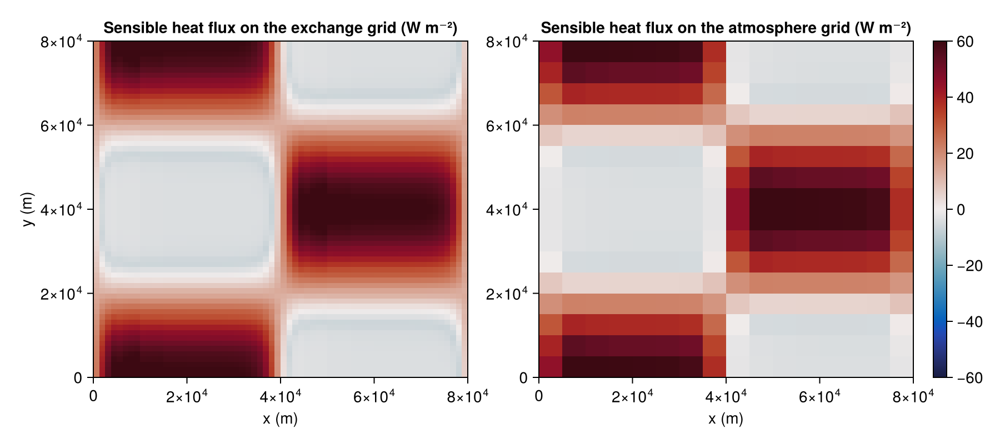
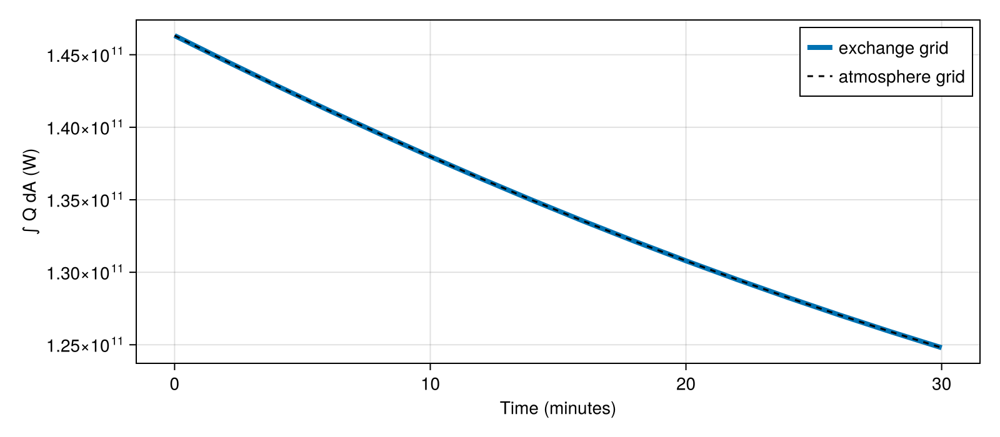

Coupling components on different horizontal grids
Earth system components rarely want the same resolution. An atmosphere with a large eddy turnover length is often coarser than the ocean beneath it, and a land model has its own grid again. EarthSystemModel handles this by computing the surface fluxes on one exchange grid, the ocean's here, and remapping every component that lives on a different horizontal grid. Remapping is first-order conservative, so the energy that leaves the ocean is the energy that enters the atmosphere.
In this example a coarse Breeze atmosphere sits over a slab ocean four times finer, with a sea surface temperature front that only the ocean can resolve. We compare the heat flux on the two grids and check that their global integrals agree.
Loading ConservativeRegridding enables the remapping:
using NumericalEarth
using Oceananigans
using Oceananigans.Units
using Breeze
using ConservativeRegridding
using CairoMakie[ Info: Oceananigans will use 8 threads
The two grids
Both grids span the same doubly periodic domain. The atmosphere has 16 × 16 columns and the ocean 64 × 64 cells.
extent = 80kilometers
atmosphere_grid = RectilinearGrid(size = (16, 16, 32),
halo = (5, 5, 5),
x = (0, extent),
y = (0, extent),
z = (0, 4kilometers),
topology = (Periodic, Periodic, Bounded))
ocean_grid = RectilinearGrid(size = (64, 64),
halo = (5, 5),
x = (0, extent),
y = (0, extent),
topology = (Periodic, Periodic, Flat))64×64×1 RectilinearGrid{Float64, Periodic, Periodic, Flat} on CPU with 5×5×0 halo
├── Periodic x ∈ [0.0, 80000.0) regularly spaced with Δx=1250.0
├── Periodic y ∈ [0.0, 80000.0) regularly spaced with Δy=1250.0
└── Flat z The components
The atmosphere starts with a uniform potential temperature and a steady wind. The ocean has warm and cold bands that are sharper than an atmospheric grid cell.
θ₀ = 285
reference_state = ReferenceState(atmosphere_grid, ThermodynamicConstants(); potential_temperature=θ₀)
dynamics = AnelasticDynamics(reference_state)
atmosphere = atmosphere_simulation(atmosphere_grid; dynamics)
set!(atmosphere.model, θ=θ₀, u=5)
ocean = SlabOcean(ocean_grid, depth=50, density=1025, heat_capacity=4000)
sea_surface_temperature(x, y) = θ₀ + 3 + 6tanh(4sinpi(2x / extent)) * cospi(2y / extent)
set!(ocean, T=sea_surface_temperature)The model picks the regridder: the two grids have the same type but different horizontal cell faces, so it remaps. On a horizontally identical grid it would share the fields directly.
model = AtmosphereOceanModel(atmosphere, ocean)EarthSystemModel{CPU}(time = 0 seconds, iteration = 0)
├── radiation: Nothing
├── atmosphere: Oceananigans.Simulations.Simulation{Breeze.AtmosphereModels.AtmosphereModel{Breeze.AnelasticEquations.AnelasticDynamics{Breeze.Thermodynamics.ReferenceState{Float64, Oceananigans.Fields.Field{Oceananigans.Grids.Center, Oceananigans.Grids.Center, Nothing, Nothing, Oceananigans.Grids.RectilinearGrid{Float64, Oceananigans.Grids.Periodic, Oceananigans.Grids.Periodic, Oceananigans.Grids.Bounded, Oceananigans.Grids.StaticVerticalDiscretization{OffsetArrays.OffsetVector{Float64, StepRangeLen{Float64, Base.TwicePrecision{Float64}, Base.TwicePrecision{Float64}, Int64}}, OffsetArrays.OffsetVector{Float64, StepRangeLen{Float64, Base.TwicePrecision{Float64}, Base.TwicePrecision{Float64}, Int64}}, Float64, Float64}, Float64, Float64, OffsetArrays.OffsetVector{Float64, StepRangeLen{Float64, Base.TwicePrecision{Float64}, Base.TwicePrecision{Float64}, Int64}}, OffsetArrays.OffsetVector{Float64, StepRangeLen{Float64, Base.TwicePrecision{Float64}, Base.TwicePrecision{Float64}, Int64}}, Oceananigans.Architectures.CPU, Oceananigans.Grids.GridSize{16, 16, 32, 5, 5, 5}}, Tuple{Colon, Colon, Colon}, OffsetArrays.OffsetArray{Float64, 3, Array{Float64, 3}}, Float64, Oceananigans.BoundaryConditions.FieldBoundaryConditions{Oceananigans.BoundaryConditions.BoundaryCondition{Oceananigans.BoundaryConditions.Periodic, Nothing}, Oceananigans.BoundaryConditions.BoundaryCondition{Oceananigans.BoundaryConditions.Periodic, Nothing}, Oceananigans.BoundaryConditions.BoundaryCondition{Oceananigans.BoundaryConditions.Periodic, Nothing}, Oceananigans.BoundaryConditions.BoundaryCondition{Oceananigans.BoundaryConditions.Periodic, Nothing}, Nothing, Nothing, Nothing, @NamedTuple{bottom_and_top::Nothing, south_and_north::Oceananigans.BoundaryConditions.PeriodicFillHalo{KernelAbstractions.Kernel{KernelAbstractions.CPU, KernelAbstractions.NDIteration.StaticSize{(26, 1)}, Oceananigans.Utils.OffsetStaticSize{(1:26, 1:1)}, typeof(Oceananigans.BoundaryConditions.cpu__fill_periodic_south_and_north_halo!)}, 16, 5}, west_and_east::Oceananigans.BoundaryConditions.PeriodicFillHalo{KernelAbstractions.Kernel{KernelAbstractions.CPU, KernelAbstractions.NDIteration.StaticSize{(26, 1)}, Oceananigans.Utils.OffsetStaticSize{(1:26, 1:1)}, typeof(Oceananigans.BoundaryConditions.cpu__fill_periodic_west_and_east_halo!)}, 16, 5}}, @NamedTuple{bottom_and_top::Tuple{Nothing, Nothing}, south_and_north::Tuple{Oceananigans.BoundaryConditions.BoundaryCondition{Oceananigans.BoundaryConditions.Periodic, Nothing}, Oceananigans.BoundaryConditions.BoundaryCondition{Oceananigans.BoundaryConditions.Periodic, Nothing}}, west_and_east::Tuple{Oceananigans.BoundaryConditions.BoundaryCondition{Oceananigans.BoundaryConditions.Periodic, Nothing}, Oceananigans.BoundaryConditions.BoundaryCondition{Oceananigans.BoundaryConditions.Periodic, Nothing}}}}, Nothing, Nothing}, Oceananigans.Fields.Field{Oceananigans.Grids.Center, Oceananigans.Grids.Center, Nothing, Nothing, Oceananigans.Grids.RectilinearGrid{Float64, Oceananigans.Grids.Periodic, Oceananigans.Grids.Periodic, Oceananigans.Grids.Bounded, Oceananigans.Grids.StaticVerticalDiscretization{OffsetArrays.OffsetVector{Float64, StepRangeLen{Float64, Base.TwicePrecision{Float64}, Base.TwicePrecision{Float64}, Int64}}, OffsetArrays.OffsetVector{Float64, StepRangeLen{Float64, Base.TwicePrecision{Float64}, Base.TwicePrecision{Float64}, Int64}}, Float64, Float64}, Float64, Float64, OffsetArrays.OffsetVector{Float64, StepRangeLen{Float64, Base.TwicePrecision{Float64}, Base.TwicePrecision{Float64}, Int64}}, OffsetArrays.OffsetVector{Float64, StepRangeLen{Float64, Base.TwicePrecision{Float64}, Base.TwicePrecision{Float64}, Int64}}, Oceananigans.Architectures.CPU, Oceananigans.Grids.GridSize{16, 16, 32, 5, 5, 5}}, Tuple{Colon, Colon, Colon}, OffsetArrays.OffsetArray{Float64, 3, Array{Float64, 3}}, Float64, Oceananigans.BoundaryConditions.FieldBoundaryConditions{Oceananigans.BoundaryConditions.BoundaryCondition{Oceananigans.BoundaryConditions.Periodic, Nothing}, Oceananigans.BoundaryConditions.BoundaryCondition{Oceananigans.BoundaryConditions.Periodic, Nothing}, Oceananigans.BoundaryConditions.BoundaryCondition{Oceananigans.BoundaryConditions.Periodic, Nothing}, Oceananigans.BoundaryConditions.BoundaryCondition{Oceananigans.BoundaryConditions.Periodic, Nothing}, Nothing, Nothing, Nothing, @NamedTuple{bottom_and_top::Nothing, south_and_north::Oceananigans.BoundaryConditions.PeriodicFillHalo{KernelAbstractions.Kernel{KernelAbstractions.CPU, KernelAbstractions.NDIteration.StaticSize{(26, 1)}, Oceananigans.Utils.OffsetStaticSize{(1:26, 1:1)}, typeof(Oceananigans.BoundaryConditions.cpu__fill_periodic_south_and_north_halo!)}, 16, 5}, west_and_east::Oceananigans.BoundaryConditions.PeriodicFillHalo{KernelAbstractions.Kernel{KernelAbstractions.CPU, KernelAbstractions.NDIteration.StaticSize{(26, 1)}, Oceananigans.Utils.OffsetStaticSize{(1:26, 1:1)}, typeof(Oceananigans.BoundaryConditions.cpu__fill_periodic_west_and_east_halo!)}, 16, 5}}, @NamedTuple{bottom_and_top::Tuple{Nothing, Nothing}, south_and_north::Tuple{Oceananigans.BoundaryConditions.BoundaryCondition{Oceananigans.BoundaryConditions.Periodic, Nothing}, Oceananigans.BoundaryConditions.BoundaryCondition{Oceananigans.BoundaryConditions.Periodic, Nothing}}, west_and_east::Tuple{Oceananigans.BoundaryConditions.BoundaryCondition{Oceananigans.BoundaryConditions.Periodic, Nothing}, Oceananigans.BoundaryConditions.BoundaryCondition{Oceananigans.BoundaryConditions.Periodic, Nothing}}}}, Nothing, Nothing}, Oceananigans.Fields.Field{Oceananigans.Grids.Center, Oceananigans.Grids.Center, Nothing, Nothing, Oceananigans.Grids.RectilinearGrid{Float64, Oceananigans.Grids.Periodic, Oceananigans.Grids.Periodic, Oceananigans.Grids.Bounded, Oceananigans.Grids.StaticVerticalDiscretization{OffsetArrays.OffsetVector{Float64, StepRangeLen{Float64, Base.TwicePrecision{Float64}, Base.TwicePrecision{Float64}, Int64}}, OffsetArrays.OffsetVector{Float64, StepRangeLen{Float64, Base.TwicePrecision{Float64}, Base.TwicePrecision{Float64}, Int64}}, Float64, Float64}, Float64, Float64, OffsetArrays.OffsetVector{Float64, StepRangeLen{Float64, Base.TwicePrecision{Float64}, Base.TwicePrecision{Float64}, Int64}}, OffsetArrays.OffsetVector{Float64, StepRangeLen{Float64, Base.TwicePrecision{Float64}, Base.TwicePrecision{Float64}, Int64}}, Oceananigans.Architectures.CPU, Oceananigans.Grids.GridSize{16, 16, 32, 5, 5, 5}}, Tuple{Colon, Colon, Colon}, OffsetArrays.OffsetArray{Float64, 3, Array{Float64, 3}}, Float64, Oceananigans.BoundaryConditions.FieldBoundaryConditions{Oceananigans.BoundaryConditions.BoundaryCondition{Oceananigans.BoundaryConditions.Periodic, Nothing}, Oceananigans.BoundaryConditions.BoundaryCondition{Oceananigans.BoundaryConditions.Periodic, Nothing}, Oceananigans.BoundaryConditions.BoundaryCondition{Oceananigans.BoundaryConditions.Periodic, Nothing}, Oceananigans.BoundaryConditions.BoundaryCondition{Oceananigans.BoundaryConditions.Periodic, Nothing}, Nothing, Nothing, Nothing, @NamedTuple{bottom_and_top::Nothing, south_and_north::Oceananigans.BoundaryConditions.PeriodicFillHalo{KernelAbstractions.Kernel{KernelAbstractions.CPU, KernelAbstractions.NDIteration.StaticSize{(26, 1)}, Oceananigans.Utils.OffsetStaticSize{(1:26, 1:1)}, typeof(Oceananigans.BoundaryConditions.cpu__fill_periodic_south_and_north_halo!)}, 16, 5}, west_and_east::Oceananigans.BoundaryConditions.PeriodicFillHalo{KernelAbstractions.Kernel{KernelAbstractions.CPU, KernelAbstractions.NDIteration.StaticSize{(26, 1)}, Oceananigans.Utils.OffsetStaticSize{(1:26, 1:1)}, typeof(Oceananigans.BoundaryConditions.cpu__fill_periodic_west_and_east_halo!)}, 16, 5}}, @NamedTuple{bottom_and_top::Tuple{Nothing, Nothing}, south_and_north::Tuple{Oceananigans.BoundaryConditions.BoundaryCondition{Oceananigans.BoundaryConditions.Periodic, Nothing}, Oceananigans.BoundaryConditions.BoundaryCondition{Oceananigans.BoundaryConditions.Periodic, Nothing}}, west_and_east::Tuple{Oceananigans.BoundaryConditions.BoundaryCondition{Oceananigans.BoundaryConditions.Periodic, Nothing}, Oceananigans.BoundaryConditions.BoundaryCondition{Oceananigans.BoundaryConditions.Periodic, Nothing}}}}, Nothing, Nothing}, Oceananigans.Fields.Field{Nothing, Nothing, Oceananigans.Grids.Center, Nothing, Oceananigans.Grids.RectilinearGrid{Float64, Oceananigans.Grids.Periodic, Oceananigans.Grids.Periodic, Oceananigans.Grids.Bounded, Oceananigans.Grids.StaticVerticalDiscretization{OffsetArrays.OffsetVector{Float64, StepRangeLen{Float64, Base.TwicePrecision{Float64}, Base.TwicePrecision{Float64}, Int64}}, OffsetArrays.OffsetVector{Float64, StepRangeLen{Float64, Base.TwicePrecision{Float64}, Base.TwicePrecision{Float64}, Int64}}, Float64, Float64}, Float64, Float64, OffsetArrays.OffsetVector{Float64, StepRangeLen{Float64, Base.TwicePrecision{Float64}, Base.TwicePrecision{Float64}, Int64}}, OffsetArrays.OffsetVector{Float64, StepRangeLen{Float64, Base.TwicePrecision{Float64}, Base.TwicePrecision{Float64}, Int64}}, Oceananigans.Architectures.CPU, Oceananigans.Grids.GridSize{16, 16, 32, 5, 5, 5}}, Tuple{Colon, Colon, Colon}, OffsetArrays.OffsetArray{Float64, 3, Array{Float64, 3}}, Float64, Oceananigans.BoundaryConditions.FieldBoundaryConditions{Nothing, Nothing, Nothing, Nothing, Oceananigans.BoundaryConditions.BoundaryCondition{Oceananigans.BoundaryConditions.Value{Nothing}, Oceananigans.Fields.Field{Oceananigans.Grids.Center, Oceananigans.Grids.Center, Nothing, Nothing, Oceananigans.Grids.RectilinearGrid{Float64, Oceananigans.Grids.Periodic, Oceananigans.Grids.Periodic, Oceananigans.Grids.Bounded, Oceananigans.Grids.StaticVerticalDiscretization{OffsetArrays.OffsetVector{Float64, StepRangeLen{Float64, Base.TwicePrecision{Float64}, Base.TwicePrecision{Float64}, Int64}}, OffsetArrays.OffsetVector{Float64, StepRangeLen{Float64, Base.TwicePrecision{Float64}, Base.TwicePrecision{Float64}, Int64}}, Float64, Float64}, Float64, Float64, OffsetArrays.OffsetVector{Float64, StepRangeLen{Float64, Base.TwicePrecision{Float64}, Base.TwicePrecision{Float64}, Int64}}, OffsetArrays.OffsetVector{Float64, StepRangeLen{Float64, Base.TwicePrecision{Float64}, Base.TwicePrecision{Float64}, Int64}}, Oceananigans.Architectures.CPU, Oceananigans.Grids.GridSize{16, 16, 32, 5, 5, 5}}, Tuple{Colon, Colon, Colon}, OffsetArrays.OffsetArray{Float64, 3, Array{Float64, 3}}, Float64, Oceananigans.BoundaryConditions.FieldBoundaryConditions{Oceananigans.BoundaryConditions.BoundaryCondition{Oceananigans.BoundaryConditions.Periodic, Nothing}, Oceananigans.BoundaryConditions.BoundaryCondition{Oceananigans.BoundaryConditions.Periodic, Nothing}, Oceananigans.BoundaryConditions.BoundaryCondition{Oceananigans.BoundaryConditions.Periodic, Nothing}, Oceananigans.BoundaryConditions.BoundaryCondition{Oceananigans.BoundaryConditions.Periodic, Nothing}, Nothing, Nothing, Nothing, @NamedTuple{bottom_and_top::Nothing, south_and_north::Oceananigans.BoundaryConditions.PeriodicFillHalo{KernelAbstractions.Kernel{KernelAbstractions.CPU, KernelAbstractions.NDIteration.StaticSize{(26, 1)}, Oceananigans.Utils.OffsetStaticSize{(1:26, 1:1)}, typeof(Oceananigans.BoundaryConditions.cpu__fill_periodic_south_and_north_halo!)}, 16, 5}, west_and_east::Oceananigans.BoundaryConditions.PeriodicFillHalo{KernelAbstractions.Kernel{KernelAbstractions.CPU, KernelAbstractions.NDIteration.StaticSize{(26, 1)}, Oceananigans.Utils.OffsetStaticSize{(1:26, 1:1)}, typeof(Oceananigans.BoundaryConditions.cpu__fill_periodic_west_and_east_halo!)}, 16, 5}}, @NamedTuple{bottom_and_top::Tuple{Nothing, Nothing}, south_and_north::Tuple{Oceananigans.BoundaryConditions.BoundaryCondition{Oceananigans.BoundaryConditions.Periodic, Nothing}, Oceananigans.BoundaryConditions.BoundaryCondition{Oceananigans.BoundaryConditions.Periodic, Nothing}}, west_and_east::Tuple{Oceananigans.BoundaryConditions.BoundaryCondition{Oceananigans.BoundaryConditions.Periodic, Nothing}, Oceananigans.BoundaryConditions.BoundaryCondition{Oceananigans.BoundaryConditions.Periodic, Nothing}}}}, Nothing, Nothing}}, Oceananigans.BoundaryConditions.NoFluxBoundaryCondition{Oceananigans.BoundaryConditions.Flux{Oceananigans.Utils.ExplicitTimeDiscretization}}, Nothing, @NamedTuple{south_and_north::Nothing, west_and_east::Nothing, bottom_and_top::KernelAbstractions.Kernel{KernelAbstractions.CPU, KernelAbstractions.NDIteration.StaticSize{(1, 1)}, Oceananigans.Utils.OffsetStaticSize{(1:1, 1:1)}, typeof(Oceananigans.BoundaryConditions.cpu__fill_bottom_and_top_halo!)}}, @NamedTuple{south_and_north::Tuple{Nothing, Nothing}, west_and_east::Tuple{Nothing, Nothing}, bottom_and_top::Tuple{Oceananigans.BoundaryConditions.BoundaryCondition{Oceananigans.BoundaryConditions.Value{Nothing}, Oceananigans.Fields.Field{Oceananigans.Grids.Center, Oceananigans.Grids.Center, Nothing, Nothing, Oceananigans.Grids.RectilinearGrid{Float64, Oceananigans.Grids.Periodic, Oceananigans.Grids.Periodic, Oceananigans.Grids.Bounded, Oceananigans.Grids.StaticVerticalDiscretization{OffsetArrays.OffsetVector{Float64, StepRangeLen{Float64, Base.TwicePrecision{Float64}, Base.TwicePrecision{Float64}, Int64}}, OffsetArrays.OffsetVector{Float64, StepRangeLen{Float64, Base.TwicePrecision{Float64}, Base.TwicePrecision{Float64}, Int64}}, Float64, Float64}, Float64, Float64, OffsetArrays.OffsetVector{Float64, StepRangeLen{Float64, Base.TwicePrecision{Float64}, Base.TwicePrecision{Float64}, Int64}}, OffsetArrays.OffsetVector{Float64, StepRangeLen{Float64, Base.TwicePrecision{Float64}, Base.TwicePrecision{Float64}, Int64}}, Oceananigans.Architectures.CPU, Oceananigans.Grids.GridSize{16, 16, 32, 5, 5, 5}}, Tuple{Colon, Colon, Colon}, OffsetArrays.OffsetArray{Float64, 3, Array{Float64, 3}}, Float64, Oceananigans.BoundaryConditions.FieldBoundaryConditions{Oceananigans.BoundaryConditions.BoundaryCondition{Oceananigans.BoundaryConditions.Periodic, Nothing}, Oceananigans.BoundaryConditions.BoundaryCondition{Oceananigans.BoundaryConditions.Periodic, Nothing}, Oceananigans.BoundaryConditions.BoundaryCondition{Oceananigans.BoundaryConditions.Periodic, Nothing}, Oceananigans.BoundaryConditions.BoundaryCondition{Oceananigans.BoundaryConditions.Periodic, Nothing}, Nothing, Nothing, Nothing, @NamedTuple{bottom_and_top::Nothing, south_and_north::Oceananigans.BoundaryConditions.PeriodicFillHalo{KernelAbstractions.Kernel{KernelAbstractions.CPU, KernelAbstractions.NDIteration.StaticSize{(26, 1)}, Oceananigans.Utils.OffsetStaticSize{(1:26, 1:1)}, typeof(Oceananigans.BoundaryConditions.cpu__fill_periodic_south_and_north_halo!)}, 16, 5}, west_and_east::Oceananigans.BoundaryConditions.PeriodicFillHalo{KernelAbstractions.Kernel{KernelAbstractions.CPU, KernelAbstractions.NDIteration.StaticSize{(26, 1)}, Oceananigans.Utils.OffsetStaticSize{(1:26, 1:1)}, typeof(Oceananigans.BoundaryConditions.cpu__fill_periodic_west_and_east_halo!)}, 16, 5}}, @NamedTuple{bottom_and_top::Tuple{Nothing, Nothing}, south_and_north::Tuple{Oceananigans.BoundaryConditions.BoundaryCondition{Oceananigans.BoundaryConditions.Periodic, Nothing}, Oceananigans.BoundaryConditions.BoundaryCondition{Oceananigans.BoundaryConditions.Periodic, Nothing}}, west_and_east::Tuple{Oceananigans.BoundaryConditions.BoundaryCondition{Oceananigans.BoundaryConditions.Periodic, Nothing}, Oceananigans.BoundaryConditions.BoundaryCondition{Oceananigans.BoundaryConditions.Periodic, Nothing}}}}, Nothing, Nothing}}, Oceananigans.BoundaryConditions.NoFluxBoundaryCondition{Oceananigans.BoundaryConditions.Flux{Oceananigans.Utils.ExplicitTimeDiscretization}}}}}, Nothing, Nothing}, Oceananigans.Fields.Field{Nothing, Nothing, Oceananigans.Grids.Center, Nothing, Oceananigans.Grids.RectilinearGrid{Float64, Oceananigans.Grids.Periodic, Oceananigans.Grids.Periodic, Oceananigans.Grids.Bounded, Oceananigans.Grids.StaticVerticalDiscretization{OffsetArrays.OffsetVector{Float64, StepRangeLen{Float64, Base.TwicePrecision{Float64}, Base.TwicePrecision{Float64}, Int64}}, OffsetArrays.OffsetVector{Float64, StepRangeLen{Float64, Base.TwicePrecision{Float64}, Base.TwicePrecision{Float64}, Int64}}, Float64, Float64}, Float64, Float64, OffsetArrays.OffsetVector{Float64, StepRangeLen{Float64, Base.TwicePrecision{Float64}, Base.TwicePrecision{Float64}, Int64}}, OffsetArrays.OffsetVector{Float64, StepRangeLen{Float64, Base.TwicePrecision{Float64}, Base.TwicePrecision{Float64}, Int64}}, Oceananigans.Architectures.CPU, Oceananigans.Grids.GridSize{16, 16, 32, 5, 5, 5}}, Tuple{Colon, Colon, Colon}, OffsetArrays.OffsetArray{Float64, 3, Array{Float64, 3}}, Float64, Oceananigans.BoundaryConditions.FieldBoundaryConditions{Nothing, Nothing, Nothing, Nothing, Oceananigans.BoundaryConditions.BoundaryCondition{Oceananigans.BoundaryConditions.Value{Nothing}, Oceananigans.Fields.Field{Oceananigans.Grids.Center, Oceananigans.Grids.Center, Nothing, Nothing, Oceananigans.Grids.RectilinearGrid{Float64, Oceananigans.Grids.Periodic, Oceananigans.Grids.Periodic, Oceananigans.Grids.Bounded, Oceananigans.Grids.StaticVerticalDiscretization{OffsetArrays.OffsetVector{Float64, StepRangeLen{Float64, Base.TwicePrecision{Float64}, Base.TwicePrecision{Float64}, Int64}}, OffsetArrays.OffsetVector{Float64, StepRangeLen{Float64, Base.TwicePrecision{Float64}, Base.TwicePrecision{Float64}, Int64}}, Float64, Float64}, Float64, Float64, OffsetArrays.OffsetVector{Float64, StepRangeLen{Float64, Base.TwicePrecision{Float64}, Base.TwicePrecision{Float64}, Int64}}, OffsetArrays.OffsetVector{Float64, StepRangeLen{Float64, Base.TwicePrecision{Float64}, Base.TwicePrecision{Float64}, Int64}}, Oceananigans.Architectures.CPU, Oceananigans.Grids.GridSize{16, 16, 32, 5, 5, 5}}, Tuple{Colon, Colon, Colon}, OffsetArrays.OffsetArray{Float64, 3, Array{Float64, 3}}, Float64, Oceananigans.BoundaryConditions.FieldBoundaryConditions{Oceananigans.BoundaryConditions.BoundaryCondition{Oceananigans.BoundaryConditions.Periodic, Nothing}, Oceananigans.BoundaryConditions.BoundaryCondition{Oceananigans.BoundaryConditions.Periodic, Nothing}, Oceananigans.BoundaryConditions.BoundaryCondition{Oceananigans.BoundaryConditions.Periodic, Nothing}, Oceananigans.BoundaryConditions.BoundaryCondition{Oceananigans.BoundaryConditions.Periodic, Nothing}, Nothing, Nothing, Nothing, @NamedTuple{bottom_and_top::Nothing, south_and_north::Oceananigans.BoundaryConditions.PeriodicFillHalo{KernelAbstractions.Kernel{KernelAbstractions.CPU, KernelAbstractions.NDIteration.StaticSize{(26, 1)}, Oceananigans.Utils.OffsetStaticSize{(1:26, 1:1)}, typeof(Oceananigans.BoundaryConditions.cpu__fill_periodic_south_and_north_halo!)}, 16, 5}, west_and_east::Oceananigans.BoundaryConditions.PeriodicFillHalo{KernelAbstractions.Kernel{KernelAbstractions.CPU, KernelAbstractions.NDIteration.StaticSize{(26, 1)}, Oceananigans.Utils.OffsetStaticSize{(1:26, 1:1)}, typeof(Oceananigans.BoundaryConditions.cpu__fill_periodic_west_and_east_halo!)}, 16, 5}}, @NamedTuple{bottom_and_top::Tuple{Nothing, Nothing}, south_and_north::Tuple{Oceananigans.BoundaryConditions.BoundaryCondition{Oceananigans.BoundaryConditions.Periodic, Nothing}, Oceananigans.BoundaryConditions.BoundaryCondition{Oceananigans.BoundaryConditions.Periodic, Nothing}}, west_and_east::Tuple{Oceananigans.BoundaryConditions.BoundaryCondition{Oceananigans.BoundaryConditions.Periodic, Nothing}, Oceananigans.BoundaryConditions.BoundaryCondition{Oceananigans.BoundaryConditions.Periodic, Nothing}}}}, Nothing, Nothing}}, Oceananigans.BoundaryConditions.NoFluxBoundaryCondition{Oceananigans.BoundaryConditions.Flux{Oceananigans.Utils.ExplicitTimeDiscretization}}, Nothing, @NamedTuple{south_and_north::Nothing, west_and_east::Nothing, bottom_and_top::KernelAbstractions.Kernel{KernelAbstractions.CPU, KernelAbstractions.NDIteration.StaticSize{(1, 1)}, Oceananigans.Utils.OffsetStaticSize{(1:1, 1:1)}, typeof(Oceananigans.BoundaryConditions.cpu__fill_bottom_and_top_halo!)}}, @NamedTuple{south_and_north::Tuple{Nothing, Nothing}, west_and_east::Tuple{Nothing, Nothing}, bottom_and_top::Tuple{Oceananigans.BoundaryConditions.BoundaryCondition{Oceananigans.BoundaryConditions.Value{Nothing}, Oceananigans.Fields.Field{Oceananigans.Grids.Center, Oceananigans.Grids.Center, Nothing, Nothing, Oceananigans.Grids.RectilinearGrid{Float64, Oceananigans.Grids.Periodic, Oceananigans.Grids.Periodic, Oceananigans.Grids.Bounded, Oceananigans.Grids.StaticVerticalDiscretization{OffsetArrays.OffsetVector{Float64, StepRangeLen{Float64, Base.TwicePrecision{Float64}, Base.TwicePrecision{Float64}, Int64}}, OffsetArrays.OffsetVector{Float64, StepRangeLen{Float64, Base.TwicePrecision{Float64}, Base.TwicePrecision{Float64}, Int64}}, Float64, Float64}, Float64, Float64, OffsetArrays.OffsetVector{Float64, StepRangeLen{Float64, Base.TwicePrecision{Float64}, Base.TwicePrecision{Float64}, Int64}}, OffsetArrays.OffsetVector{Float64, StepRangeLen{Float64, Base.TwicePrecision{Float64}, Base.TwicePrecision{Float64}, Int64}}, Oceananigans.Architectures.CPU, Oceananigans.Grids.GridSize{16, 16, 32, 5, 5, 5}}, Tuple{Colon, Colon, Colon}, OffsetArrays.OffsetArray{Float64, 3, Array{Float64, 3}}, Float64, Oceananigans.BoundaryConditions.FieldBoundaryConditions{Oceananigans.BoundaryConditions.BoundaryCondition{Oceananigans.BoundaryConditions.Periodic, Nothing}, Oceananigans.BoundaryConditions.BoundaryCondition{Oceananigans.BoundaryConditions.Periodic, Nothing}, Oceananigans.BoundaryConditions.BoundaryCondition{Oceananigans.BoundaryConditions.Periodic, Nothing}, Oceananigans.BoundaryConditions.BoundaryCondition{Oceananigans.BoundaryConditions.Periodic, Nothing}, Nothing, Nothing, Nothing, @NamedTuple{bottom_and_top::Nothing, south_and_north::Oceananigans.BoundaryConditions.PeriodicFillHalo{KernelAbstractions.Kernel{KernelAbstractions.CPU, KernelAbstractions.NDIteration.StaticSize{(26, 1)}, Oceananigans.Utils.OffsetStaticSize{(1:26, 1:1)}, typeof(Oceananigans.BoundaryConditions.cpu__fill_periodic_south_and_north_halo!)}, 16, 5}, west_and_east::Oceananigans.BoundaryConditions.PeriodicFillHalo{KernelAbstractions.Kernel{KernelAbstractions.CPU, KernelAbstractions.NDIteration.StaticSize{(26, 1)}, Oceananigans.Utils.OffsetStaticSize{(1:26, 1:1)}, typeof(Oceananigans.BoundaryConditions.cpu__fill_periodic_west_and_east_halo!)}, 16, 5}}, @NamedTuple{bottom_and_top::Tuple{Nothing, Nothing}, south_and_north::Tuple{Oceananigans.BoundaryConditions.BoundaryCondition{Oceananigans.BoundaryConditions.Periodic, Nothing}, Oceananigans.BoundaryConditions.BoundaryCondition{Oceananigans.BoundaryConditions.Periodic, Nothing}}, west_and_east::Tuple{Oceananigans.BoundaryConditions.BoundaryCondition{Oceananigans.BoundaryConditions.Periodic, Nothing}, Oceananigans.BoundaryConditions.BoundaryCondition{Oceananigans.BoundaryConditions.Periodic, Nothing}}}}, Nothing, Nothing}}, Oceananigans.BoundaryConditions.NoFluxBoundaryCondition{Oceananigans.BoundaryConditions.Flux{Oceananigans.Utils.ExplicitTimeDiscretization}}}}}, Nothing, Nothing}, Oceananigans.Fields.Field{Nothing, Nothing, Oceananigans.Grids.Center, Nothing, Oceananigans.Grids.RectilinearGrid{Float64, Oceananigans.Grids.Periodic, Oceananigans.Grids.Periodic, Oceananigans.Grids.Bounded, Oceananigans.Grids.StaticVerticalDiscretization{OffsetArrays.OffsetVector{Float64, StepRangeLen{Float64, Base.TwicePrecision{Float64}, Base.TwicePrecision{Float64}, Int64}}, OffsetArrays.OffsetVector{Float64, StepRangeLen{Float64, Base.TwicePrecision{Float64}, Base.TwicePrecision{Float64}, Int64}}, Float64, Float64}, Float64, Float64, OffsetArrays.OffsetVector{Float64, StepRangeLen{Float64, Base.TwicePrecision{Float64}, Base.TwicePrecision{Float64}, Int64}}, OffsetArrays.OffsetVector{Float64, StepRangeLen{Float64, Base.TwicePrecision{Float64}, Base.TwicePrecision{Float64}, Int64}}, Oceananigans.Architectures.CPU, Oceananigans.Grids.GridSize{16, 16, 32, 5, 5, 5}}, Tuple{Colon, Colon, Colon}, OffsetArrays.OffsetArray{Float64, 3, Array{Float64, 3}}, Float64, Oceananigans.BoundaryConditions.FieldBoundaryConditions{Nothing, Nothing, Nothing, Nothing, Oceananigans.BoundaryConditions.NoFluxBoundaryCondition{Oceananigans.BoundaryConditions.Flux{Oceananigans.Utils.ExplicitTimeDiscretization}}, Oceananigans.BoundaryConditions.NoFluxBoundaryCondition{Oceananigans.BoundaryConditions.Flux{Oceananigans.Utils.ExplicitTimeDiscretization}}, Nothing, @NamedTuple{south_and_north::Nothing, west_and_east::Nothing, bottom_and_top::KernelAbstractions.Kernel{KernelAbstractions.CPU, KernelAbstractions.NDIteration.StaticSize{(1, 1)}, Oceananigans.Utils.OffsetStaticSize{(1:1, 1:1)}, typeof(Oceananigans.BoundaryConditions.cpu__fill_bottom_and_top_halo!)}}, @NamedTuple{south_and_north::Tuple{Nothing, Nothing}, west_and_east::Tuple{Nothing, Nothing}, bottom_and_top::Tuple{Oceananigans.BoundaryConditions.NoFluxBoundaryCondition{Oceananigans.BoundaryConditions.Flux{Oceananigans.Utils.ExplicitTimeDiscretization}}, Oceananigans.BoundaryConditions.NoFluxBoundaryCondition{Oceananigans.BoundaryConditions.Flux{Oceananigans.Utils.ExplicitTimeDiscretization}}}}}, Nothing, Nothing}, Oceananigans.Fields.ZeroField{Float64, 3}, Oceananigans.Fields.ZeroField{Float64, 3}, Oceananigans.Fields.ZeroField{Float64, 3}}, Oceananigans.Fields.Field{Oceananigans.Grids.Center, Oceananigans.Grids.Center, Oceananigans.Grids.Center, Nothing, Oceananigans.Grids.RectilinearGrid{Float64, Oceananigans.Grids.Periodic, Oceananigans.Grids.Periodic, Oceananigans.Grids.Bounded, Oceananigans.Grids.StaticVerticalDiscretization{OffsetArrays.OffsetVector{Float64, StepRangeLen{Float64, Base.TwicePrecision{Float64}, Base.TwicePrecision{Float64}, Int64}}, OffsetArrays.OffsetVector{Float64, StepRangeLen{Float64, Base.TwicePrecision{Float64}, Base.TwicePrecision{Float64}, Int64}}, Float64, Float64}, Float64, Float64, OffsetArrays.OffsetVector{Float64, StepRangeLen{Float64, Base.TwicePrecision{Float64}, Base.TwicePrecision{Float64}, Int64}}, OffsetArrays.OffsetVector{Float64, StepRangeLen{Float64, Base.TwicePrecision{Float64}, Base.TwicePrecision{Float64}, Int64}}, Oceananigans.Architectures.CPU, Oceananigans.Grids.GridSize{16, 16, 32, 5, 5, 5}}, Tuple{Colon, Colon, Colon}, OffsetArrays.OffsetArray{Float64, 3, Array{Float64, 3}}, Float64, Oceananigans.BoundaryConditions.FieldBoundaryConditions{Oceananigans.BoundaryConditions.BoundaryCondition{Oceananigans.BoundaryConditions.Periodic, Nothing}, Oceananigans.BoundaryConditions.BoundaryCondition{Oceananigans.BoundaryConditions.Periodic, Nothing}, Oceananigans.BoundaryConditions.BoundaryCondition{Oceananigans.BoundaryConditions.Periodic, Nothing}, Oceananigans.BoundaryConditions.BoundaryCondition{Oceananigans.BoundaryConditions.Periodic, Nothing}, Oceananigans.BoundaryConditions.NoFluxBoundaryCondition{Oceananigans.BoundaryConditions.Flux{Oceananigans.Utils.ExplicitTimeDiscretization}}, Oceananigans.BoundaryConditions.NoFluxBoundaryCondition{Oceananigans.BoundaryConditions.Flux{Oceananigans.Utils.ExplicitTimeDiscretization}}, Nothing, @NamedTuple{bottom_and_top::KernelAbstractions.Kernel{KernelAbstractions.CPU, KernelAbstractions.NDIteration.StaticSize{(16, 1)}, Oceananigans.Utils.OffsetStaticSize{(1:16, 1:16)}, typeof(Oceananigans.BoundaryConditions.cpu__fill_bottom_and_top_halo!)}, south_and_north::Oceananigans.BoundaryConditions.PeriodicFillHalo{KernelAbstractions.Kernel{KernelAbstractions.CPU, KernelAbstractions.NDIteration.StaticSize{(26, 1)}, Oceananigans.Utils.OffsetStaticSize{(1:26, 1:42)}, typeof(Oceananigans.BoundaryConditions.cpu__fill_periodic_south_and_north_halo!)}, 16, 5}, west_and_east::Oceananigans.BoundaryConditions.PeriodicFillHalo{KernelAbstractions.Kernel{KernelAbstractions.CPU, KernelAbstractions.NDIteration.StaticSize{(26, 1)}, Oceananigans.Utils.OffsetStaticSize{(1:26, 1:42)}, typeof(Oceananigans.BoundaryConditions.cpu__fill_periodic_west_and_east_halo!)}, 16, 5}}, @NamedTuple{bottom_and_top::Tuple{Oceananigans.BoundaryConditions.NoFluxBoundaryCondition{Oceananigans.BoundaryConditions.Flux{Oceananigans.Utils.ExplicitTimeDiscretization}}, Oceananigans.BoundaryConditions.NoFluxBoundaryCondition{Oceananigans.BoundaryConditions.Flux{Oceananigans.Utils.ExplicitTimeDiscretization}}}, south_and_north::Tuple{Oceananigans.BoundaryConditions.BoundaryCondition{Oceananigans.BoundaryConditions.Periodic, Nothing}, Oceananigans.BoundaryConditions.BoundaryCondition{Oceananigans.BoundaryConditions.Periodic, Nothing}}, west_and_east::Tuple{Oceananigans.BoundaryConditions.BoundaryCondition{Oceananigans.BoundaryConditions.Periodic, Nothing}, Oceananigans.BoundaryConditions.BoundaryCondition{Oceananigans.BoundaryConditions.Periodic, Nothing}}}}, Nothing, Nothing}, DataType}, Breeze.PotentialTemperatureFormulations.LiquidIcePotentialTemperatureFormulation{Oceananigans.Fields.Field{Oceananigans.Grids.Center, Oceananigans.Grids.Center, Oceananigans.Grids.Center, Nothing, Oceananigans.Grids.RectilinearGrid{Float64, Oceananigans.Grids.Periodic, Oceananigans.Grids.Periodic, Oceananigans.Grids.Bounded, Oceananigans.Grids.StaticVerticalDiscretization{OffsetArrays.OffsetVector{Float64, StepRangeLen{Float64, Base.TwicePrecision{Float64}, Base.TwicePrecision{Float64}, Int64}}, OffsetArrays.OffsetVector{Float64, StepRangeLen{Float64, Base.TwicePrecision{Float64}, Base.TwicePrecision{Float64}, Int64}}, Float64, Float64}, Float64, Float64, OffsetArrays.OffsetVector{Float64, StepRangeLen{Float64, Base.TwicePrecision{Float64}, Base.TwicePrecision{Float64}, Int64}}, OffsetArrays.OffsetVector{Float64, StepRangeLen{Float64, Base.TwicePrecision{Float64}, Base.TwicePrecision{Float64}, Int64}}, Oceananigans.Architectures.CPU, Oceananigans.Grids.GridSize{16, 16, 32, 5, 5, 5}}, Tuple{Colon, Colon, Colon}, OffsetArrays.OffsetArray{Float64, 3, Array{Float64, 3}}, Float64, Oceananigans.BoundaryConditions.FieldBoundaryConditions{Oceananigans.BoundaryConditions.BoundaryCondition{Oceananigans.BoundaryConditions.Periodic, Nothing}, Oceananigans.BoundaryConditions.BoundaryCondition{Oceananigans.BoundaryConditions.Periodic, Nothing}, Oceananigans.BoundaryConditions.BoundaryCondition{Oceananigans.BoundaryConditions.Periodic, Nothing}, Oceananigans.BoundaryConditions.BoundaryCondition{Oceananigans.BoundaryConditions.Periodic, Nothing}, Oceananigans.BoundaryConditions.BoundaryCondition{Oceananigans.BoundaryConditions.Flux{Oceananigans.Utils.ExplicitTimeDiscretization}, Breeze.BoundaryConditions.EnergyFluxBoundaryConditionFunction{Oceananigans.Fields.Field{Oceananigans.Grids.Center, Oceananigans.Grids.Center, Nothing, Nothing, Oceananigans.Grids.RectilinearGrid{Float64, Oceananigans.Grids.Periodic, Oceananigans.Grids.Periodic, Oceananigans.Grids.Bounded, Oceananigans.Grids.StaticVerticalDiscretization{OffsetArrays.OffsetVector{Float64, StepRangeLen{Float64, Base.TwicePrecision{Float64}, Base.TwicePrecision{Float64}, Int64}}, OffsetArrays.OffsetVector{Float64, StepRangeLen{Float64, Base.TwicePrecision{Float64}, Base.TwicePrecision{Float64}, Int64}}, Float64, Float64}, Float64, Float64, OffsetArrays.OffsetVector{Float64, StepRangeLen{Float64, Base.TwicePrecision{Float64}, Base.TwicePrecision{Float64}, Int64}}, OffsetArrays.OffsetVector{Float64, StepRangeLen{Float64, Base.TwicePrecision{Float64}, Base.TwicePrecision{Float64}, Int64}}, Oceananigans.Architectures.CPU, Oceananigans.Grids.GridSize{16, 16, 32, 5, 5, 5}}, Tuple{Colon, Colon, Colon}, OffsetArrays.OffsetArray{Float64, 3, Array{Float64, 3}}, Float64, Oceananigans.BoundaryConditions.FieldBoundaryConditions{Oceananigans.BoundaryConditions.BoundaryCondition{Oceananigans.BoundaryConditions.Periodic, Nothing}, Oceananigans.BoundaryConditions.BoundaryCondition{Oceananigans.BoundaryConditions.Periodic, Nothing}, Oceananigans.BoundaryConditions.BoundaryCondition{Oceananigans.BoundaryConditions.Periodic, Nothing}, Oceananigans.BoundaryConditions.BoundaryCondition{Oceananigans.BoundaryConditions.Periodic, Nothing}, Nothing, Nothing, Nothing, @NamedTuple{bottom_and_top::Nothing, south_and_north::Oceananigans.BoundaryConditions.PeriodicFillHalo{KernelAbstractions.Kernel{KernelAbstractions.CPU, KernelAbstractions.NDIteration.StaticSize{(26, 1)}, Oceananigans.Utils.OffsetStaticSize{(1:26, 1:1)}, typeof(Oceananigans.BoundaryConditions.cpu__fill_periodic_south_and_north_halo!)}, 16, 5}, west_and_east::Oceananigans.BoundaryConditions.PeriodicFillHalo{KernelAbstractions.Kernel{KernelAbstractions.CPU, KernelAbstractions.NDIteration.StaticSize{(26, 1)}, Oceananigans.Utils.OffsetStaticSize{(1:26, 1:1)}, typeof(Oceananigans.BoundaryConditions.cpu__fill_periodic_west_and_east_halo!)}, 16, 5}}, @NamedTuple{bottom_and_top::Tuple{Nothing, Nothing}, south_and_north::Tuple{Oceananigans.BoundaryConditions.BoundaryCondition{Oceananigans.BoundaryConditions.Periodic, Nothing}, Oceananigans.BoundaryConditions.BoundaryCondition{Oceananigans.BoundaryConditions.Periodic, Nothing}}, west_and_east::Tuple{Oceananigans.BoundaryConditions.BoundaryCondition{Oceananigans.BoundaryConditions.Periodic, Nothing}, Oceananigans.BoundaryConditions.BoundaryCondition{Oceananigans.BoundaryConditions.Periodic, Nothing}}}}, Nothing, Nothing}, Oceananigans.BoundaryConditions.Bottom, Breeze.Microphysics.SaturationAdjustment{Breeze.Thermodynamics.WarmPhaseEquilibrium, Breeze.Solvers.SecantSolver{Float64}}, Breeze.Thermodynamics.ClausiusClapeyronThermodynamicConstants{Float64, Breeze.Thermodynamics.CondensedPhase{Float64}, Breeze.Thermodynamics.CondensedPhase{Float64}}, Oceananigans.Fields.Field{Nothing, Nothing, Oceananigans.Grids.Center, Nothing, Oceananigans.Grids.RectilinearGrid{Float64, Oceananigans.Grids.Periodic, Oceananigans.Grids.Periodic, Oceananigans.Grids.Bounded, Oceananigans.Grids.StaticVerticalDiscretization{OffsetArrays.OffsetVector{Float64, StepRangeLen{Float64, Base.TwicePrecision{Float64}, Base.TwicePrecision{Float64}, Int64}}, OffsetArrays.OffsetVector{Float64, StepRangeLen{Float64, Base.TwicePrecision{Float64}, Base.TwicePrecision{Float64}, Int64}}, Float64, Float64}, Float64, Float64, OffsetArrays.OffsetVector{Float64, StepRangeLen{Float64, Base.TwicePrecision{Float64}, Base.TwicePrecision{Float64}, Int64}}, OffsetArrays.OffsetVector{Float64, StepRangeLen{Float64, Base.TwicePrecision{Float64}, Base.TwicePrecision{Float64}, Int64}}, Oceananigans.Architectures.CPU, Oceananigans.Grids.GridSize{16, 16, 32, 5, 5, 5}}, Tuple{Colon, Colon, Colon}, OffsetArrays.OffsetArray{Float64, 3, Array{Float64, 3}}, Float64, Oceananigans.BoundaryConditions.FieldBoundaryConditions{Nothing, Nothing, Nothing, Nothing, Oceananigans.BoundaryConditions.BoundaryCondition{Oceananigans.BoundaryConditions.Value{Nothing}, Oceananigans.Fields.Field{Oceananigans.Grids.Center, Oceananigans.Grids.Center, Nothing, Nothing, Oceananigans.Grids.RectilinearGrid{Float64, Oceananigans.Grids.Periodic, Oceananigans.Grids.Periodic, Oceananigans.Grids.Bounded, Oceananigans.Grids.StaticVerticalDiscretization{OffsetArrays.OffsetVector{Float64, StepRangeLen{Float64, Base.TwicePrecision{Float64}, Base.TwicePrecision{Float64}, Int64}}, OffsetArrays.OffsetVector{Float64, StepRangeLen{Float64, Base.TwicePrecision{Float64}, Base.TwicePrecision{Float64}, Int64}}, Float64, Float64}, Float64, Float64, OffsetArrays.OffsetVector{Float64, StepRangeLen{Float64, Base.TwicePrecision{Float64}, Base.TwicePrecision{Float64}, Int64}}, OffsetArrays.OffsetVector{Float64, StepRangeLen{Float64, Base.TwicePrecision{Float64}, Base.TwicePrecision{Float64}, Int64}}, Oceananigans.Architectures.CPU, Oceananigans.Grids.GridSize{16, 16, 32, 5, 5, 5}}, Tuple{Colon, Colon, Colon}, OffsetArrays.OffsetArray{Float64, 3, Array{Float64, 3}}, Float64, Oceananigans.BoundaryConditions.FieldBoundaryConditions{Oceananigans.BoundaryConditions.BoundaryCondition{Oceananigans.BoundaryConditions.Periodic, Nothing}, Oceananigans.BoundaryConditions.BoundaryCondition{Oceananigans.BoundaryConditions.Periodic, Nothing}, Oceananigans.BoundaryConditions.BoundaryCondition{Oceananigans.BoundaryConditions.Periodic, Nothing}, Oceananigans.BoundaryConditions.BoundaryCondition{Oceananigans.BoundaryConditions.Periodic, Nothing}, Nothing, Nothing, Nothing, @NamedTuple{bottom_and_top::Nothing, south_and_north::Oceananigans.BoundaryConditions.PeriodicFillHalo{KernelAbstractions.Kernel{KernelAbstractions.CPU, KernelAbstractions.NDIteration.StaticSize{(26, 1)}, Oceananigans.Utils.OffsetStaticSize{(1:26, 1:1)}, typeof(Oceananigans.BoundaryConditions.cpu__fill_periodic_south_and_north_halo!)}, 16, 5}, west_and_east::Oceananigans.BoundaryConditions.PeriodicFillHalo{KernelAbstractions.Kernel{KernelAbstractions.CPU, KernelAbstractions.NDIteration.StaticSize{(26, 1)}, Oceananigans.Utils.OffsetStaticSize{(1:26, 1:1)}, typeof(Oceananigans.BoundaryConditions.cpu__fill_periodic_west_and_east_halo!)}, 16, 5}}, @NamedTuple{bottom_and_top::Tuple{Nothing, Nothing}, south_and_north::Tuple{Oceananigans.BoundaryConditions.BoundaryCondition{Oceananigans.BoundaryConditions.Periodic, Nothing}, Oceananigans.BoundaryConditions.BoundaryCondition{Oceananigans.BoundaryConditions.Periodic, Nothing}}, west_and_east::Tuple{Oceananigans.BoundaryConditions.BoundaryCondition{Oceananigans.BoundaryConditions.Periodic, Nothing}, Oceananigans.BoundaryConditions.BoundaryCondition{Oceananigans.BoundaryConditions.Periodic, Nothing}}}}, Nothing, Nothing}}, Oceananigans.BoundaryConditions.NoFluxBoundaryCondition{Oceananigans.BoundaryConditions.Flux{Oceananigans.Utils.ExplicitTimeDiscretization}}, Nothing, @NamedTuple{south_and_north::Nothing, west_and_east::Nothing, bottom_and_top::KernelAbstractions.Kernel{KernelAbstractions.CPU, KernelAbstractions.NDIteration.StaticSize{(1, 1)}, Oceananigans.Utils.OffsetStaticSize{(1:1, 1:1)}, typeof(Oceananigans.BoundaryConditions.cpu__fill_bottom_and_top_halo!)}}, @NamedTuple{south_and_north::Tuple{Nothing, Nothing}, west_and_east::Tuple{Nothing, Nothing}, bottom_and_top::Tuple{Oceananigans.BoundaryConditions.BoundaryCondition{Oceananigans.BoundaryConditions.Value{Nothing}, Oceananigans.Fields.Field{Oceananigans.Grids.Center, Oceananigans.Grids.Center, Nothing, Nothing, Oceananigans.Grids.RectilinearGrid{Float64, Oceananigans.Grids.Periodic, Oceananigans.Grids.Periodic, Oceananigans.Grids.Bounded, Oceananigans.Grids.StaticVerticalDiscretization{OffsetArrays.OffsetVector{Float64, StepRangeLen{Float64, Base.TwicePrecision{Float64}, Base.TwicePrecision{Float64}, Int64}}, OffsetArrays.OffsetVector{Float64, StepRangeLen{Float64, Base.TwicePrecision{Float64}, Base.TwicePrecision{Float64}, Int64}}, Float64, Float64}, Float64, Float64, OffsetArrays.OffsetVector{Float64, StepRangeLen{Float64, Base.TwicePrecision{Float64}, Base.TwicePrecision{Float64}, Int64}}, OffsetArrays.OffsetVector{Float64, StepRangeLen{Float64, Base.TwicePrecision{Float64}, Base.TwicePrecision{Float64}, Int64}}, Oceananigans.Architectures.CPU, Oceananigans.Grids.GridSize{16, 16, 32, 5, 5, 5}}, Tuple{Colon, Colon, Colon}, OffsetArrays.OffsetArray{Float64, 3, Array{Float64, 3}}, Float64, Oceananigans.BoundaryConditions.FieldBoundaryConditions{Oceananigans.BoundaryConditions.BoundaryCondition{Oceananigans.BoundaryConditions.Periodic, Nothing}, Oceananigans.BoundaryConditions.BoundaryCondition{Oceananigans.BoundaryConditions.Periodic, Nothing}, Oceananigans.BoundaryConditions.BoundaryCondition{Oceananigans.BoundaryConditions.Periodic, Nothing}, Oceananigans.BoundaryConditions.BoundaryCondition{Oceananigans.BoundaryConditions.Periodic, Nothing}, Nothing, Nothing, Nothing, @NamedTuple{bottom_and_top::Nothing, south_and_north::Oceananigans.BoundaryConditions.PeriodicFillHalo{KernelAbstractions.Kernel{KernelAbstractions.CPU, KernelAbstractions.NDIteration.StaticSize{(26, 1)}, Oceananigans.Utils.OffsetStaticSize{(1:26, 1:1)}, typeof(Oceananigans.BoundaryConditions.cpu__fill_periodic_south_and_north_halo!)}, 16, 5}, west_and_east::Oceananigans.BoundaryConditions.PeriodicFillHalo{KernelAbstractions.Kernel{KernelAbstractions.CPU, KernelAbstractions.NDIteration.StaticSize{(26, 1)}, Oceananigans.Utils.OffsetStaticSize{(1:26, 1:1)}, typeof(Oceananigans.BoundaryConditions.cpu__fill_periodic_west_and_east_halo!)}, 16, 5}}, @NamedTuple{bottom_and_top::Tuple{Nothing, Nothing}, south_and_north::Tuple{Oceananigans.BoundaryConditions.BoundaryCondition{Oceananigans.BoundaryConditions.Periodic, Nothing}, Oceananigans.BoundaryConditions.BoundaryCondition{Oceananigans.BoundaryConditions.Periodic, Nothing}}, west_and_east::Tuple{Oceananigans.BoundaryConditions.BoundaryCondition{Oceananigans.BoundaryConditions.Periodic, Nothing}, Oceananigans.BoundaryConditions.BoundaryCondition{Oceananigans.BoundaryConditions.Periodic, Nothing}}}}, Nothing, Nothing}}, Oceananigans.BoundaryConditions.NoFluxBoundaryCondition{Oceananigans.BoundaryConditions.Flux{Oceananigans.Utils.ExplicitTimeDiscretization}}}}}, Nothing, Nothing}, Float64}}, Oceananigans.BoundaryConditions.NoFluxBoundaryCondition{Oceananigans.BoundaryConditions.Flux{Oceananigans.Utils.ExplicitTimeDiscretization}}, Nothing, @NamedTuple{bottom_and_top::KernelAbstractions.Kernel{KernelAbstractions.CPU, KernelAbstractions.NDIteration.StaticSize{(16, 1)}, Oceananigans.Utils.OffsetStaticSize{(1:16, 1:16)}, typeof(Oceananigans.BoundaryConditions.cpu__fill_bottom_and_top_halo!)}, south_and_north::Oceananigans.BoundaryConditions.PeriodicFillHalo{KernelAbstractions.Kernel{KernelAbstractions.CPU, KernelAbstractions.NDIteration.StaticSize{(26, 1)}, Oceananigans.Utils.OffsetStaticSize{(1:26, 1:42)}, typeof(Oceananigans.BoundaryConditions.cpu__fill_periodic_south_and_north_halo!)}, 16, 5}, west_and_east::Oceananigans.BoundaryConditions.PeriodicFillHalo{KernelAbstractions.Kernel{KernelAbstractions.CPU, KernelAbstractions.NDIteration.StaticSize{(26, 1)}, Oceananigans.Utils.OffsetStaticSize{(1:26, 1:42)}, typeof(Oceananigans.BoundaryConditions.cpu__fill_periodic_west_and_east_halo!)}, 16, 5}}, @NamedTuple{bottom_and_top::Tuple{Oceananigans.BoundaryConditions.BoundaryCondition{Oceananigans.BoundaryConditions.Flux{Oceananigans.Utils.ExplicitTimeDiscretization}, Breeze.BoundaryConditions.EnergyFluxBoundaryConditionFunction{Oceananigans.Fields.Field{Oceananigans.Grids.Center, Oceananigans.Grids.Center, Nothing, Nothing, Oceananigans.Grids.RectilinearGrid{Float64, Oceananigans.Grids.Periodic, Oceananigans.Grids.Periodic, Oceananigans.Grids.Bounded, Oceananigans.Grids.StaticVerticalDiscretization{OffsetArrays.OffsetVector{Float64, StepRangeLen{Float64, Base.TwicePrecision{Float64}, Base.TwicePrecision{Float64}, Int64}}, OffsetArrays.OffsetVector{Float64, StepRangeLen{Float64, Base.TwicePrecision{Float64}, Base.TwicePrecision{Float64}, Int64}}, Float64, Float64}, Float64, Float64, OffsetArrays.OffsetVector{Float64, StepRangeLen{Float64, Base.TwicePrecision{Float64}, Base.TwicePrecision{Float64}, Int64}}, OffsetArrays.OffsetVector{Float64, StepRangeLen{Float64, Base.TwicePrecision{Float64}, Base.TwicePrecision{Float64}, Int64}}, Oceananigans.Architectures.CPU, Oceananigans.Grids.GridSize{16, 16, 32, 5, 5, 5}}, Tuple{Colon, Colon, Colon}, OffsetArrays.OffsetArray{Float64, 3, Array{Float64, 3}}, Float64, Oceananigans.BoundaryConditions.FieldBoundaryConditions{Oceananigans.BoundaryConditions.BoundaryCondition{Oceananigans.BoundaryConditions.Periodic, Nothing}, Oceananigans.BoundaryConditions.BoundaryCondition{Oceananigans.BoundaryConditions.Periodic, Nothing}, Oceananigans.BoundaryConditions.BoundaryCondition{Oceananigans.BoundaryConditions.Periodic, Nothing}, Oceananigans.BoundaryConditions.BoundaryCondition{Oceananigans.BoundaryConditions.Periodic, Nothing}, Nothing, Nothing, Nothing, @NamedTuple{bottom_and_top::Nothing, south_and_north::Oceananigans.BoundaryConditions.PeriodicFillHalo{KernelAbstractions.Kernel{KernelAbstractions.CPU, KernelAbstractions.NDIteration.StaticSize{(26, 1)}, Oceananigans.Utils.OffsetStaticSize{(1:26, 1:1)}, typeof(Oceananigans.BoundaryConditions.cpu__fill_periodic_south_and_north_halo!)}, 16, 5}, west_and_east::Oceananigans.BoundaryConditions.PeriodicFillHalo{KernelAbstractions.Kernel{KernelAbstractions.CPU, KernelAbstractions.NDIteration.StaticSize{(26, 1)}, Oceananigans.Utils.OffsetStaticSize{(1:26, 1:1)}, typeof(Oceananigans.BoundaryConditions.cpu__fill_periodic_west_and_east_halo!)}, 16, 5}}, @NamedTuple{bottom_and_top::Tuple{Nothing, Nothing}, south_and_north::Tuple{Oceananigans.BoundaryConditions.BoundaryCondition{Oceananigans.BoundaryConditions.Periodic, Nothing}, Oceananigans.BoundaryConditions.BoundaryCondition{Oceananigans.BoundaryConditions.Periodic, Nothing}}, west_and_east::Tuple{Oceananigans.BoundaryConditions.BoundaryCondition{Oceananigans.BoundaryConditions.Periodic, Nothing}, Oceananigans.BoundaryConditions.BoundaryCondition{Oceananigans.BoundaryConditions.Periodic, Nothing}}}}, Nothing, Nothing}, Oceananigans.BoundaryConditions.Bottom, Breeze.Microphysics.SaturationAdjustment{Breeze.Thermodynamics.WarmPhaseEquilibrium, Breeze.Solvers.SecantSolver{Float64}}, Breeze.Thermodynamics.ClausiusClapeyronThermodynamicConstants{Float64, Breeze.Thermodynamics.CondensedPhase{Float64}, Breeze.Thermodynamics.CondensedPhase{Float64}}, Oceananigans.Fields.Field{Nothing, Nothing, Oceananigans.Grids.Center, Nothing, Oceananigans.Grids.RectilinearGrid{Float64, Oceananigans.Grids.Periodic, Oceananigans.Grids.Periodic, Oceananigans.Grids.Bounded, Oceananigans.Grids.StaticVerticalDiscretization{OffsetArrays.OffsetVector{Float64, StepRangeLen{Float64, Base.TwicePrecision{Float64}, Base.TwicePrecision{Float64}, Int64}}, OffsetArrays.OffsetVector{Float64, StepRangeLen{Float64, Base.TwicePrecision{Float64}, Base.TwicePrecision{Float64}, Int64}}, Float64, Float64}, Float64, Float64, OffsetArrays.OffsetVector{Float64, StepRangeLen{Float64, Base.TwicePrecision{Float64}, Base.TwicePrecision{Float64}, Int64}}, OffsetArrays.OffsetVector{Float64, StepRangeLen{Float64, Base.TwicePrecision{Float64}, Base.TwicePrecision{Float64}, Int64}}, Oceananigans.Architectures.CPU, Oceananigans.Grids.GridSize{16, 16, 32, 5, 5, 5}}, Tuple{Colon, Colon, Colon}, OffsetArrays.OffsetArray{Float64, 3, Array{Float64, 3}}, Float64, Oceananigans.BoundaryConditions.FieldBoundaryConditions{Nothing, Nothing, Nothing, Nothing, Oceananigans.BoundaryConditions.BoundaryCondition{Oceananigans.BoundaryConditions.Value{Nothing}, Oceananigans.Fields.Field{Oceananigans.Grids.Center, Oceananigans.Grids.Center, Nothing, Nothing, Oceananigans.Grids.RectilinearGrid{Float64, Oceananigans.Grids.Periodic, Oceananigans.Grids.Periodic, Oceananigans.Grids.Bounded, Oceananigans.Grids.StaticVerticalDiscretization{OffsetArrays.OffsetVector{Float64, StepRangeLen{Float64, Base.TwicePrecision{Float64}, Base.TwicePrecision{Float64}, Int64}}, OffsetArrays.OffsetVector{Float64, StepRangeLen{Float64, Base.TwicePrecision{Float64}, Base.TwicePrecision{Float64}, Int64}}, Float64, Float64}, Float64, Float64, OffsetArrays.OffsetVector{Float64, StepRangeLen{Float64, Base.TwicePrecision{Float64}, Base.TwicePrecision{Float64}, Int64}}, OffsetArrays.OffsetVector{Float64, StepRangeLen{Float64, Base.TwicePrecision{Float64}, Base.TwicePrecision{Float64}, Int64}}, Oceananigans.Architectures.CPU, Oceananigans.Grids.GridSize{16, 16, 32, 5, 5, 5}}, Tuple{Colon, Colon, Colon}, OffsetArrays.OffsetArray{Float64, 3, Array{Float64, 3}}, Float64, Oceananigans.BoundaryConditions.FieldBoundaryConditions{Oceananigans.BoundaryConditions.BoundaryCondition{Oceananigans.BoundaryConditions.Periodic, Nothing}, Oceananigans.BoundaryConditions.BoundaryCondition{Oceananigans.BoundaryConditions.Periodic, Nothing}, Oceananigans.BoundaryConditions.BoundaryCondition{Oceananigans.BoundaryConditions.Periodic, Nothing}, Oceananigans.BoundaryConditions.BoundaryCondition{Oceananigans.BoundaryConditions.Periodic, Nothing}, Nothing, Nothing, Nothing, @NamedTuple{bottom_and_top::Nothing, south_and_north::Oceananigans.BoundaryConditions.PeriodicFillHalo{KernelAbstractions.Kernel{KernelAbstractions.CPU, KernelAbstractions.NDIteration.StaticSize{(26, 1)}, Oceananigans.Utils.OffsetStaticSize{(1:26, 1:1)}, typeof(Oceananigans.BoundaryConditions.cpu__fill_periodic_south_and_north_halo!)}, 16, 5}, west_and_east::Oceananigans.BoundaryConditions.PeriodicFillHalo{KernelAbstractions.Kernel{KernelAbstractions.CPU, KernelAbstractions.NDIteration.StaticSize{(26, 1)}, Oceananigans.Utils.OffsetStaticSize{(1:26, 1:1)}, typeof(Oceananigans.BoundaryConditions.cpu__fill_periodic_west_and_east_halo!)}, 16, 5}}, @NamedTuple{bottom_and_top::Tuple{Nothing, Nothing}, south_and_north::Tuple{Oceananigans.BoundaryConditions.BoundaryCondition{Oceananigans.BoundaryConditions.Periodic, Nothing}, Oceananigans.BoundaryConditions.BoundaryCondition{Oceananigans.BoundaryConditions.Periodic, Nothing}}, west_and_east::Tuple{Oceananigans.BoundaryConditions.BoundaryCondition{Oceananigans.BoundaryConditions.Periodic, Nothing}, Oceananigans.BoundaryConditions.BoundaryCondition{Oceananigans.BoundaryConditions.Periodic, Nothing}}}}, Nothing, Nothing}}, Oceananigans.BoundaryConditions.NoFluxBoundaryCondition{Oceananigans.BoundaryConditions.Flux{Oceananigans.Utils.ExplicitTimeDiscretization}}, Nothing, @NamedTuple{south_and_north::Nothing, west_and_east::Nothing, bottom_and_top::KernelAbstractions.Kernel{KernelAbstractions.CPU, KernelAbstractions.NDIteration.StaticSize{(1, 1)}, Oceananigans.Utils.OffsetStaticSize{(1:1, 1:1)}, typeof(Oceananigans.BoundaryConditions.cpu__fill_bottom_and_top_halo!)}}, @NamedTuple{south_and_north::Tuple{Nothing, Nothing}, west_and_east::Tuple{Nothing, Nothing}, bottom_and_top::Tuple{Oceananigans.BoundaryConditions.BoundaryCondition{Oceananigans.BoundaryConditions.Value{Nothing}, Oceananigans.Fields.Field{Oceananigans.Grids.Center, Oceananigans.Grids.Center, Nothing, Nothing, Oceananigans.Grids.RectilinearGrid{Float64, Oceananigans.Grids.Periodic, Oceananigans.Grids.Periodic, Oceananigans.Grids.Bounded, Oceananigans.Grids.StaticVerticalDiscretization{OffsetArrays.OffsetVector{Float64, StepRangeLen{Float64, Base.TwicePrecision{Float64}, Base.TwicePrecision{Float64}, Int64}}, OffsetArrays.OffsetVector{Float64, StepRangeLen{Float64, Base.TwicePrecision{Float64}, Base.TwicePrecision{Float64}, Int64}}, Float64, Float64}, Float64, Float64, OffsetArrays.OffsetVector{Float64, StepRangeLen{Float64, Base.TwicePrecision{Float64}, Base.TwicePrecision{Float64}, Int64}}, OffsetArrays.OffsetVector{Float64, StepRangeLen{Float64, Base.TwicePrecision{Float64}, Base.TwicePrecision{Float64}, Int64}}, Oceananigans.Architectures.CPU, Oceananigans.Grids.GridSize{16, 16, 32, 5, 5, 5}}, Tuple{Colon, Colon, Colon}, OffsetArrays.OffsetArray{Float64, 3, Array{Float64, 3}}, Float64, Oceananigans.BoundaryConditions.FieldBoundaryConditions{Oceananigans.BoundaryConditions.BoundaryCondition{Oceananigans.BoundaryConditions.Periodic, Nothing}, Oceananigans.BoundaryConditions.BoundaryCondition{Oceananigans.BoundaryConditions.Periodic, Nothing}, Oceananigans.BoundaryConditions.BoundaryCondition{Oceananigans.BoundaryConditions.Periodic, Nothing}, Oceananigans.BoundaryConditions.BoundaryCondition{Oceananigans.BoundaryConditions.Periodic, Nothing}, Nothing, Nothing, Nothing, @NamedTuple{bottom_and_top::Nothing, south_and_north::Oceananigans.BoundaryConditions.PeriodicFillHalo{KernelAbstractions.Kernel{KernelAbstractions.CPU, KernelAbstractions.NDIteration.StaticSize{(26, 1)}, Oceananigans.Utils.OffsetStaticSize{(1:26, 1:1)}, typeof(Oceananigans.BoundaryConditions.cpu__fill_periodic_south_and_north_halo!)}, 16, 5}, west_and_east::Oceananigans.BoundaryConditions.PeriodicFillHalo{KernelAbstractions.Kernel{KernelAbstractions.CPU, KernelAbstractions.NDIteration.StaticSize{(26, 1)}, Oceananigans.Utils.OffsetStaticSize{(1:26, 1:1)}, typeof(Oceananigans.BoundaryConditions.cpu__fill_periodic_west_and_east_halo!)}, 16, 5}}, @NamedTuple{bottom_and_top::Tuple{Nothing, Nothing}, south_and_north::Tuple{Oceananigans.BoundaryConditions.BoundaryCondition{Oceananigans.BoundaryConditions.Periodic, Nothing}, Oceananigans.BoundaryConditions.BoundaryCondition{Oceananigans.BoundaryConditions.Periodic, Nothing}}, west_and_east::Tuple{Oceananigans.BoundaryConditions.BoundaryCondition{Oceananigans.BoundaryConditions.Periodic, Nothing}, Oceananigans.BoundaryConditions.BoundaryCondition{Oceananigans.BoundaryConditions.Periodic, Nothing}}}}, Nothing, Nothing}}, Oceananigans.BoundaryConditions.NoFluxBoundaryCondition{Oceananigans.BoundaryConditions.Flux{Oceananigans.Utils.ExplicitTimeDiscretization}}}}}, Nothing, Nothing}, Float64}}, Oceananigans.BoundaryConditions.NoFluxBoundaryCondition{Oceananigans.BoundaryConditions.Flux{Oceananigans.Utils.ExplicitTimeDiscretization}}}, south_and_north::Tuple{Oceananigans.BoundaryConditions.BoundaryCondition{Oceananigans.BoundaryConditions.Periodic, Nothing}, Oceananigans.BoundaryConditions.BoundaryCondition{Oceananigans.BoundaryConditions.Periodic, Nothing}}, west_and_east::Tuple{Oceananigans.BoundaryConditions.BoundaryCondition{Oceananigans.BoundaryConditions.Periodic, Nothing}, Oceananigans.BoundaryConditions.BoundaryCondition{Oceananigans.BoundaryConditions.Periodic, Nothing}}}}, Nothing, Nothing}, Oceananigans.Fields.Field{Oceananigans.Grids.Center, Oceananigans.Grids.Center, Oceananigans.Grids.Center, Nothing, Oceananigans.Grids.RectilinearGrid{Float64, Oceananigans.Grids.Periodic, Oceananigans.Grids.Periodic, Oceananigans.Grids.Bounded, Oceananigans.Grids.StaticVerticalDiscretization{OffsetArrays.OffsetVector{Float64, StepRangeLen{Float64, Base.TwicePrecision{Float64}, Base.TwicePrecision{Float64}, Int64}}, OffsetArrays.OffsetVector{Float64, StepRangeLen{Float64, Base.TwicePrecision{Float64}, Base.TwicePrecision{Float64}, Int64}}, Float64, Float64}, Float64, Float64, OffsetArrays.OffsetVector{Float64, StepRangeLen{Float64, Base.TwicePrecision{Float64}, Base.TwicePrecision{Float64}, Int64}}, OffsetArrays.OffsetVector{Float64, StepRangeLen{Float64, Base.TwicePrecision{Float64}, Base.TwicePrecision{Float64}, Int64}}, Oceananigans.Architectures.CPU, Oceananigans.Grids.GridSize{16, 16, 32, 5, 5, 5}}, Tuple{Colon, Colon, Colon}, OffsetArrays.OffsetArray{Float64, 3, Array{Float64, 3}}, Float64, Oceananigans.BoundaryConditions.FieldBoundaryConditions{Oceananigans.BoundaryConditions.BoundaryCondition{Oceananigans.BoundaryConditions.Periodic, Nothing}, Oceananigans.BoundaryConditions.BoundaryCondition{Oceananigans.BoundaryConditions.Periodic, Nothing}, Oceananigans.BoundaryConditions.BoundaryCondition{Oceananigans.BoundaryConditions.Periodic, Nothing}, Oceananigans.BoundaryConditions.BoundaryCondition{Oceananigans.BoundaryConditions.Periodic, Nothing}, Oceananigans.BoundaryConditions.NoFluxBoundaryCondition{Oceananigans.BoundaryConditions.Flux{Oceananigans.Utils.ExplicitTimeDiscretization}}, Oceananigans.BoundaryConditions.NoFluxBoundaryCondition{Oceananigans.BoundaryConditions.Flux{Oceananigans.Utils.ExplicitTimeDiscretization}}, Nothing, @NamedTuple{bottom_and_top::KernelAbstractions.Kernel{KernelAbstractions.CPU, KernelAbstractions.NDIteration.StaticSize{(16, 1)}, Oceananigans.Utils.OffsetStaticSize{(1:16, 1:16)}, typeof(Oceananigans.BoundaryConditions.cpu__fill_bottom_and_top_halo!)}, south_and_north::Oceananigans.BoundaryConditions.PeriodicFillHalo{KernelAbstractions.Kernel{KernelAbstractions.CPU, KernelAbstractions.NDIteration.StaticSize{(26, 1)}, Oceananigans.Utils.OffsetStaticSize{(1:26, 1:42)}, typeof(Oceananigans.BoundaryConditions.cpu__fill_periodic_south_and_north_halo!)}, 16, 5}, west_and_east::Oceananigans.BoundaryConditions.PeriodicFillHalo{KernelAbstractions.Kernel{KernelAbstractions.CPU, KernelAbstractions.NDIteration.StaticSize{(26, 1)}, Oceananigans.Utils.OffsetStaticSize{(1:26, 1:42)}, typeof(Oceananigans.BoundaryConditions.cpu__fill_periodic_west_and_east_halo!)}, 16, 5}}, @NamedTuple{bottom_and_top::Tuple{Oceananigans.BoundaryConditions.NoFluxBoundaryCondition{Oceananigans.BoundaryConditions.Flux{Oceananigans.Utils.ExplicitTimeDiscretization}}, Oceananigans.BoundaryConditions.NoFluxBoundaryCondition{Oceananigans.BoundaryConditions.Flux{Oceananigans.Utils.ExplicitTimeDiscretization}}}, south_and_north::Tuple{Oceananigans.BoundaryConditions.BoundaryCondition{Oceananigans.BoundaryConditions.Periodic, Nothing}, Oceananigans.BoundaryConditions.BoundaryCondition{Oceananigans.BoundaryConditions.Periodic, Nothing}}, west_and_east::Tuple{Oceananigans.BoundaryConditions.BoundaryCondition{Oceananigans.BoundaryConditions.Periodic, Nothing}, Oceananigans.BoundaryConditions.BoundaryCondition{Oceananigans.BoundaryConditions.Periodic, Nothing}}}}, Nothing, Nothing}, Nothing}, Oceananigans.Architectures.CPU, Breeze.TimeSteppers.SSPRungeKutta3{Float64, @NamedTuple{ρu::Oceananigans.Fields.Field{Oceananigans.Grids.Face, Oceananigans.Grids.Center, Oceananigans.Grids.Center, Nothing, Oceananigans.Grids.RectilinearGrid{Float64, Oceananigans.Grids.Periodic, Oceananigans.Grids.Periodic, Oceananigans.Grids.Bounded, Oceananigans.Grids.StaticVerticalDiscretization{OffsetArrays.OffsetVector{Float64, StepRangeLen{Float64, Base.TwicePrecision{Float64}, Base.TwicePrecision{Float64}, Int64}}, OffsetArrays.OffsetVector{Float64, StepRangeLen{Float64, Base.TwicePrecision{Float64}, Base.TwicePrecision{Float64}, Int64}}, Float64, Float64}, Float64, Float64, OffsetArrays.OffsetVector{Float64, StepRangeLen{Float64, Base.TwicePrecision{Float64}, Base.TwicePrecision{Float64}, Int64}}, OffsetArrays.OffsetVector{Float64, StepRangeLen{Float64, Base.TwicePrecision{Float64}, Base.TwicePrecision{Float64}, Int64}}, Oceananigans.Architectures.CPU, Oceananigans.Grids.GridSize{16, 16, 32, 5, 5, 5}}, Tuple{Colon, Colon, Colon}, OffsetArrays.OffsetArray{Float64, 3, Array{Float64, 3}}, Float64, Oceananigans.BoundaryConditions.FieldBoundaryConditions{Oceananigans.BoundaryConditions.BoundaryCondition{Oceananigans.BoundaryConditions.Periodic, Nothing}, Oceananigans.BoundaryConditions.BoundaryCondition{Oceananigans.BoundaryConditions.Periodic, Nothing}, Oceananigans.BoundaryConditions.BoundaryCondition{Oceananigans.BoundaryConditions.Periodic, Nothing}, Oceananigans.BoundaryConditions.BoundaryCondition{Oceananigans.BoundaryConditions.Periodic, Nothing}, Oceananigans.BoundaryConditions.NoFluxBoundaryCondition{Oceananigans.BoundaryConditions.Flux{Oceananigans.Utils.ExplicitTimeDiscretization}}, Oceananigans.BoundaryConditions.NoFluxBoundaryCondition{Oceananigans.BoundaryConditions.Flux{Oceananigans.Utils.ExplicitTimeDiscretization}}, Nothing, @NamedTuple{bottom_and_top::KernelAbstractions.Kernel{KernelAbstractions.CPU, KernelAbstractions.NDIteration.StaticSize{(16, 1)}, Oceananigans.Utils.OffsetStaticSize{(1:16, 1:16)}, typeof(Oceananigans.BoundaryConditions.cpu__fill_bottom_and_top_halo!)}, south_and_north::Oceananigans.BoundaryConditions.PeriodicFillHalo{KernelAbstractions.Kernel{KernelAbstractions.CPU, KernelAbstractions.NDIteration.StaticSize{(26, 1)}, Oceananigans.Utils.OffsetStaticSize{(1:26, 1:42)}, typeof(Oceananigans.BoundaryConditions.cpu__fill_periodic_south_and_north_halo!)}, 16, 5}, west_and_east::Oceananigans.BoundaryConditions.PeriodicFillHalo{KernelAbstractions.Kernel{KernelAbstractions.CPU, KernelAbstractions.NDIteration.StaticSize{(26, 1)}, Oceananigans.Utils.OffsetStaticSize{(1:26, 1:42)}, typeof(Oceananigans.BoundaryConditions.cpu__fill_periodic_west_and_east_halo!)}, 16, 5}}, @NamedTuple{bottom_and_top::Tuple{Oceananigans.BoundaryConditions.NoFluxBoundaryCondition{Oceananigans.BoundaryConditions.Flux{Oceananigans.Utils.ExplicitTimeDiscretization}}, Oceananigans.BoundaryConditions.NoFluxBoundaryCondition{Oceananigans.BoundaryConditions.Flux{Oceananigans.Utils.ExplicitTimeDiscretization}}}, south_and_north::Tuple{Oceananigans.BoundaryConditions.BoundaryCondition{Oceananigans.BoundaryConditions.Periodic, Nothing}, Oceananigans.BoundaryConditions.BoundaryCondition{Oceananigans.BoundaryConditions.Periodic, Nothing}}, west_and_east::Tuple{Oceananigans.BoundaryConditions.BoundaryCondition{Oceananigans.BoundaryConditions.Periodic, Nothing}, Oceananigans.BoundaryConditions.BoundaryCondition{Oceananigans.BoundaryConditions.Periodic, Nothing}}}}, Nothing, Nothing}, ρv::Oceananigans.Fields.Field{Oceananigans.Grids.Center, Oceananigans.Grids.Face, Oceananigans.Grids.Center, Nothing, Oceananigans.Grids.RectilinearGrid{Float64, Oceananigans.Grids.Periodic, Oceananigans.Grids.Periodic, Oceananigans.Grids.Bounded, Oceananigans.Grids.StaticVerticalDiscretization{OffsetArrays.OffsetVector{Float64, StepRangeLen{Float64, Base.TwicePrecision{Float64}, Base.TwicePrecision{Float64}, Int64}}, OffsetArrays.OffsetVector{Float64, StepRangeLen{Float64, Base.TwicePrecision{Float64}, Base.TwicePrecision{Float64}, Int64}}, Float64, Float64}, Float64, Float64, OffsetArrays.OffsetVector{Float64, StepRangeLen{Float64, Base.TwicePrecision{Float64}, Base.TwicePrecision{Float64}, Int64}}, OffsetArrays.OffsetVector{Float64, StepRangeLen{Float64, Base.TwicePrecision{Float64}, Base.TwicePrecision{Float64}, Int64}}, Oceananigans.Architectures.CPU, Oceananigans.Grids.GridSize{16, 16, 32, 5, 5, 5}}, Tuple{Colon, Colon, Colon}, OffsetArrays.OffsetArray{Float64, 3, Array{Float64, 3}}, Float64, Oceananigans.BoundaryConditions.FieldBoundaryConditions{Oceananigans.BoundaryConditions.BoundaryCondition{Oceananigans.BoundaryConditions.Periodic, Nothing}, Oceananigans.BoundaryConditions.BoundaryCondition{Oceananigans.BoundaryConditions.Periodic, Nothing}, Oceananigans.BoundaryConditions.BoundaryCondition{Oceananigans.BoundaryConditions.Periodic, Nothing}, Oceananigans.BoundaryConditions.BoundaryCondition{Oceananigans.BoundaryConditions.Periodic, Nothing}, Oceananigans.BoundaryConditions.NoFluxBoundaryCondition{Oceananigans.BoundaryConditions.Flux{Oceananigans.Utils.ExplicitTimeDiscretization}}, Oceananigans.BoundaryConditions.NoFluxBoundaryCondition{Oceananigans.BoundaryConditions.Flux{Oceananigans.Utils.ExplicitTimeDiscretization}}, Nothing, @NamedTuple{bottom_and_top::KernelAbstractions.Kernel{KernelAbstractions.CPU, KernelAbstractions.NDIteration.StaticSize{(16, 1)}, Oceananigans.Utils.OffsetStaticSize{(1:16, 1:16)}, typeof(Oceananigans.BoundaryConditions.cpu__fill_bottom_and_top_halo!)}, south_and_north::Oceananigans.BoundaryConditions.PeriodicFillHalo{KernelAbstractions.Kernel{KernelAbstractions.CPU, KernelAbstractions.NDIteration.StaticSize{(26, 1)}, Oceananigans.Utils.OffsetStaticSize{(1:26, 1:42)}, typeof(Oceananigans.BoundaryConditions.cpu__fill_periodic_south_and_north_halo!)}, 16, 5}, west_and_east::Oceananigans.BoundaryConditions.PeriodicFillHalo{KernelAbstractions.Kernel{KernelAbstractions.CPU, KernelAbstractions.NDIteration.StaticSize{(26, 1)}, Oceananigans.Utils.OffsetStaticSize{(1:26, 1:42)}, typeof(Oceananigans.BoundaryConditions.cpu__fill_periodic_west_and_east_halo!)}, 16, 5}}, @NamedTuple{bottom_and_top::Tuple{Oceananigans.BoundaryConditions.NoFluxBoundaryCondition{Oceananigans.BoundaryConditions.Flux{Oceananigans.Utils.ExplicitTimeDiscretization}}, Oceananigans.BoundaryConditions.NoFluxBoundaryCondition{Oceananigans.BoundaryConditions.Flux{Oceananigans.Utils.ExplicitTimeDiscretization}}}, south_and_north::Tuple{Oceananigans.BoundaryConditions.BoundaryCondition{Oceananigans.BoundaryConditions.Periodic, Nothing}, Oceananigans.BoundaryConditions.BoundaryCondition{Oceananigans.BoundaryConditions.Periodic, Nothing}}, west_and_east::Tuple{Oceananigans.BoundaryConditions.BoundaryCondition{Oceananigans.BoundaryConditions.Periodic, Nothing}, Oceananigans.BoundaryConditions.BoundaryCondition{Oceananigans.BoundaryConditions.Periodic, Nothing}}}}, Nothing, Nothing}, ρw::Oceananigans.Fields.Field{Oceananigans.Grids.Center, Oceananigans.Grids.Center, Oceananigans.Grids.Face, Nothing, Oceananigans.Grids.RectilinearGrid{Float64, Oceananigans.Grids.Periodic, Oceananigans.Grids.Periodic, Oceananigans.Grids.Bounded, Oceananigans.Grids.StaticVerticalDiscretization{OffsetArrays.OffsetVector{Float64, StepRangeLen{Float64, Base.TwicePrecision{Float64}, Base.TwicePrecision{Float64}, Int64}}, OffsetArrays.OffsetVector{Float64, StepRangeLen{Float64, Base.TwicePrecision{Float64}, Base.TwicePrecision{Float64}, Int64}}, Float64, Float64}, Float64, Float64, OffsetArrays.OffsetVector{Float64, StepRangeLen{Float64, Base.TwicePrecision{Float64}, Base.TwicePrecision{Float64}, Int64}}, OffsetArrays.OffsetVector{Float64, StepRangeLen{Float64, Base.TwicePrecision{Float64}, Base.TwicePrecision{Float64}, Int64}}, Oceananigans.Architectures.CPU, Oceananigans.Grids.GridSize{16, 16, 32, 5, 5, 5}}, Tuple{Colon, Colon, Colon}, OffsetArrays.OffsetArray{Float64, 3, Array{Float64, 3}}, Float64, Oceananigans.BoundaryConditions.FieldBoundaryConditions{Oceananigans.BoundaryConditions.BoundaryCondition{Oceananigans.BoundaryConditions.Periodic, Nothing}, Oceananigans.BoundaryConditions.BoundaryCondition{Oceananigans.BoundaryConditions.Periodic, Nothing}, Oceananigans.BoundaryConditions.BoundaryCondition{Oceananigans.BoundaryConditions.Periodic, Nothing}, Oceananigans.BoundaryConditions.BoundaryCondition{Oceananigans.BoundaryConditions.Periodic, Nothing}, Nothing, Nothing, Nothing, @NamedTuple{bottom_and_top::Nothing, south_and_north::Oceananigans.BoundaryConditions.PeriodicFillHalo{KernelAbstractions.Kernel{KernelAbstractions.CPU, KernelAbstractions.NDIteration.StaticSize{(26, 1)}, Oceananigans.Utils.OffsetStaticSize{(1:26, 1:43)}, typeof(Oceananigans.BoundaryConditions.cpu__fill_periodic_south_and_north_halo!)}, 16, 5}, west_and_east::Oceananigans.BoundaryConditions.PeriodicFillHalo{KernelAbstractions.Kernel{KernelAbstractions.CPU, KernelAbstractions.NDIteration.StaticSize{(26, 1)}, Oceananigans.Utils.OffsetStaticSize{(1:26, 1:43)}, typeof(Oceananigans.BoundaryConditions.cpu__fill_periodic_west_and_east_halo!)}, 16, 5}}, @NamedTuple{bottom_and_top::Tuple{Nothing, Nothing}, south_and_north::Tuple{Oceananigans.BoundaryConditions.BoundaryCondition{Oceananigans.BoundaryConditions.Periodic, Nothing}, Oceananigans.BoundaryConditions.BoundaryCondition{Oceananigans.BoundaryConditions.Periodic, Nothing}}, west_and_east::Tuple{Oceananigans.BoundaryConditions.BoundaryCondition{Oceananigans.BoundaryConditions.Periodic, Nothing}, Oceananigans.BoundaryConditions.BoundaryCondition{Oceananigans.BoundaryConditions.Periodic, Nothing}}}}, Nothing, Nothing}, ρθ::Oceananigans.Fields.Field{Oceananigans.Grids.Center, Oceananigans.Grids.Center, Oceananigans.Grids.Center, Nothing, Oceananigans.Grids.RectilinearGrid{Float64, Oceananigans.Grids.Periodic, Oceananigans.Grids.Periodic, Oceananigans.Grids.Bounded, Oceananigans.Grids.StaticVerticalDiscretization{OffsetArrays.OffsetVector{Float64, StepRangeLen{Float64, Base.TwicePrecision{Float64}, Base.TwicePrecision{Float64}, Int64}}, OffsetArrays.OffsetVector{Float64, StepRangeLen{Float64, Base.TwicePrecision{Float64}, Base.TwicePrecision{Float64}, Int64}}, Float64, Float64}, Float64, Float64, OffsetArrays.OffsetVector{Float64, StepRangeLen{Float64, Base.TwicePrecision{Float64}, Base.TwicePrecision{Float64}, Int64}}, OffsetArrays.OffsetVector{Float64, StepRangeLen{Float64, Base.TwicePrecision{Float64}, Base.TwicePrecision{Float64}, Int64}}, Oceananigans.Architectures.CPU, Oceananigans.Grids.GridSize{16, 16, 32, 5, 5, 5}}, Tuple{Colon, Colon, Colon}, OffsetArrays.OffsetArray{Float64, 3, Array{Float64, 3}}, Float64, Oceananigans.BoundaryConditions.FieldBoundaryConditions{Oceananigans.BoundaryConditions.BoundaryCondition{Oceananigans.BoundaryConditions.Periodic, Nothing}, Oceananigans.BoundaryConditions.BoundaryCondition{Oceananigans.BoundaryConditions.Periodic, Nothing}, Oceananigans.BoundaryConditions.BoundaryCondition{Oceananigans.BoundaryConditions.Periodic, Nothing}, Oceananigans.BoundaryConditions.BoundaryCondition{Oceananigans.BoundaryConditions.Periodic, Nothing}, Oceananigans.BoundaryConditions.NoFluxBoundaryCondition{Oceananigans.BoundaryConditions.Flux{Oceananigans.Utils.ExplicitTimeDiscretization}}, Oceananigans.BoundaryConditions.NoFluxBoundaryCondition{Oceananigans.BoundaryConditions.Flux{Oceananigans.Utils.ExplicitTimeDiscretization}}, Nothing, @NamedTuple{bottom_and_top::KernelAbstractions.Kernel{KernelAbstractions.CPU, KernelAbstractions.NDIteration.StaticSize{(16, 1)}, Oceananigans.Utils.OffsetStaticSize{(1:16, 1:16)}, typeof(Oceananigans.BoundaryConditions.cpu__fill_bottom_and_top_halo!)}, south_and_north::Oceananigans.BoundaryConditions.PeriodicFillHalo{KernelAbstractions.Kernel{KernelAbstractions.CPU, KernelAbstractions.NDIteration.StaticSize{(26, 1)}, Oceananigans.Utils.OffsetStaticSize{(1:26, 1:42)}, typeof(Oceananigans.BoundaryConditions.cpu__fill_periodic_south_and_north_halo!)}, 16, 5}, west_and_east::Oceananigans.BoundaryConditions.PeriodicFillHalo{KernelAbstractions.Kernel{KernelAbstractions.CPU, KernelAbstractions.NDIteration.StaticSize{(26, 1)}, Oceananigans.Utils.OffsetStaticSize{(1:26, 1:42)}, typeof(Oceananigans.BoundaryConditions.cpu__fill_periodic_west_and_east_halo!)}, 16, 5}}, @NamedTuple{bottom_and_top::Tuple{Oceananigans.BoundaryConditions.NoFluxBoundaryCondition{Oceananigans.BoundaryConditions.Flux{Oceananigans.Utils.ExplicitTimeDiscretization}}, Oceananigans.BoundaryConditions.NoFluxBoundaryCondition{Oceananigans.BoundaryConditions.Flux{Oceananigans.Utils.ExplicitTimeDiscretization}}}, south_and_north::Tuple{Oceananigans.BoundaryConditions.BoundaryCondition{Oceananigans.BoundaryConditions.Periodic, Nothing}, Oceananigans.BoundaryConditions.BoundaryCondition{Oceananigans.BoundaryConditions.Periodic, Nothing}}, west_and_east::Tuple{Oceananigans.BoundaryConditions.BoundaryCondition{Oceananigans.BoundaryConditions.Periodic, Nothing}, Oceananigans.BoundaryConditions.BoundaryCondition{Oceananigans.BoundaryConditions.Periodic, Nothing}}}}, Nothing, Nothing}, ρqᵉ::Oceananigans.Fields.Field{Oceananigans.Grids.Center, Oceananigans.Grids.Center, Oceananigans.Grids.Center, Nothing, Oceananigans.Grids.RectilinearGrid{Float64, Oceananigans.Grids.Periodic, Oceananigans.Grids.Periodic, Oceananigans.Grids.Bounded, Oceananigans.Grids.StaticVerticalDiscretization{OffsetArrays.OffsetVector{Float64, StepRangeLen{Float64, Base.TwicePrecision{Float64}, Base.TwicePrecision{Float64}, Int64}}, OffsetArrays.OffsetVector{Float64, StepRangeLen{Float64, Base.TwicePrecision{Float64}, Base.TwicePrecision{Float64}, Int64}}, Float64, Float64}, Float64, Float64, OffsetArrays.OffsetVector{Float64, StepRangeLen{Float64, Base.TwicePrecision{Float64}, Base.TwicePrecision{Float64}, Int64}}, OffsetArrays.OffsetVector{Float64, StepRangeLen{Float64, Base.TwicePrecision{Float64}, Base.TwicePrecision{Float64}, Int64}}, Oceananigans.Architectures.CPU, Oceananigans.Grids.GridSize{16, 16, 32, 5, 5, 5}}, Tuple{Colon, Colon, Colon}, OffsetArrays.OffsetArray{Float64, 3, Array{Float64, 3}}, Float64, Oceananigans.BoundaryConditions.FieldBoundaryConditions{Oceananigans.BoundaryConditions.BoundaryCondition{Oceananigans.BoundaryConditions.Periodic, Nothing}, Oceananigans.BoundaryConditions.BoundaryCondition{Oceananigans.BoundaryConditions.Periodic, Nothing}, Oceananigans.BoundaryConditions.BoundaryCondition{Oceananigans.BoundaryConditions.Periodic, Nothing}, Oceananigans.BoundaryConditions.BoundaryCondition{Oceananigans.BoundaryConditions.Periodic, Nothing}, Oceananigans.BoundaryConditions.NoFluxBoundaryCondition{Oceananigans.BoundaryConditions.Flux{Oceananigans.Utils.ExplicitTimeDiscretization}}, Oceananigans.BoundaryConditions.NoFluxBoundaryCondition{Oceananigans.BoundaryConditions.Flux{Oceananigans.Utils.ExplicitTimeDiscretization}}, Nothing, @NamedTuple{bottom_and_top::KernelAbstractions.Kernel{KernelAbstractions.CPU, KernelAbstractions.NDIteration.StaticSize{(16, 1)}, Oceananigans.Utils.OffsetStaticSize{(1:16, 1:16)}, typeof(Oceananigans.BoundaryConditions.cpu__fill_bottom_and_top_halo!)}, south_and_north::Oceananigans.BoundaryConditions.PeriodicFillHalo{KernelAbstractions.Kernel{KernelAbstractions.CPU, KernelAbstractions.NDIteration.StaticSize{(26, 1)}, Oceananigans.Utils.OffsetStaticSize{(1:26, 1:42)}, typeof(Oceananigans.BoundaryConditions.cpu__fill_periodic_south_and_north_halo!)}, 16, 5}, west_and_east::Oceananigans.BoundaryConditions.PeriodicFillHalo{KernelAbstractions.Kernel{KernelAbstractions.CPU, KernelAbstractions.NDIteration.StaticSize{(26, 1)}, Oceananigans.Utils.OffsetStaticSize{(1:26, 1:42)}, typeof(Oceananigans.BoundaryConditions.cpu__fill_periodic_west_and_east_halo!)}, 16, 5}}, @NamedTuple{bottom_and_top::Tuple{Oceananigans.BoundaryConditions.NoFluxBoundaryCondition{Oceananigans.BoundaryConditions.Flux{Oceananigans.Utils.ExplicitTimeDiscretization}}, Oceananigans.BoundaryConditions.NoFluxBoundaryCondition{Oceananigans.BoundaryConditions.Flux{Oceananigans.Utils.ExplicitTimeDiscretization}}}, south_and_north::Tuple{Oceananigans.BoundaryConditions.BoundaryCondition{Oceananigans.BoundaryConditions.Periodic, Nothing}, Oceananigans.BoundaryConditions.BoundaryCondition{Oceananigans.BoundaryConditions.Periodic, Nothing}}, west_and_east::Tuple{Oceananigans.BoundaryConditions.BoundaryCondition{Oceananigans.BoundaryConditions.Periodic, Nothing}, Oceananigans.BoundaryConditions.BoundaryCondition{Oceananigans.BoundaryConditions.Periodic, Nothing}}}}, Nothing, Nothing}}, @NamedTuple{ρu::Oceananigans.Fields.Field{Oceananigans.Grids.Face, Oceananigans.Grids.Center, Oceananigans.Grids.Center, Nothing, Oceananigans.Grids.RectilinearGrid{Float64, Oceananigans.Grids.Periodic, Oceananigans.Grids.Periodic, Oceananigans.Grids.Bounded, Oceananigans.Grids.StaticVerticalDiscretization{OffsetArrays.OffsetVector{Float64, StepRangeLen{Float64, Base.TwicePrecision{Float64}, Base.TwicePrecision{Float64}, Int64}}, OffsetArrays.OffsetVector{Float64, StepRangeLen{Float64, Base.TwicePrecision{Float64}, Base.TwicePrecision{Float64}, Int64}}, Float64, Float64}, Float64, Float64, OffsetArrays.OffsetVector{Float64, StepRangeLen{Float64, Base.TwicePrecision{Float64}, Base.TwicePrecision{Float64}, Int64}}, OffsetArrays.OffsetVector{Float64, StepRangeLen{Float64, Base.TwicePrecision{Float64}, Base.TwicePrecision{Float64}, Int64}}, Oceananigans.Architectures.CPU, Oceananigans.Grids.GridSize{16, 16, 32, 5, 5, 5}}, Tuple{Colon, Colon, Colon}, OffsetArrays.OffsetArray{Float64, 3, Array{Float64, 3}}, Float64, Oceananigans.BoundaryConditions.FieldBoundaryConditions{Oceananigans.BoundaryConditions.BoundaryCondition{Oceananigans.BoundaryConditions.Periodic, Nothing}, Oceananigans.BoundaryConditions.BoundaryCondition{Oceananigans.BoundaryConditions.Periodic, Nothing}, Oceananigans.BoundaryConditions.BoundaryCondition{Oceananigans.BoundaryConditions.Periodic, Nothing}, Oceananigans.BoundaryConditions.BoundaryCondition{Oceananigans.BoundaryConditions.Periodic, Nothing}, Oceananigans.BoundaryConditions.NoFluxBoundaryCondition{Oceananigans.BoundaryConditions.Flux{Oceananigans.Utils.ExplicitTimeDiscretization}}, Oceananigans.BoundaryConditions.NoFluxBoundaryCondition{Oceananigans.BoundaryConditions.Flux{Oceananigans.Utils.ExplicitTimeDiscretization}}, Nothing, @NamedTuple{bottom_and_top::KernelAbstractions.Kernel{KernelAbstractions.CPU, KernelAbstractions.NDIteration.StaticSize{(16, 1)}, Oceananigans.Utils.OffsetStaticSize{(1:16, 1:16)}, typeof(Oceananigans.BoundaryConditions.cpu__fill_bottom_and_top_halo!)}, south_and_north::Oceananigans.BoundaryConditions.PeriodicFillHalo{KernelAbstractions.Kernel{KernelAbstractions.CPU, KernelAbstractions.NDIteration.StaticSize{(26, 1)}, Oceananigans.Utils.OffsetStaticSize{(1:26, 1:42)}, typeof(Oceananigans.BoundaryConditions.cpu__fill_periodic_south_and_north_halo!)}, 16, 5}, west_and_east::Oceananigans.BoundaryConditions.PeriodicFillHalo{KernelAbstractions.Kernel{KernelAbstractions.CPU, KernelAbstractions.NDIteration.StaticSize{(26, 1)}, Oceananigans.Utils.OffsetStaticSize{(1:26, 1:42)}, typeof(Oceananigans.BoundaryConditions.cpu__fill_periodic_west_and_east_halo!)}, 16, 5}}, @NamedTuple{bottom_and_top::Tuple{Oceananigans.BoundaryConditions.NoFluxBoundaryCondition{Oceananigans.BoundaryConditions.Flux{Oceananigans.Utils.ExplicitTimeDiscretization}}, Oceananigans.BoundaryConditions.NoFluxBoundaryCondition{Oceananigans.BoundaryConditions.Flux{Oceananigans.Utils.ExplicitTimeDiscretization}}}, south_and_north::Tuple{Oceananigans.BoundaryConditions.BoundaryCondition{Oceananigans.BoundaryConditions.Periodic, Nothing}, Oceananigans.BoundaryConditions.BoundaryCondition{Oceananigans.BoundaryConditions.Periodic, Nothing}}, west_and_east::Tuple{Oceananigans.BoundaryConditions.BoundaryCondition{Oceananigans.BoundaryConditions.Periodic, Nothing}, Oceananigans.BoundaryConditions.BoundaryCondition{Oceananigans.BoundaryConditions.Periodic, Nothing}}}}, Nothing, Nothing}, ρv::Oceananigans.Fields.Field{Oceananigans.Grids.Center, Oceananigans.Grids.Face, Oceananigans.Grids.Center, Nothing, Oceananigans.Grids.RectilinearGrid{Float64, Oceananigans.Grids.Periodic, Oceananigans.Grids.Periodic, Oceananigans.Grids.Bounded, Oceananigans.Grids.StaticVerticalDiscretization{OffsetArrays.OffsetVector{Float64, StepRangeLen{Float64, Base.TwicePrecision{Float64}, Base.TwicePrecision{Float64}, Int64}}, OffsetArrays.OffsetVector{Float64, StepRangeLen{Float64, Base.TwicePrecision{Float64}, Base.TwicePrecision{Float64}, Int64}}, Float64, Float64}, Float64, Float64, OffsetArrays.OffsetVector{Float64, StepRangeLen{Float64, Base.TwicePrecision{Float64}, Base.TwicePrecision{Float64}, Int64}}, OffsetArrays.OffsetVector{Float64, StepRangeLen{Float64, Base.TwicePrecision{Float64}, Base.TwicePrecision{Float64}, Int64}}, Oceananigans.Architectures.CPU, Oceananigans.Grids.GridSize{16, 16, 32, 5, 5, 5}}, Tuple{Colon, Colon, Colon}, OffsetArrays.OffsetArray{Float64, 3, Array{Float64, 3}}, Float64, Oceananigans.BoundaryConditions.FieldBoundaryConditions{Oceananigans.BoundaryConditions.BoundaryCondition{Oceananigans.BoundaryConditions.Periodic, Nothing}, Oceananigans.BoundaryConditions.BoundaryCondition{Oceananigans.BoundaryConditions.Periodic, Nothing}, Oceananigans.BoundaryConditions.BoundaryCondition{Oceananigans.BoundaryConditions.Periodic, Nothing}, Oceananigans.BoundaryConditions.BoundaryCondition{Oceananigans.BoundaryConditions.Periodic, Nothing}, Oceananigans.BoundaryConditions.NoFluxBoundaryCondition{Oceananigans.BoundaryConditions.Flux{Oceananigans.Utils.ExplicitTimeDiscretization}}, Oceananigans.BoundaryConditions.NoFluxBoundaryCondition{Oceananigans.BoundaryConditions.Flux{Oceananigans.Utils.ExplicitTimeDiscretization}}, Nothing, @NamedTuple{bottom_and_top::KernelAbstractions.Kernel{KernelAbstractions.CPU, KernelAbstractions.NDIteration.StaticSize{(16, 1)}, Oceananigans.Utils.OffsetStaticSize{(1:16, 1:16)}, typeof(Oceananigans.BoundaryConditions.cpu__fill_bottom_and_top_halo!)}, south_and_north::Oceananigans.BoundaryConditions.PeriodicFillHalo{KernelAbstractions.Kernel{KernelAbstractions.CPU, KernelAbstractions.NDIteration.StaticSize{(26, 1)}, Oceananigans.Utils.OffsetStaticSize{(1:26, 1:42)}, typeof(Oceananigans.BoundaryConditions.cpu__fill_periodic_south_and_north_halo!)}, 16, 5}, west_and_east::Oceananigans.BoundaryConditions.PeriodicFillHalo{KernelAbstractions.Kernel{KernelAbstractions.CPU, KernelAbstractions.NDIteration.StaticSize{(26, 1)}, Oceananigans.Utils.OffsetStaticSize{(1:26, 1:42)}, typeof(Oceananigans.BoundaryConditions.cpu__fill_periodic_west_and_east_halo!)}, 16, 5}}, @NamedTuple{bottom_and_top::Tuple{Oceananigans.BoundaryConditions.NoFluxBoundaryCondition{Oceananigans.BoundaryConditions.Flux{Oceananigans.Utils.ExplicitTimeDiscretization}}, Oceananigans.BoundaryConditions.NoFluxBoundaryCondition{Oceananigans.BoundaryConditions.Flux{Oceananigans.Utils.ExplicitTimeDiscretization}}}, south_and_north::Tuple{Oceananigans.BoundaryConditions.BoundaryCondition{Oceananigans.BoundaryConditions.Periodic, Nothing}, Oceananigans.BoundaryConditions.BoundaryCondition{Oceananigans.BoundaryConditions.Periodic, Nothing}}, west_and_east::Tuple{Oceananigans.BoundaryConditions.BoundaryCondition{Oceananigans.BoundaryConditions.Periodic, Nothing}, Oceananigans.BoundaryConditions.BoundaryCondition{Oceananigans.BoundaryConditions.Periodic, Nothing}}}}, Nothing, Nothing}, ρw::Oceananigans.Fields.Field{Oceananigans.Grids.Center, Oceananigans.Grids.Center, Oceananigans.Grids.Face, Nothing, Oceananigans.Grids.RectilinearGrid{Float64, Oceananigans.Grids.Periodic, Oceananigans.Grids.Periodic, Oceananigans.Grids.Bounded, Oceananigans.Grids.StaticVerticalDiscretization{OffsetArrays.OffsetVector{Float64, StepRangeLen{Float64, Base.TwicePrecision{Float64}, Base.TwicePrecision{Float64}, Int64}}, OffsetArrays.OffsetVector{Float64, StepRangeLen{Float64, Base.TwicePrecision{Float64}, Base.TwicePrecision{Float64}, Int64}}, Float64, Float64}, Float64, Float64, OffsetArrays.OffsetVector{Float64, StepRangeLen{Float64, Base.TwicePrecision{Float64}, Base.TwicePrecision{Float64}, Int64}}, OffsetArrays.OffsetVector{Float64, StepRangeLen{Float64, Base.TwicePrecision{Float64}, Base.TwicePrecision{Float64}, Int64}}, Oceananigans.Architectures.CPU, Oceananigans.Grids.GridSize{16, 16, 32, 5, 5, 5}}, Tuple{Colon, Colon, Colon}, OffsetArrays.OffsetArray{Float64, 3, Array{Float64, 3}}, Float64, Oceananigans.BoundaryConditions.FieldBoundaryConditions{Oceananigans.BoundaryConditions.BoundaryCondition{Oceananigans.BoundaryConditions.Periodic, Nothing}, Oceananigans.BoundaryConditions.BoundaryCondition{Oceananigans.BoundaryConditions.Periodic, Nothing}, Oceananigans.BoundaryConditions.BoundaryCondition{Oceananigans.BoundaryConditions.Periodic, Nothing}, Oceananigans.BoundaryConditions.BoundaryCondition{Oceananigans.BoundaryConditions.Periodic, Nothing}, Nothing, Nothing, Nothing, @NamedTuple{bottom_and_top::Nothing, south_and_north::Oceananigans.BoundaryConditions.PeriodicFillHalo{KernelAbstractions.Kernel{KernelAbstractions.CPU, KernelAbstractions.NDIteration.StaticSize{(26, 1)}, Oceananigans.Utils.OffsetStaticSize{(1:26, 1:43)}, typeof(Oceananigans.BoundaryConditions.cpu__fill_periodic_south_and_north_halo!)}, 16, 5}, west_and_east::Oceananigans.BoundaryConditions.PeriodicFillHalo{KernelAbstractions.Kernel{KernelAbstractions.CPU, KernelAbstractions.NDIteration.StaticSize{(26, 1)}, Oceananigans.Utils.OffsetStaticSize{(1:26, 1:43)}, typeof(Oceananigans.BoundaryConditions.cpu__fill_periodic_west_and_east_halo!)}, 16, 5}}, @NamedTuple{bottom_and_top::Tuple{Nothing, Nothing}, south_and_north::Tuple{Oceananigans.BoundaryConditions.BoundaryCondition{Oceananigans.BoundaryConditions.Periodic, Nothing}, Oceananigans.BoundaryConditions.BoundaryCondition{Oceananigans.BoundaryConditions.Periodic, Nothing}}, west_and_east::Tuple{Oceananigans.BoundaryConditions.BoundaryCondition{Oceananigans.BoundaryConditions.Periodic, Nothing}, Oceananigans.BoundaryConditions.BoundaryCondition{Oceananigans.BoundaryConditions.Periodic, Nothing}}}}, Nothing, Nothing}, ρθ::Oceananigans.Fields.Field{Oceananigans.Grids.Center, Oceananigans.Grids.Center, Oceananigans.Grids.Center, Nothing, Oceananigans.Grids.RectilinearGrid{Float64, Oceananigans.Grids.Periodic, Oceananigans.Grids.Periodic, Oceananigans.Grids.Bounded, Oceananigans.Grids.StaticVerticalDiscretization{OffsetArrays.OffsetVector{Float64, StepRangeLen{Float64, Base.TwicePrecision{Float64}, Base.TwicePrecision{Float64}, Int64}}, OffsetArrays.OffsetVector{Float64, StepRangeLen{Float64, Base.TwicePrecision{Float64}, Base.TwicePrecision{Float64}, Int64}}, Float64, Float64}, Float64, Float64, OffsetArrays.OffsetVector{Float64, StepRangeLen{Float64, Base.TwicePrecision{Float64}, Base.TwicePrecision{Float64}, Int64}}, OffsetArrays.OffsetVector{Float64, StepRangeLen{Float64, Base.TwicePrecision{Float64}, Base.TwicePrecision{Float64}, Int64}}, Oceananigans.Architectures.CPU, Oceananigans.Grids.GridSize{16, 16, 32, 5, 5, 5}}, Tuple{Colon, Colon, Colon}, OffsetArrays.OffsetArray{Float64, 3, Array{Float64, 3}}, Float64, Oceananigans.BoundaryConditions.FieldBoundaryConditions{Oceananigans.BoundaryConditions.BoundaryCondition{Oceananigans.BoundaryConditions.Periodic, Nothing}, Oceananigans.BoundaryConditions.BoundaryCondition{Oceananigans.BoundaryConditions.Periodic, Nothing}, Oceananigans.BoundaryConditions.BoundaryCondition{Oceananigans.BoundaryConditions.Periodic, Nothing}, Oceananigans.BoundaryConditions.BoundaryCondition{Oceananigans.BoundaryConditions.Periodic, Nothing}, Oceananigans.BoundaryConditions.NoFluxBoundaryCondition{Oceananigans.BoundaryConditions.Flux{Oceananigans.Utils.ExplicitTimeDiscretization}}, Oceananigans.BoundaryConditions.NoFluxBoundaryCondition{Oceananigans.BoundaryConditions.Flux{Oceananigans.Utils.ExplicitTimeDiscretization}}, Nothing, @NamedTuple{bottom_and_top::KernelAbstractions.Kernel{KernelAbstractions.CPU, KernelAbstractions.NDIteration.StaticSize{(16, 1)}, Oceananigans.Utils.OffsetStaticSize{(1:16, 1:16)}, typeof(Oceananigans.BoundaryConditions.cpu__fill_bottom_and_top_halo!)}, south_and_north::Oceananigans.BoundaryConditions.PeriodicFillHalo{KernelAbstractions.Kernel{KernelAbstractions.CPU, KernelAbstractions.NDIteration.StaticSize{(26, 1)}, Oceananigans.Utils.OffsetStaticSize{(1:26, 1:42)}, typeof(Oceananigans.BoundaryConditions.cpu__fill_periodic_south_and_north_halo!)}, 16, 5}, west_and_east::Oceananigans.BoundaryConditions.PeriodicFillHalo{KernelAbstractions.Kernel{KernelAbstractions.CPU, KernelAbstractions.NDIteration.StaticSize{(26, 1)}, Oceananigans.Utils.OffsetStaticSize{(1:26, 1:42)}, typeof(Oceananigans.BoundaryConditions.cpu__fill_periodic_west_and_east_halo!)}, 16, 5}}, @NamedTuple{bottom_and_top::Tuple{Oceananigans.BoundaryConditions.NoFluxBoundaryCondition{Oceananigans.BoundaryConditions.Flux{Oceananigans.Utils.ExplicitTimeDiscretization}}, Oceananigans.BoundaryConditions.NoFluxBoundaryCondition{Oceananigans.BoundaryConditions.Flux{Oceananigans.Utils.ExplicitTimeDiscretization}}}, south_and_north::Tuple{Oceananigans.BoundaryConditions.BoundaryCondition{Oceananigans.BoundaryConditions.Periodic, Nothing}, Oceananigans.BoundaryConditions.BoundaryCondition{Oceananigans.BoundaryConditions.Periodic, Nothing}}, west_and_east::Tuple{Oceananigans.BoundaryConditions.BoundaryCondition{Oceananigans.BoundaryConditions.Periodic, Nothing}, Oceananigans.BoundaryConditions.BoundaryCondition{Oceananigans.BoundaryConditions.Periodic, Nothing}}}}, Nothing, Nothing}, ρqᵉ::Oceananigans.Fields.Field{Oceananigans.Grids.Center, Oceananigans.Grids.Center, Oceananigans.Grids.Center, Nothing, Oceananigans.Grids.RectilinearGrid{Float64, Oceananigans.Grids.Periodic, Oceananigans.Grids.Periodic, Oceananigans.Grids.Bounded, Oceananigans.Grids.StaticVerticalDiscretization{OffsetArrays.OffsetVector{Float64, StepRangeLen{Float64, Base.TwicePrecision{Float64}, Base.TwicePrecision{Float64}, Int64}}, OffsetArrays.OffsetVector{Float64, StepRangeLen{Float64, Base.TwicePrecision{Float64}, Base.TwicePrecision{Float64}, Int64}}, Float64, Float64}, Float64, Float64, OffsetArrays.OffsetVector{Float64, StepRangeLen{Float64, Base.TwicePrecision{Float64}, Base.TwicePrecision{Float64}, Int64}}, OffsetArrays.OffsetVector{Float64, StepRangeLen{Float64, Base.TwicePrecision{Float64}, Base.TwicePrecision{Float64}, Int64}}, Oceananigans.Architectures.CPU, Oceananigans.Grids.GridSize{16, 16, 32, 5, 5, 5}}, Tuple{Colon, Colon, Colon}, OffsetArrays.OffsetArray{Float64, 3, Array{Float64, 3}}, Float64, Oceananigans.BoundaryConditions.FieldBoundaryConditions{Oceananigans.BoundaryConditions.BoundaryCondition{Oceananigans.BoundaryConditions.Periodic, Nothing}, Oceananigans.BoundaryConditions.BoundaryCondition{Oceananigans.BoundaryConditions.Periodic, Nothing}, Oceananigans.BoundaryConditions.BoundaryCondition{Oceananigans.BoundaryConditions.Periodic, Nothing}, Oceananigans.BoundaryConditions.BoundaryCondition{Oceananigans.BoundaryConditions.Periodic, Nothing}, Oceananigans.BoundaryConditions.NoFluxBoundaryCondition{Oceananigans.BoundaryConditions.Flux{Oceananigans.Utils.ExplicitTimeDiscretization}}, Oceananigans.BoundaryConditions.NoFluxBoundaryCondition{Oceananigans.BoundaryConditions.Flux{Oceananigans.Utils.ExplicitTimeDiscretization}}, Nothing, @NamedTuple{bottom_and_top::KernelAbstractions.Kernel{KernelAbstractions.CPU, KernelAbstractions.NDIteration.StaticSize{(16, 1)}, Oceananigans.Utils.OffsetStaticSize{(1:16, 1:16)}, typeof(Oceananigans.BoundaryConditions.cpu__fill_bottom_and_top_halo!)}, south_and_north::Oceananigans.BoundaryConditions.PeriodicFillHalo{KernelAbstractions.Kernel{KernelAbstractions.CPU, KernelAbstractions.NDIteration.StaticSize{(26, 1)}, Oceananigans.Utils.OffsetStaticSize{(1:26, 1:42)}, typeof(Oceananigans.BoundaryConditions.cpu__fill_periodic_south_and_north_halo!)}, 16, 5}, west_and_east::Oceananigans.BoundaryConditions.PeriodicFillHalo{KernelAbstractions.Kernel{KernelAbstractions.CPU, KernelAbstractions.NDIteration.StaticSize{(26, 1)}, Oceananigans.Utils.OffsetStaticSize{(1:26, 1:42)}, typeof(Oceananigans.BoundaryConditions.cpu__fill_periodic_west_and_east_halo!)}, 16, 5}}, @NamedTuple{bottom_and_top::Tuple{Oceananigans.BoundaryConditions.NoFluxBoundaryCondition{Oceananigans.BoundaryConditions.Flux{Oceananigans.Utils.ExplicitTimeDiscretization}}, Oceananigans.BoundaryConditions.NoFluxBoundaryCondition{Oceananigans.BoundaryConditions.Flux{Oceananigans.Utils.ExplicitTimeDiscretization}}}, south_and_north::Tuple{Oceananigans.BoundaryConditions.BoundaryCondition{Oceananigans.BoundaryConditions.Periodic, Nothing}, Oceananigans.BoundaryConditions.BoundaryCondition{Oceananigans.BoundaryConditions.Periodic, Nothing}}, west_and_east::Tuple{Oceananigans.BoundaryConditions.BoundaryCondition{Oceananigans.BoundaryConditions.Periodic, Nothing}, Oceananigans.BoundaryConditions.BoundaryCondition{Oceananigans.BoundaryConditions.Periodic, Nothing}}}}, Nothing, Nothing}}, Nothing}, Oceananigans.Grids.RectilinearGrid{Float64, Oceananigans.Grids.Periodic, Oceananigans.Grids.Periodic, Oceananigans.Grids.Bounded, Oceananigans.Grids.StaticVerticalDiscretization{OffsetArrays.OffsetVector{Float64, StepRangeLen{Float64, Base.TwicePrecision{Float64}, Base.TwicePrecision{Float64}, Int64}}, OffsetArrays.OffsetVector{Float64, StepRangeLen{Float64, Base.TwicePrecision{Float64}, Base.TwicePrecision{Float64}, Int64}}, Float64, Float64}, Float64, Float64, OffsetArrays.OffsetVector{Float64, StepRangeLen{Float64, Base.TwicePrecision{Float64}, Base.TwicePrecision{Float64}, Int64}}, OffsetArrays.OffsetVector{Float64, StepRangeLen{Float64, Base.TwicePrecision{Float64}, Base.TwicePrecision{Float64}, Int64}}, Oceananigans.Architectures.CPU, Oceananigans.Grids.GridSize{16, 16, 32, 5, 5, 5}}, Oceananigans.TimeSteppers.Clock{Float64, Float64, Float64, Int64, Int64}, Breeze.Thermodynamics.ClausiusClapeyronThermodynamicConstants{Float64, Breeze.Thermodynamics.CondensedPhase{Float64}, Breeze.Thermodynamics.CondensedPhase{Float64}}, @NamedTuple{ρu::Oceananigans.Fields.Field{Oceananigans.Grids.Face, Oceananigans.Grids.Center, Oceananigans.Grids.Center, Nothing, Oceananigans.Grids.RectilinearGrid{Float64, Oceananigans.Grids.Periodic, Oceananigans.Grids.Periodic, Oceananigans.Grids.Bounded, Oceananigans.Grids.StaticVerticalDiscretization{OffsetArrays.OffsetVector{Float64, StepRangeLen{Float64, Base.TwicePrecision{Float64}, Base.TwicePrecision{Float64}, Int64}}, OffsetArrays.OffsetVector{Float64, StepRangeLen{Float64, Base.TwicePrecision{Float64}, Base.TwicePrecision{Float64}, Int64}}, Float64, Float64}, Float64, Float64, OffsetArrays.OffsetVector{Float64, StepRangeLen{Float64, Base.TwicePrecision{Float64}, Base.TwicePrecision{Float64}, Int64}}, OffsetArrays.OffsetVector{Float64, StepRangeLen{Float64, Base.TwicePrecision{Float64}, Base.TwicePrecision{Float64}, Int64}}, Oceananigans.Architectures.CPU, Oceananigans.Grids.GridSize{16, 16, 32, 5, 5, 5}}, Tuple{Colon, Colon, Colon}, OffsetArrays.OffsetArray{Float64, 3, Array{Float64, 3}}, Float64, Oceananigans.BoundaryConditions.FieldBoundaryConditions{Oceananigans.BoundaryConditions.BoundaryCondition{Oceananigans.BoundaryConditions.Periodic, Nothing}, Oceananigans.BoundaryConditions.BoundaryCondition{Oceananigans.BoundaryConditions.Periodic, Nothing}, Oceananigans.BoundaryConditions.BoundaryCondition{Oceananigans.BoundaryConditions.Periodic, Nothing}, Oceananigans.BoundaryConditions.BoundaryCondition{Oceananigans.BoundaryConditions.Periodic, Nothing}, Oceananigans.BoundaryConditions.BoundaryCondition{Oceananigans.BoundaryConditions.Flux{Oceananigans.Utils.ExplicitTimeDiscretization}, Oceananigans.Fields.Field{Oceananigans.Grids.Center, Oceananigans.Grids.Center, Nothing, Nothing, Oceananigans.Grids.RectilinearGrid{Float64, Oceananigans.Grids.Periodic, Oceananigans.Grids.Periodic, Oceananigans.Grids.Bounded, Oceananigans.Grids.StaticVerticalDiscretization{OffsetArrays.OffsetVector{Float64, StepRangeLen{Float64, Base.TwicePrecision{Float64}, Base.TwicePrecision{Float64}, Int64}}, OffsetArrays.OffsetVector{Float64, StepRangeLen{Float64, Base.TwicePrecision{Float64}, Base.TwicePrecision{Float64}, Int64}}, Float64, Float64}, Float64, Float64, OffsetArrays.OffsetVector{Float64, StepRangeLen{Float64, Base.TwicePrecision{Float64}, Base.TwicePrecision{Float64}, Int64}}, OffsetArrays.OffsetVector{Float64, StepRangeLen{Float64, Base.TwicePrecision{Float64}, Base.TwicePrecision{Float64}, Int64}}, Oceananigans.Architectures.CPU, Oceananigans.Grids.GridSize{16, 16, 32, 5, 5, 5}}, Tuple{Colon, Colon, Colon}, OffsetArrays.OffsetArray{Float64, 3, Array{Float64, 3}}, Float64, Oceananigans.BoundaryConditions.FieldBoundaryConditions{Oceananigans.BoundaryConditions.BoundaryCondition{Oceananigans.BoundaryConditions.Periodic, Nothing}, Oceananigans.BoundaryConditions.BoundaryCondition{Oceananigans.BoundaryConditions.Periodic, Nothing}, Oceananigans.BoundaryConditions.BoundaryCondition{Oceananigans.BoundaryConditions.Periodic, Nothing}, Oceananigans.BoundaryConditions.BoundaryCondition{Oceananigans.BoundaryConditions.Periodic, Nothing}, Nothing, Nothing, Nothing, @NamedTuple{bottom_and_top::Nothing, south_and_north::Oceananigans.BoundaryConditions.PeriodicFillHalo{KernelAbstractions.Kernel{KernelAbstractions.CPU, KernelAbstractions.NDIteration.StaticSize{(26, 1)}, Oceananigans.Utils.OffsetStaticSize{(1:26, 1:1)}, typeof(Oceananigans.BoundaryConditions.cpu__fill_periodic_south_and_north_halo!)}, 16, 5}, west_and_east::Oceananigans.BoundaryConditions.PeriodicFillHalo{KernelAbstractions.Kernel{KernelAbstractions.CPU, KernelAbstractions.NDIteration.StaticSize{(26, 1)}, Oceananigans.Utils.OffsetStaticSize{(1:26, 1:1)}, typeof(Oceananigans.BoundaryConditions.cpu__fill_periodic_west_and_east_halo!)}, 16, 5}}, @NamedTuple{bottom_and_top::Tuple{Nothing, Nothing}, south_and_north::Tuple{Oceananigans.BoundaryConditions.BoundaryCondition{Oceananigans.BoundaryConditions.Periodic, Nothing}, Oceananigans.BoundaryConditions.BoundaryCondition{Oceananigans.BoundaryConditions.Periodic, Nothing}}, west_and_east::Tuple{Oceananigans.BoundaryConditions.BoundaryCondition{Oceananigans.BoundaryConditions.Periodic, Nothing}, Oceananigans.BoundaryConditions.BoundaryCondition{Oceananigans.BoundaryConditions.Periodic, Nothing}}}}, Nothing, Nothing}}, Oceananigans.BoundaryConditions.NoFluxBoundaryCondition{Oceananigans.BoundaryConditions.Flux{Oceananigans.Utils.ExplicitTimeDiscretization}}, Nothing, @NamedTuple{bottom_and_top::KernelAbstractions.Kernel{KernelAbstractions.CPU, KernelAbstractions.NDIteration.StaticSize{(16, 1)}, Oceananigans.Utils.OffsetStaticSize{(1:16, 1:16)}, typeof(Oceananigans.BoundaryConditions.cpu__fill_bottom_and_top_halo!)}, south_and_north::Oceananigans.BoundaryConditions.PeriodicFillHalo{KernelAbstractions.Kernel{KernelAbstractions.CPU, KernelAbstractions.NDIteration.StaticSize{(26, 1)}, Oceananigans.Utils.OffsetStaticSize{(1:26, 1:42)}, typeof(Oceananigans.BoundaryConditions.cpu__fill_periodic_south_and_north_halo!)}, 16, 5}, west_and_east::Oceananigans.BoundaryConditions.PeriodicFillHalo{KernelAbstractions.Kernel{KernelAbstractions.CPU, KernelAbstractions.NDIteration.StaticSize{(26, 1)}, Oceananigans.Utils.OffsetStaticSize{(1:26, 1:42)}, typeof(Oceananigans.BoundaryConditions.cpu__fill_periodic_west_and_east_halo!)}, 16, 5}}, @NamedTuple{bottom_and_top::Tuple{Oceananigans.BoundaryConditions.BoundaryCondition{Oceananigans.BoundaryConditions.Flux{Oceananigans.Utils.ExplicitTimeDiscretization}, Oceananigans.Fields.Field{Oceananigans.Grids.Center, Oceananigans.Grids.Center, Nothing, Nothing, Oceananigans.Grids.RectilinearGrid{Float64, Oceananigans.Grids.Periodic, Oceananigans.Grids.Periodic, Oceananigans.Grids.Bounded, Oceananigans.Grids.StaticVerticalDiscretization{OffsetArrays.OffsetVector{Float64, StepRangeLen{Float64, Base.TwicePrecision{Float64}, Base.TwicePrecision{Float64}, Int64}}, OffsetArrays.OffsetVector{Float64, StepRangeLen{Float64, Base.TwicePrecision{Float64}, Base.TwicePrecision{Float64}, Int64}}, Float64, Float64}, Float64, Float64, OffsetArrays.OffsetVector{Float64, StepRangeLen{Float64, Base.TwicePrecision{Float64}, Base.TwicePrecision{Float64}, Int64}}, OffsetArrays.OffsetVector{Float64, StepRangeLen{Float64, Base.TwicePrecision{Float64}, Base.TwicePrecision{Float64}, Int64}}, Oceananigans.Architectures.CPU, Oceananigans.Grids.GridSize{16, 16, 32, 5, 5, 5}}, Tuple{Colon, Colon, Colon}, OffsetArrays.OffsetArray{Float64, 3, Array{Float64, 3}}, Float64, Oceananigans.BoundaryConditions.FieldBoundaryConditions{Oceananigans.BoundaryConditions.BoundaryCondition{Oceananigans.BoundaryConditions.Periodic, Nothing}, Oceananigans.BoundaryConditions.BoundaryCondition{Oceananigans.BoundaryConditions.Periodic, Nothing}, Oceananigans.BoundaryConditions.BoundaryCondition{Oceananigans.BoundaryConditions.Periodic, Nothing}, Oceananigans.BoundaryConditions.BoundaryCondition{Oceananigans.BoundaryConditions.Periodic, Nothing}, Nothing, Nothing, Nothing, @NamedTuple{bottom_and_top::Nothing, south_and_north::Oceananigans.BoundaryConditions.PeriodicFillHalo{KernelAbstractions.Kernel{KernelAbstractions.CPU, KernelAbstractions.NDIteration.StaticSize{(26, 1)}, Oceananigans.Utils.OffsetStaticSize{(1:26, 1:1)}, typeof(Oceananigans.BoundaryConditions.cpu__fill_periodic_south_and_north_halo!)}, 16, 5}, west_and_east::Oceananigans.BoundaryConditions.PeriodicFillHalo{KernelAbstractions.Kernel{KernelAbstractions.CPU, KernelAbstractions.NDIteration.StaticSize{(26, 1)}, Oceananigans.Utils.OffsetStaticSize{(1:26, 1:1)}, typeof(Oceananigans.BoundaryConditions.cpu__fill_periodic_west_and_east_halo!)}, 16, 5}}, @NamedTuple{bottom_and_top::Tuple{Nothing, Nothing}, south_and_north::Tuple{Oceananigans.BoundaryConditions.BoundaryCondition{Oceananigans.BoundaryConditions.Periodic, Nothing}, Oceananigans.BoundaryConditions.BoundaryCondition{Oceananigans.BoundaryConditions.Periodic, Nothing}}, west_and_east::Tuple{Oceananigans.BoundaryConditions.BoundaryCondition{Oceananigans.BoundaryConditions.Periodic, Nothing}, Oceananigans.BoundaryConditions.BoundaryCondition{Oceananigans.BoundaryConditions.Periodic, Nothing}}}}, Nothing, Nothing}}, Oceananigans.BoundaryConditions.NoFluxBoundaryCondition{Oceananigans.BoundaryConditions.Flux{Oceananigans.Utils.ExplicitTimeDiscretization}}}, south_and_north::Tuple{Oceananigans.BoundaryConditions.BoundaryCondition{Oceananigans.BoundaryConditions.Periodic, Nothing}, Oceananigans.BoundaryConditions.BoundaryCondition{Oceananigans.BoundaryConditions.Periodic, Nothing}}, west_and_east::Tuple{Oceananigans.BoundaryConditions.BoundaryCondition{Oceananigans.BoundaryConditions.Periodic, Nothing}, Oceananigans.BoundaryConditions.BoundaryCondition{Oceananigans.BoundaryConditions.Periodic, Nothing}}}}, Nothing, Nothing}, ρv::Oceananigans.Fields.Field{Oceananigans.Grids.Center, Oceananigans.Grids.Face, Oceananigans.Grids.Center, Nothing, Oceananigans.Grids.RectilinearGrid{Float64, Oceananigans.Grids.Periodic, Oceananigans.Grids.Periodic, Oceananigans.Grids.Bounded, Oceananigans.Grids.StaticVerticalDiscretization{OffsetArrays.OffsetVector{Float64, StepRangeLen{Float64, Base.TwicePrecision{Float64}, Base.TwicePrecision{Float64}, Int64}}, OffsetArrays.OffsetVector{Float64, StepRangeLen{Float64, Base.TwicePrecision{Float64}, Base.TwicePrecision{Float64}, Int64}}, Float64, Float64}, Float64, Float64, OffsetArrays.OffsetVector{Float64, StepRangeLen{Float64, Base.TwicePrecision{Float64}, Base.TwicePrecision{Float64}, Int64}}, OffsetArrays.OffsetVector{Float64, StepRangeLen{Float64, Base.TwicePrecision{Float64}, Base.TwicePrecision{Float64}, Int64}}, Oceananigans.Architectures.CPU, Oceananigans.Grids.GridSize{16, 16, 32, 5, 5, 5}}, Tuple{Colon, Colon, Colon}, OffsetArrays.OffsetArray{Float64, 3, Array{Float64, 3}}, Float64, Oceananigans.BoundaryConditions.FieldBoundaryConditions{Oceananigans.BoundaryConditions.BoundaryCondition{Oceananigans.BoundaryConditions.Periodic, Nothing}, Oceananigans.BoundaryConditions.BoundaryCondition{Oceananigans.BoundaryConditions.Periodic, Nothing}, Oceananigans.BoundaryConditions.BoundaryCondition{Oceananigans.BoundaryConditions.Periodic, Nothing}, Oceananigans.BoundaryConditions.BoundaryCondition{Oceananigans.BoundaryConditions.Periodic, Nothing}, Oceananigans.BoundaryConditions.BoundaryCondition{Oceananigans.BoundaryConditions.Flux{Oceananigans.Utils.ExplicitTimeDiscretization}, Oceananigans.Fields.Field{Oceananigans.Grids.Center, Oceananigans.Grids.Center, Nothing, Nothing, Oceananigans.Grids.RectilinearGrid{Float64, Oceananigans.Grids.Periodic, Oceananigans.Grids.Periodic, Oceananigans.Grids.Bounded, Oceananigans.Grids.StaticVerticalDiscretization{OffsetArrays.OffsetVector{Float64, StepRangeLen{Float64, Base.TwicePrecision{Float64}, Base.TwicePrecision{Float64}, Int64}}, OffsetArrays.OffsetVector{Float64, StepRangeLen{Float64, Base.TwicePrecision{Float64}, Base.TwicePrecision{Float64}, Int64}}, Float64, Float64}, Float64, Float64, OffsetArrays.OffsetVector{Float64, StepRangeLen{Float64, Base.TwicePrecision{Float64}, Base.TwicePrecision{Float64}, Int64}}, OffsetArrays.OffsetVector{Float64, StepRangeLen{Float64, Base.TwicePrecision{Float64}, Base.TwicePrecision{Float64}, Int64}}, Oceananigans.Architectures.CPU, Oceananigans.Grids.GridSize{16, 16, 32, 5, 5, 5}}, Tuple{Colon, Colon, Colon}, OffsetArrays.OffsetArray{Float64, 3, Array{Float64, 3}}, Float64, Oceananigans.BoundaryConditions.FieldBoundaryConditions{Oceananigans.BoundaryConditions.BoundaryCondition{Oceananigans.BoundaryConditions.Periodic, Nothing}, Oceananigans.BoundaryConditions.BoundaryCondition{Oceananigans.BoundaryConditions.Periodic, Nothing}, Oceananigans.BoundaryConditions.BoundaryCondition{Oceananigans.BoundaryConditions.Periodic, Nothing}, Oceananigans.BoundaryConditions.BoundaryCondition{Oceananigans.BoundaryConditions.Periodic, Nothing}, Nothing, Nothing, Nothing, @NamedTuple{bottom_and_top::Nothing, south_and_north::Oceananigans.BoundaryConditions.PeriodicFillHalo{KernelAbstractions.Kernel{KernelAbstractions.CPU, KernelAbstractions.NDIteration.StaticSize{(26, 1)}, Oceananigans.Utils.OffsetStaticSize{(1:26, 1:1)}, typeof(Oceananigans.BoundaryConditions.cpu__fill_periodic_south_and_north_halo!)}, 16, 5}, west_and_east::Oceananigans.BoundaryConditions.PeriodicFillHalo{KernelAbstractions.Kernel{KernelAbstractions.CPU, KernelAbstractions.NDIteration.StaticSize{(26, 1)}, Oceananigans.Utils.OffsetStaticSize{(1:26, 1:1)}, typeof(Oceananigans.BoundaryConditions.cpu__fill_periodic_west_and_east_halo!)}, 16, 5}}, @NamedTuple{bottom_and_top::Tuple{Nothing, Nothing}, south_and_north::Tuple{Oceananigans.BoundaryConditions.BoundaryCondition{Oceananigans.BoundaryConditions.Periodic, Nothing}, Oceananigans.BoundaryConditions.BoundaryCondition{Oceananigans.BoundaryConditions.Periodic, Nothing}}, west_and_east::Tuple{Oceananigans.BoundaryConditions.BoundaryCondition{Oceananigans.BoundaryConditions.Periodic, Nothing}, Oceananigans.BoundaryConditions.BoundaryCondition{Oceananigans.BoundaryConditions.Periodic, Nothing}}}}, Nothing, Nothing}}, Oceananigans.BoundaryConditions.NoFluxBoundaryCondition{Oceananigans.BoundaryConditions.Flux{Oceananigans.Utils.ExplicitTimeDiscretization}}, Nothing, @NamedTuple{bottom_and_top::KernelAbstractions.Kernel{KernelAbstractions.CPU, KernelAbstractions.NDIteration.StaticSize{(16, 1)}, Oceananigans.Utils.OffsetStaticSize{(1:16, 1:16)}, typeof(Oceananigans.BoundaryConditions.cpu__fill_bottom_and_top_halo!)}, south_and_north::Oceananigans.BoundaryConditions.PeriodicFillHalo{KernelAbstractions.Kernel{KernelAbstractions.CPU, KernelAbstractions.NDIteration.StaticSize{(26, 1)}, Oceananigans.Utils.OffsetStaticSize{(1:26, 1:42)}, typeof(Oceananigans.BoundaryConditions.cpu__fill_periodic_south_and_north_halo!)}, 16, 5}, west_and_east::Oceananigans.BoundaryConditions.PeriodicFillHalo{KernelAbstractions.Kernel{KernelAbstractions.CPU, KernelAbstractions.NDIteration.StaticSize{(26, 1)}, Oceananigans.Utils.OffsetStaticSize{(1:26, 1:42)}, typeof(Oceananigans.BoundaryConditions.cpu__fill_periodic_west_and_east_halo!)}, 16, 5}}, @NamedTuple{bottom_and_top::Tuple{Oceananigans.BoundaryConditions.BoundaryCondition{Oceananigans.BoundaryConditions.Flux{Oceananigans.Utils.ExplicitTimeDiscretization}, Oceananigans.Fields.Field{Oceananigans.Grids.Center, Oceananigans.Grids.Center, Nothing, Nothing, Oceananigans.Grids.RectilinearGrid{Float64, Oceananigans.Grids.Periodic, Oceananigans.Grids.Periodic, Oceananigans.Grids.Bounded, Oceananigans.Grids.StaticVerticalDiscretization{OffsetArrays.OffsetVector{Float64, StepRangeLen{Float64, Base.TwicePrecision{Float64}, Base.TwicePrecision{Float64}, Int64}}, OffsetArrays.OffsetVector{Float64, StepRangeLen{Float64, Base.TwicePrecision{Float64}, Base.TwicePrecision{Float64}, Int64}}, Float64, Float64}, Float64, Float64, OffsetArrays.OffsetVector{Float64, StepRangeLen{Float64, Base.TwicePrecision{Float64}, Base.TwicePrecision{Float64}, Int64}}, OffsetArrays.OffsetVector{Float64, StepRangeLen{Float64, Base.TwicePrecision{Float64}, Base.TwicePrecision{Float64}, Int64}}, Oceananigans.Architectures.CPU, Oceananigans.Grids.GridSize{16, 16, 32, 5, 5, 5}}, Tuple{Colon, Colon, Colon}, OffsetArrays.OffsetArray{Float64, 3, Array{Float64, 3}}, Float64, Oceananigans.BoundaryConditions.FieldBoundaryConditions{Oceananigans.BoundaryConditions.BoundaryCondition{Oceananigans.BoundaryConditions.Periodic, Nothing}, Oceananigans.BoundaryConditions.BoundaryCondition{Oceananigans.BoundaryConditions.Periodic, Nothing}, Oceananigans.BoundaryConditions.BoundaryCondition{Oceananigans.BoundaryConditions.Periodic, Nothing}, Oceananigans.BoundaryConditions.BoundaryCondition{Oceananigans.BoundaryConditions.Periodic, Nothing}, Nothing, Nothing, Nothing, @NamedTuple{bottom_and_top::Nothing, south_and_north::Oceananigans.BoundaryConditions.PeriodicFillHalo{KernelAbstractions.Kernel{KernelAbstractions.CPU, KernelAbstractions.NDIteration.StaticSize{(26, 1)}, Oceananigans.Utils.OffsetStaticSize{(1:26, 1:1)}, typeof(Oceananigans.BoundaryConditions.cpu__fill_periodic_south_and_north_halo!)}, 16, 5}, west_and_east::Oceananigans.BoundaryConditions.PeriodicFillHalo{KernelAbstractions.Kernel{KernelAbstractions.CPU, KernelAbstractions.NDIteration.StaticSize{(26, 1)}, Oceananigans.Utils.OffsetStaticSize{(1:26, 1:1)}, typeof(Oceananigans.BoundaryConditions.cpu__fill_periodic_west_and_east_halo!)}, 16, 5}}, @NamedTuple{bottom_and_top::Tuple{Nothing, Nothing}, south_and_north::Tuple{Oceananigans.BoundaryConditions.BoundaryCondition{Oceananigans.BoundaryConditions.Periodic, Nothing}, Oceananigans.BoundaryConditions.BoundaryCondition{Oceananigans.BoundaryConditions.Periodic, Nothing}}, west_and_east::Tuple{Oceananigans.BoundaryConditions.BoundaryCondition{Oceananigans.BoundaryConditions.Periodic, Nothing}, Oceananigans.BoundaryConditions.BoundaryCondition{Oceananigans.BoundaryConditions.Periodic, Nothing}}}}, Nothing, Nothing}}, Oceananigans.BoundaryConditions.NoFluxBoundaryCondition{Oceananigans.BoundaryConditions.Flux{Oceananigans.Utils.ExplicitTimeDiscretization}}}, south_and_north::Tuple{Oceananigans.BoundaryConditions.BoundaryCondition{Oceananigans.BoundaryConditions.Periodic, Nothing}, Oceananigans.BoundaryConditions.BoundaryCondition{Oceananigans.BoundaryConditions.Periodic, Nothing}}, west_and_east::Tuple{Oceananigans.BoundaryConditions.BoundaryCondition{Oceananigans.BoundaryConditions.Periodic, Nothing}, Oceananigans.BoundaryConditions.BoundaryCondition{Oceananigans.BoundaryConditions.Periodic, Nothing}}}}, Nothing, Nothing}, ρw::Oceananigans.Fields.Field{Oceananigans.Grids.Center, Oceananigans.Grids.Center, Oceananigans.Grids.Face, Nothing, Oceananigans.Grids.RectilinearGrid{Float64, Oceananigans.Grids.Periodic, Oceananigans.Grids.Periodic, Oceananigans.Grids.Bounded, Oceananigans.Grids.StaticVerticalDiscretization{OffsetArrays.OffsetVector{Float64, StepRangeLen{Float64, Base.TwicePrecision{Float64}, Base.TwicePrecision{Float64}, Int64}}, OffsetArrays.OffsetVector{Float64, StepRangeLen{Float64, Base.TwicePrecision{Float64}, Base.TwicePrecision{Float64}, Int64}}, Float64, Float64}, Float64, Float64, OffsetArrays.OffsetVector{Float64, StepRangeLen{Float64, Base.TwicePrecision{Float64}, Base.TwicePrecision{Float64}, Int64}}, OffsetArrays.OffsetVector{Float64, StepRangeLen{Float64, Base.TwicePrecision{Float64}, Base.TwicePrecision{Float64}, Int64}}, Oceananigans.Architectures.CPU, Oceananigans.Grids.GridSize{16, 16, 32, 5, 5, 5}}, Tuple{Colon, Colon, Colon}, OffsetArrays.OffsetArray{Float64, 3, Array{Float64, 3}}, Float64, Oceananigans.BoundaryConditions.FieldBoundaryConditions{Oceananigans.BoundaryConditions.BoundaryCondition{Oceananigans.BoundaryConditions.Periodic, Nothing}, Oceananigans.BoundaryConditions.BoundaryCondition{Oceananigans.BoundaryConditions.Periodic, Nothing}, Oceananigans.BoundaryConditions.BoundaryCondition{Oceananigans.BoundaryConditions.Periodic, Nothing}, Oceananigans.BoundaryConditions.BoundaryCondition{Oceananigans.BoundaryConditions.Periodic, Nothing}, Oceananigans.BoundaryConditions.BoundaryCondition{Oceananigans.BoundaryConditions.NormalFlow{Nothing}, Nothing}, Oceananigans.BoundaryConditions.BoundaryCondition{Oceananigans.BoundaryConditions.NormalFlow{Nothing}, Nothing}, Nothing, @NamedTuple{bottom_and_top::KernelAbstractions.Kernel{KernelAbstractions.CPU, KernelAbstractions.NDIteration.StaticSize{(16, 1)}, Oceananigans.Utils.OffsetStaticSize{(1:16, 1:16)}, typeof(Oceananigans.BoundaryConditions.cpu__fill_bottom_and_top_halo!)}, south_and_north::Oceananigans.BoundaryConditions.PeriodicFillHalo{KernelAbstractions.Kernel{KernelAbstractions.CPU, KernelAbstractions.NDIteration.StaticSize{(26, 1)}, Oceananigans.Utils.OffsetStaticSize{(1:26, 1:43)}, typeof(Oceananigans.BoundaryConditions.cpu__fill_periodic_south_and_north_halo!)}, 16, 5}, west_and_east::Oceananigans.BoundaryConditions.PeriodicFillHalo{KernelAbstractions.Kernel{KernelAbstractions.CPU, KernelAbstractions.NDIteration.StaticSize{(26, 1)}, Oceananigans.Utils.OffsetStaticSize{(1:26, 1:43)}, typeof(Oceananigans.BoundaryConditions.cpu__fill_periodic_west_and_east_halo!)}, 16, 5}}, @NamedTuple{bottom_and_top::Tuple{Oceananigans.BoundaryConditions.BoundaryCondition{Oceananigans.BoundaryConditions.NormalFlow{Nothing}, Nothing}, Oceananigans.BoundaryConditions.BoundaryCondition{Oceananigans.BoundaryConditions.NormalFlow{Nothing}, Nothing}}, south_and_north::Tuple{Oceananigans.BoundaryConditions.BoundaryCondition{Oceananigans.BoundaryConditions.Periodic, Nothing}, Oceananigans.BoundaryConditions.BoundaryCondition{Oceananigans.BoundaryConditions.Periodic, Nothing}}, west_and_east::Tuple{Oceananigans.BoundaryConditions.BoundaryCondition{Oceananigans.BoundaryConditions.Periodic, Nothing}, Oceananigans.BoundaryConditions.BoundaryCondition{Oceananigans.BoundaryConditions.Periodic, Nothing}}}}, Nothing, Nothing}}, Oceananigans.Fields.Field{Oceananigans.Grids.Center, Oceananigans.Grids.Center, Oceananigans.Grids.Center, Nothing, Oceananigans.Grids.RectilinearGrid{Float64, Oceananigans.Grids.Periodic, Oceananigans.Grids.Periodic, Oceananigans.Grids.Bounded, Oceananigans.Grids.StaticVerticalDiscretization{OffsetArrays.OffsetVector{Float64, StepRangeLen{Float64, Base.TwicePrecision{Float64}, Base.TwicePrecision{Float64}, Int64}}, OffsetArrays.OffsetVector{Float64, StepRangeLen{Float64, Base.TwicePrecision{Float64}, Base.TwicePrecision{Float64}, Int64}}, Float64, Float64}, Float64, Float64, OffsetArrays.OffsetVector{Float64, StepRangeLen{Float64, Base.TwicePrecision{Float64}, Base.TwicePrecision{Float64}, Int64}}, OffsetArrays.OffsetVector{Float64, StepRangeLen{Float64, Base.TwicePrecision{Float64}, Base.TwicePrecision{Float64}, Int64}}, Oceananigans.Architectures.CPU, Oceananigans.Grids.GridSize{16, 16, 32, 5, 5, 5}}, Tuple{Colon, Colon, Colon}, OffsetArrays.OffsetArray{Float64, 3, Array{Float64, 3}}, Float64, Oceananigans.BoundaryConditions.FieldBoundaryConditions{Oceananigans.BoundaryConditions.BoundaryCondition{Oceananigans.BoundaryConditions.Periodic, Nothing}, Oceananigans.BoundaryConditions.BoundaryCondition{Oceananigans.BoundaryConditions.Periodic, Nothing}, Oceananigans.BoundaryConditions.BoundaryCondition{Oceananigans.BoundaryConditions.Periodic, Nothing}, Oceananigans.BoundaryConditions.BoundaryCondition{Oceananigans.BoundaryConditions.Periodic, Nothing}, Oceananigans.BoundaryConditions.BoundaryCondition{Oceananigans.BoundaryConditions.Flux{Oceananigans.Utils.ExplicitTimeDiscretization}, Oceananigans.Fields.Field{Oceananigans.Grids.Center, Oceananigans.Grids.Center, Nothing, Nothing, Oceananigans.Grids.RectilinearGrid{Float64, Oceananigans.Grids.Periodic, Oceananigans.Grids.Periodic, Oceananigans.Grids.Bounded, Oceananigans.Grids.StaticVerticalDiscretization{OffsetArrays.OffsetVector{Float64, StepRangeLen{Float64, Base.TwicePrecision{Float64}, Base.TwicePrecision{Float64}, Int64}}, OffsetArrays.OffsetVector{Float64, StepRangeLen{Float64, Base.TwicePrecision{Float64}, Base.TwicePrecision{Float64}, Int64}}, Float64, Float64}, Float64, Float64, OffsetArrays.OffsetVector{Float64, StepRangeLen{Float64, Base.TwicePrecision{Float64}, Base.TwicePrecision{Float64}, Int64}}, OffsetArrays.OffsetVector{Float64, StepRangeLen{Float64, Base.TwicePrecision{Float64}, Base.TwicePrecision{Float64}, Int64}}, Oceananigans.Architectures.CPU, Oceananigans.Grids.GridSize{16, 16, 32, 5, 5, 5}}, Tuple{Colon, Colon, Colon}, OffsetArrays.OffsetArray{Float64, 3, Array{Float64, 3}}, Float64, Oceananigans.BoundaryConditions.FieldBoundaryConditions{Oceananigans.BoundaryConditions.BoundaryCondition{Oceananigans.BoundaryConditions.Periodic, Nothing}, Oceananigans.BoundaryConditions.BoundaryCondition{Oceananigans.BoundaryConditions.Periodic, Nothing}, Oceananigans.BoundaryConditions.BoundaryCondition{Oceananigans.BoundaryConditions.Periodic, Nothing}, Oceananigans.BoundaryConditions.BoundaryCondition{Oceananigans.BoundaryConditions.Periodic, Nothing}, Nothing, Nothing, Nothing, @NamedTuple{bottom_and_top::Nothing, south_and_north::Oceananigans.BoundaryConditions.PeriodicFillHalo{KernelAbstractions.Kernel{KernelAbstractions.CPU, KernelAbstractions.NDIteration.StaticSize{(26, 1)}, Oceananigans.Utils.OffsetStaticSize{(1:26, 1:1)}, typeof(Oceananigans.BoundaryConditions.cpu__fill_periodic_south_and_north_halo!)}, 16, 5}, west_and_east::Oceananigans.BoundaryConditions.PeriodicFillHalo{KernelAbstractions.Kernel{KernelAbstractions.CPU, KernelAbstractions.NDIteration.StaticSize{(26, 1)}, Oceananigans.Utils.OffsetStaticSize{(1:26, 1:1)}, typeof(Oceananigans.BoundaryConditions.cpu__fill_periodic_west_and_east_halo!)}, 16, 5}}, @NamedTuple{bottom_and_top::Tuple{Nothing, Nothing}, south_and_north::Tuple{Oceananigans.BoundaryConditions.BoundaryCondition{Oceananigans.BoundaryConditions.Periodic, Nothing}, Oceananigans.BoundaryConditions.BoundaryCondition{Oceananigans.BoundaryConditions.Periodic, Nothing}}, west_and_east::Tuple{Oceananigans.BoundaryConditions.BoundaryCondition{Oceananigans.BoundaryConditions.Periodic, Nothing}, Oceananigans.BoundaryConditions.BoundaryCondition{Oceananigans.BoundaryConditions.Periodic, Nothing}}}}, Nothing, Nothing}}, Oceananigans.BoundaryConditions.NoFluxBoundaryCondition{Oceananigans.BoundaryConditions.Flux{Oceananigans.Utils.ExplicitTimeDiscretization}}, Nothing, @NamedTuple{bottom_and_top::KernelAbstractions.Kernel{KernelAbstractions.CPU, KernelAbstractions.NDIteration.StaticSize{(16, 1)}, Oceananigans.Utils.OffsetStaticSize{(1:16, 1:16)}, typeof(Oceananigans.BoundaryConditions.cpu__fill_bottom_and_top_halo!)}, south_and_north::Oceananigans.BoundaryConditions.PeriodicFillHalo{KernelAbstractions.Kernel{KernelAbstractions.CPU, KernelAbstractions.NDIteration.StaticSize{(26, 1)}, Oceananigans.Utils.OffsetStaticSize{(1:26, 1:42)}, typeof(Oceananigans.BoundaryConditions.cpu__fill_periodic_south_and_north_halo!)}, 16, 5}, west_and_east::Oceananigans.BoundaryConditions.PeriodicFillHalo{KernelAbstractions.Kernel{KernelAbstractions.CPU, KernelAbstractions.NDIteration.StaticSize{(26, 1)}, Oceananigans.Utils.OffsetStaticSize{(1:26, 1:42)}, typeof(Oceananigans.BoundaryConditions.cpu__fill_periodic_west_and_east_halo!)}, 16, 5}}, @NamedTuple{bottom_and_top::Tuple{Oceananigans.BoundaryConditions.BoundaryCondition{Oceananigans.BoundaryConditions.Flux{Oceananigans.Utils.ExplicitTimeDiscretization}, Oceananigans.Fields.Field{Oceananigans.Grids.Center, Oceananigans.Grids.Center, Nothing, Nothing, Oceananigans.Grids.RectilinearGrid{Float64, Oceananigans.Grids.Periodic, Oceananigans.Grids.Periodic, Oceananigans.Grids.Bounded, Oceananigans.Grids.StaticVerticalDiscretization{OffsetArrays.OffsetVector{Float64, StepRangeLen{Float64, Base.TwicePrecision{Float64}, Base.TwicePrecision{Float64}, Int64}}, OffsetArrays.OffsetVector{Float64, StepRangeLen{Float64, Base.TwicePrecision{Float64}, Base.TwicePrecision{Float64}, Int64}}, Float64, Float64}, Float64, Float64, OffsetArrays.OffsetVector{Float64, StepRangeLen{Float64, Base.TwicePrecision{Float64}, Base.TwicePrecision{Float64}, Int64}}, OffsetArrays.OffsetVector{Float64, StepRangeLen{Float64, Base.TwicePrecision{Float64}, Base.TwicePrecision{Float64}, Int64}}, Oceananigans.Architectures.CPU, Oceananigans.Grids.GridSize{16, 16, 32, 5, 5, 5}}, Tuple{Colon, Colon, Colon}, OffsetArrays.OffsetArray{Float64, 3, Array{Float64, 3}}, Float64, Oceananigans.BoundaryConditions.FieldBoundaryConditions{Oceananigans.BoundaryConditions.BoundaryCondition{Oceananigans.BoundaryConditions.Periodic, Nothing}, Oceananigans.BoundaryConditions.BoundaryCondition{Oceananigans.BoundaryConditions.Periodic, Nothing}, Oceananigans.BoundaryConditions.BoundaryCondition{Oceananigans.BoundaryConditions.Periodic, Nothing}, Oceananigans.BoundaryConditions.BoundaryCondition{Oceananigans.BoundaryConditions.Periodic, Nothing}, Nothing, Nothing, Nothing, @NamedTuple{bottom_and_top::Nothing, south_and_north::Oceananigans.BoundaryConditions.PeriodicFillHalo{KernelAbstractions.Kernel{KernelAbstractions.CPU, KernelAbstractions.NDIteration.StaticSize{(26, 1)}, Oceananigans.Utils.OffsetStaticSize{(1:26, 1:1)}, typeof(Oceananigans.BoundaryConditions.cpu__fill_periodic_south_and_north_halo!)}, 16, 5}, west_and_east::Oceananigans.BoundaryConditions.PeriodicFillHalo{KernelAbstractions.Kernel{KernelAbstractions.CPU, KernelAbstractions.NDIteration.StaticSize{(26, 1)}, Oceananigans.Utils.OffsetStaticSize{(1:26, 1:1)}, typeof(Oceananigans.BoundaryConditions.cpu__fill_periodic_west_and_east_halo!)}, 16, 5}}, @NamedTuple{bottom_and_top::Tuple{Nothing, Nothing}, south_and_north::Tuple{Oceananigans.BoundaryConditions.BoundaryCondition{Oceananigans.BoundaryConditions.Periodic, Nothing}, Oceananigans.BoundaryConditions.BoundaryCondition{Oceananigans.BoundaryConditions.Periodic, Nothing}}, west_and_east::Tuple{Oceananigans.BoundaryConditions.BoundaryCondition{Oceananigans.BoundaryConditions.Periodic, Nothing}, Oceananigans.BoundaryConditions.BoundaryCondition{Oceananigans.BoundaryConditions.Periodic, Nothing}}}}, Nothing, Nothing}}, Oceananigans.BoundaryConditions.NoFluxBoundaryCondition{Oceananigans.BoundaryConditions.Flux{Oceananigans.Utils.ExplicitTimeDiscretization}}}, south_and_north::Tuple{Oceananigans.BoundaryConditions.BoundaryCondition{Oceananigans.BoundaryConditions.Periodic, Nothing}, Oceananigans.BoundaryConditions.BoundaryCondition{Oceananigans.BoundaryConditions.Periodic, Nothing}}, west_and_east::Tuple{Oceananigans.BoundaryConditions.BoundaryCondition{Oceananigans.BoundaryConditions.Periodic, Nothing}, Oceananigans.BoundaryConditions.BoundaryCondition{Oceananigans.BoundaryConditions.Periodic, Nothing}}}}, Nothing, Nothing}, Nothing, Oceananigans.Fields.Field{Oceananigans.Grids.Center, Oceananigans.Grids.Center, Oceananigans.Grids.Center, Nothing, Oceananigans.Grids.RectilinearGrid{Float64, Oceananigans.Grids.Periodic, Oceananigans.Grids.Periodic, Oceananigans.Grids.Bounded, Oceananigans.Grids.StaticVerticalDiscretization{OffsetArrays.OffsetVector{Float64, StepRangeLen{Float64, Base.TwicePrecision{Float64}, Base.TwicePrecision{Float64}, Int64}}, OffsetArrays.OffsetVector{Float64, StepRangeLen{Float64, Base.TwicePrecision{Float64}, Base.TwicePrecision{Float64}, Int64}}, Float64, Float64}, Float64, Float64, OffsetArrays.OffsetVector{Float64, StepRangeLen{Float64, Base.TwicePrecision{Float64}, Base.TwicePrecision{Float64}, Int64}}, OffsetArrays.OffsetVector{Float64, StepRangeLen{Float64, Base.TwicePrecision{Float64}, Base.TwicePrecision{Float64}, Int64}}, Oceananigans.Architectures.CPU, Oceananigans.Grids.GridSize{16, 16, 32, 5, 5, 5}}, Tuple{Colon, Colon, Colon}, OffsetArrays.OffsetArray{Float64, 3, Array{Float64, 3}}, Float64, Oceananigans.BoundaryConditions.FieldBoundaryConditions{Oceananigans.BoundaryConditions.BoundaryCondition{Oceananigans.BoundaryConditions.Periodic, Nothing}, Oceananigans.BoundaryConditions.BoundaryCondition{Oceananigans.BoundaryConditions.Periodic, Nothing}, Oceananigans.BoundaryConditions.BoundaryCondition{Oceananigans.BoundaryConditions.Periodic, Nothing}, Oceananigans.BoundaryConditions.BoundaryCondition{Oceananigans.BoundaryConditions.Periodic, Nothing}, Oceananigans.BoundaryConditions.NoFluxBoundaryCondition{Oceananigans.BoundaryConditions.Flux{Oceananigans.Utils.ExplicitTimeDiscretization}}, Oceananigans.BoundaryConditions.NoFluxBoundaryCondition{Oceananigans.BoundaryConditions.Flux{Oceananigans.Utils.ExplicitTimeDiscretization}}, Nothing, @NamedTuple{bottom_and_top::KernelAbstractions.Kernel{KernelAbstractions.CPU, KernelAbstractions.NDIteration.StaticSize{(16, 1)}, Oceananigans.Utils.OffsetStaticSize{(1:16, 1:16)}, typeof(Oceananigans.BoundaryConditions.cpu__fill_bottom_and_top_halo!)}, south_and_north::Oceananigans.BoundaryConditions.PeriodicFillHalo{KernelAbstractions.Kernel{KernelAbstractions.CPU, KernelAbstractions.NDIteration.StaticSize{(26, 1)}, Oceananigans.Utils.OffsetStaticSize{(1:26, 1:42)}, typeof(Oceananigans.BoundaryConditions.cpu__fill_periodic_south_and_north_halo!)}, 16, 5}, west_and_east::Oceananigans.BoundaryConditions.PeriodicFillHalo{KernelAbstractions.Kernel{KernelAbstractions.CPU, KernelAbstractions.NDIteration.StaticSize{(26, 1)}, Oceananigans.Utils.OffsetStaticSize{(1:26, 1:42)}, typeof(Oceananigans.BoundaryConditions.cpu__fill_periodic_west_and_east_halo!)}, 16, 5}}, @NamedTuple{bottom_and_top::Tuple{Oceananigans.BoundaryConditions.NoFluxBoundaryCondition{Oceananigans.BoundaryConditions.Flux{Oceananigans.Utils.ExplicitTimeDiscretization}}, Oceananigans.BoundaryConditions.NoFluxBoundaryCondition{Oceananigans.BoundaryConditions.Flux{Oceananigans.Utils.ExplicitTimeDiscretization}}}, south_and_north::Tuple{Oceananigans.BoundaryConditions.BoundaryCondition{Oceananigans.BoundaryConditions.Periodic, Nothing}, Oceananigans.BoundaryConditions.BoundaryCondition{Oceananigans.BoundaryConditions.Periodic, Nothing}}, west_and_east::Tuple{Oceananigans.BoundaryConditions.BoundaryCondition{Oceananigans.BoundaryConditions.Periodic, Nothing}, Oceananigans.BoundaryConditions.BoundaryCondition{Oceananigans.BoundaryConditions.Periodic, Nothing}}}}, Nothing, Nothing}, Oceananigans.Solvers.FourierTridiagonalPoissonSolver{Oceananigans.Grids.RectilinearGrid{Float64, Oceananigans.Grids.Periodic, Oceananigans.Grids.Periodic, Oceananigans.Grids.Bounded, Oceananigans.Grids.StaticVerticalDiscretization{OffsetArrays.OffsetVector{Float64, StepRangeLen{Float64, Base.TwicePrecision{Float64}, Base.TwicePrecision{Float64}, Int64}}, OffsetArrays.OffsetVector{Float64, StepRangeLen{Float64, Base.TwicePrecision{Float64}, Base.TwicePrecision{Float64}, Int64}}, Float64, Float64}, Float64, Float64, OffsetArrays.OffsetVector{Float64, StepRangeLen{Float64, Base.TwicePrecision{Float64}, Base.TwicePrecision{Float64}, Int64}}, OffsetArrays.OffsetVector{Float64, StepRangeLen{Float64, Base.TwicePrecision{Float64}, Base.TwicePrecision{Float64}, Int64}}, Oceananigans.Architectures.CPU, Oceananigans.Grids.GridSize{16, 16, 32, 5, 5, 5}}, Breeze.AnelasticEquations.AnelasticTridiagonalSolverFormulation{Oceananigans.Fields.Field{Nothing, Nothing, Oceananigans.Grids.Center, Nothing, Oceananigans.Grids.RectilinearGrid{Float64, Oceananigans.Grids.Periodic, Oceananigans.Grids.Periodic, Oceananigans.Grids.Bounded, Oceananigans.Grids.StaticVerticalDiscretization{OffsetArrays.OffsetVector{Float64, StepRangeLen{Float64, Base.TwicePrecision{Float64}, Base.TwicePrecision{Float64}, Int64}}, OffsetArrays.OffsetVector{Float64, StepRangeLen{Float64, Base.TwicePrecision{Float64}, Base.TwicePrecision{Float64}, Int64}}, Float64, Float64}, Float64, Float64, OffsetArrays.OffsetVector{Float64, StepRangeLen{Float64, Base.TwicePrecision{Float64}, Base.TwicePrecision{Float64}, Int64}}, OffsetArrays.OffsetVector{Float64, StepRangeLen{Float64, Base.TwicePrecision{Float64}, Base.TwicePrecision{Float64}, Int64}}, Oceananigans.Architectures.CPU, Oceananigans.Grids.GridSize{16, 16, 32, 5, 5, 5}}, Tuple{Colon, Colon, Colon}, OffsetArrays.OffsetArray{Float64, 3, Array{Float64, 3}}, Float64, Oceananigans.BoundaryConditions.FieldBoundaryConditions{Nothing, Nothing, Nothing, Nothing, Oceananigans.BoundaryConditions.BoundaryCondition{Oceananigans.BoundaryConditions.Value{Nothing}, Oceananigans.Fields.Field{Oceananigans.Grids.Center, Oceananigans.Grids.Center, Nothing, Nothing, Oceananigans.Grids.RectilinearGrid{Float64, Oceananigans.Grids.Periodic, Oceananigans.Grids.Periodic, Oceananigans.Grids.Bounded, Oceananigans.Grids.StaticVerticalDiscretization{OffsetArrays.OffsetVector{Float64, StepRangeLen{Float64, Base.TwicePrecision{Float64}, Base.TwicePrecision{Float64}, Int64}}, OffsetArrays.OffsetVector{Float64, StepRangeLen{Float64, Base.TwicePrecision{Float64}, Base.TwicePrecision{Float64}, Int64}}, Float64, Float64}, Float64, Float64, OffsetArrays.OffsetVector{Float64, StepRangeLen{Float64, Base.TwicePrecision{Float64}, Base.TwicePrecision{Float64}, Int64}}, OffsetArrays.OffsetVector{Float64, StepRangeLen{Float64, Base.TwicePrecision{Float64}, Base.TwicePrecision{Float64}, Int64}}, Oceananigans.Architectures.CPU, Oceananigans.Grids.GridSize{16, 16, 32, 5, 5, 5}}, Tuple{Colon, Colon, Colon}, OffsetArrays.OffsetArray{Float64, 3, Array{Float64, 3}}, Float64, Oceananigans.BoundaryConditions.FieldBoundaryConditions{Oceananigans.BoundaryConditions.BoundaryCondition{Oceananigans.BoundaryConditions.Periodic, Nothing}, Oceananigans.BoundaryConditions.BoundaryCondition{Oceananigans.BoundaryConditions.Periodic, Nothing}, Oceananigans.BoundaryConditions.BoundaryCondition{Oceananigans.BoundaryConditions.Periodic, Nothing}, Oceananigans.BoundaryConditions.BoundaryCondition{Oceananigans.BoundaryConditions.Periodic, Nothing}, Nothing, Nothing, Nothing, @NamedTuple{bottom_and_top::Nothing, south_and_north::Oceananigans.BoundaryConditions.PeriodicFillHalo{KernelAbstractions.Kernel{KernelAbstractions.CPU, KernelAbstractions.NDIteration.StaticSize{(26, 1)}, Oceananigans.Utils.OffsetStaticSize{(1:26, 1:1)}, typeof(Oceananigans.BoundaryConditions.cpu__fill_periodic_south_and_north_halo!)}, 16, 5}, west_and_east::Oceananigans.BoundaryConditions.PeriodicFillHalo{KernelAbstractions.Kernel{KernelAbstractions.CPU, KernelAbstractions.NDIteration.StaticSize{(26, 1)}, Oceananigans.Utils.OffsetStaticSize{(1:26, 1:1)}, typeof(Oceananigans.BoundaryConditions.cpu__fill_periodic_west_and_east_halo!)}, 16, 5}}, @NamedTuple{bottom_and_top::Tuple{Nothing, Nothing}, south_and_north::Tuple{Oceananigans.BoundaryConditions.BoundaryCondition{Oceananigans.BoundaryConditions.Periodic, Nothing}, Oceananigans.BoundaryConditions.BoundaryCondition{Oceananigans.BoundaryConditions.Periodic, Nothing}}, west_and_east::Tuple{Oceananigans.BoundaryConditions.BoundaryCondition{Oceananigans.BoundaryConditions.Periodic, Nothing}, Oceananigans.BoundaryConditions.BoundaryCondition{Oceananigans.BoundaryConditions.Periodic, Nothing}}}}, Nothing, Nothing}}, Oceananigans.BoundaryConditions.NoFluxBoundaryCondition{Oceananigans.BoundaryConditions.Flux{Oceananigans.Utils.ExplicitTimeDiscretization}}, Nothing, @NamedTuple{south_and_north::Nothing, west_and_east::Nothing, bottom_and_top::KernelAbstractions.Kernel{KernelAbstractions.CPU, KernelAbstractions.NDIteration.StaticSize{(1, 1)}, Oceananigans.Utils.OffsetStaticSize{(1:1, 1:1)}, typeof(Oceananigans.BoundaryConditions.cpu__fill_bottom_and_top_halo!)}}, @NamedTuple{south_and_north::Tuple{Nothing, Nothing}, west_and_east::Tuple{Nothing, Nothing}, bottom_and_top::Tuple{Oceananigans.BoundaryConditions.BoundaryCondition{Oceananigans.BoundaryConditions.Value{Nothing}, Oceananigans.Fields.Field{Oceananigans.Grids.Center, Oceananigans.Grids.Center, Nothing, Nothing, Oceananigans.Grids.RectilinearGrid{Float64, Oceananigans.Grids.Periodic, Oceananigans.Grids.Periodic, Oceananigans.Grids.Bounded, Oceananigans.Grids.StaticVerticalDiscretization{OffsetArrays.OffsetVector{Float64, StepRangeLen{Float64, Base.TwicePrecision{Float64}, Base.TwicePrecision{Float64}, Int64}}, OffsetArrays.OffsetVector{Float64, StepRangeLen{Float64, Base.TwicePrecision{Float64}, Base.TwicePrecision{Float64}, Int64}}, Float64, Float64}, Float64, Float64, OffsetArrays.OffsetVector{Float64, StepRangeLen{Float64, Base.TwicePrecision{Float64}, Base.TwicePrecision{Float64}, Int64}}, OffsetArrays.OffsetVector{Float64, StepRangeLen{Float64, Base.TwicePrecision{Float64}, Base.TwicePrecision{Float64}, Int64}}, Oceananigans.Architectures.CPU, Oceananigans.Grids.GridSize{16, 16, 32, 5, 5, 5}}, Tuple{Colon, Colon, Colon}, OffsetArrays.OffsetArray{Float64, 3, Array{Float64, 3}}, Float64, Oceananigans.BoundaryConditions.FieldBoundaryConditions{Oceananigans.BoundaryConditions.BoundaryCondition{Oceananigans.BoundaryConditions.Periodic, Nothing}, Oceananigans.BoundaryConditions.BoundaryCondition{Oceananigans.BoundaryConditions.Periodic, Nothing}, Oceananigans.BoundaryConditions.BoundaryCondition{Oceananigans.BoundaryConditions.Periodic, Nothing}, Oceananigans.BoundaryConditions.BoundaryCondition{Oceananigans.BoundaryConditions.Periodic, Nothing}, Nothing, Nothing, Nothing, @NamedTuple{bottom_and_top::Nothing, south_and_north::Oceananigans.BoundaryConditions.PeriodicFillHalo{KernelAbstractions.Kernel{KernelAbstractions.CPU, KernelAbstractions.NDIteration.StaticSize{(26, 1)}, Oceananigans.Utils.OffsetStaticSize{(1:26, 1:1)}, typeof(Oceananigans.BoundaryConditions.cpu__fill_periodic_south_and_north_halo!)}, 16, 5}, west_and_east::Oceananigans.BoundaryConditions.PeriodicFillHalo{KernelAbstractions.Kernel{KernelAbstractions.CPU, KernelAbstractions.NDIteration.StaticSize{(26, 1)}, Oceananigans.Utils.OffsetStaticSize{(1:26, 1:1)}, typeof(Oceananigans.BoundaryConditions.cpu__fill_periodic_west_and_east_halo!)}, 16, 5}}, @NamedTuple{bottom_and_top::Tuple{Nothing, Nothing}, south_and_north::Tuple{Oceananigans.BoundaryConditions.BoundaryCondition{Oceananigans.BoundaryConditions.Periodic, Nothing}, Oceananigans.BoundaryConditions.BoundaryCondition{Oceananigans.BoundaryConditions.Periodic, Nothing}}, west_and_east::Tuple{Oceananigans.BoundaryConditions.BoundaryCondition{Oceananigans.BoundaryConditions.Periodic, Nothing}, Oceananigans.BoundaryConditions.BoundaryCondition{Oceananigans.BoundaryConditions.Periodic, Nothing}}}}, Nothing, Nothing}}, Oceananigans.BoundaryConditions.NoFluxBoundaryCondition{Oceananigans.BoundaryConditions.Flux{Oceananigans.Utils.ExplicitTimeDiscretization}}}}}, Nothing, Nothing}}, Tuple{Array{Float64, 3}, Array{Float64, 3}}, Oceananigans.Solvers.BatchedTridiagonalSolver{Vector{Float64}, Array{Float64, 3}, Vector{Float64}, Array{Float64, 3}, Oceananigans.Grids.RectilinearGrid{Float64, Oceananigans.Grids.Periodic, Oceananigans.Grids.Periodic, Oceananigans.Grids.Bounded, Oceananigans.Grids.StaticVerticalDiscretization{OffsetArrays.OffsetVector{Float64, StepRangeLen{Float64, Base.TwicePrecision{Float64}, Base.TwicePrecision{Float64}, Int64}}, OffsetArrays.OffsetVector{Float64, StepRangeLen{Float64, Base.TwicePrecision{Float64}, Base.TwicePrecision{Float64}, Int64}}, Float64, Float64}, Float64, Float64, OffsetArrays.OffsetVector{Float64, StepRangeLen{Float64, Base.TwicePrecision{Float64}, Base.TwicePrecision{Float64}, Int64}}, OffsetArrays.OffsetVector{Float64, StepRangeLen{Float64, Base.TwicePrecision{Float64}, Base.TwicePrecision{Float64}, Int64}}, Oceananigans.Architectures.CPU, Oceananigans.Grids.GridSize{16, 16, 32, 5, 5, 5}}, Nothing, Oceananigans.Grids.ZDirection}, Array{ComplexF64, 3}, Array{ComplexF64, 3}, Nothing, @NamedTuple{forward::Tuple{Oceananigans.Solvers.DiscreteTransform{Nothing, Nothing, Nothing, Nothing, Nothing, Nothing, Nothing, Nothing}, Oceananigans.Solvers.DiscreteTransform{FFTW.cFFTWPlan{ComplexF64, -1, true, 3, Tuple{Int64, Int64}}, Oceananigans.Solvers.Forward, Oceananigans.Grids.RectilinearGrid{Float64, Oceananigans.Grids.Periodic, Oceananigans.Grids.Periodic, Oceananigans.Grids.Bounded, Oceananigans.Grids.StaticVerticalDiscretization{OffsetArrays.OffsetVector{Float64, StepRangeLen{Float64, Base.TwicePrecision{Float64}, Base.TwicePrecision{Float64}, Int64}}, OffsetArrays.OffsetVector{Float64, StepRangeLen{Float64, Base.TwicePrecision{Float64}, Base.TwicePrecision{Float64}, Int64}}, Float64, Float64}, Float64, Float64, OffsetArrays.OffsetVector{Float64, StepRangeLen{Float64, Base.TwicePrecision{Float64}, Base.TwicePrecision{Float64}, Int64}}, OffsetArrays.OffsetVector{Float64, StepRangeLen{Float64, Base.TwicePrecision{Float64}, Base.TwicePrecision{Float64}, Int64}}, Oceananigans.Architectures.CPU, Oceananigans.Grids.GridSize{16, 16, 32, 5, 5, 5}}, Tuple{Int64, Int64}, Vector{Oceananigans.Grids.Periodic}, Int64, Nothing, Nothing}}, backward::Tuple{Oceananigans.Solvers.DiscreteTransform{AbstractFFTs.ScaledPlan{ComplexF64, FFTW.cFFTWPlan{ComplexF64, 1, true, 3, Tuple{Int64, Int64}}, Float64}, Oceananigans.Solvers.Backward, Oceananigans.Grids.RectilinearGrid{Float64, Oceananigans.Grids.Periodic, Oceananigans.Grids.Periodic, Oceananigans.Grids.Bounded, Oceananigans.Grids.StaticVerticalDiscretization{OffsetArrays.OffsetVector{Float64, StepRangeLen{Float64, Base.TwicePrecision{Float64}, Base.TwicePrecision{Float64}, Int64}}, OffsetArrays.OffsetVector{Float64, StepRangeLen{Float64, Base.TwicePrecision{Float64}, Base.TwicePrecision{Float64}, Int64}}, Float64, Float64}, Float64, Float64, OffsetArrays.OffsetVector{Float64, StepRangeLen{Float64, Base.TwicePrecision{Float64}, Base.TwicePrecision{Float64}, Int64}}, OffsetArrays.OffsetVector{Float64, StepRangeLen{Float64, Base.TwicePrecision{Float64}, Base.TwicePrecision{Float64}, Int64}}, Oceananigans.Architectures.CPU, Oceananigans.Grids.GridSize{16, 16, 32, 5, 5, 5}}, Tuple{Int64, Int64}, Vector{Oceananigans.Grids.Periodic}, Int64, Nothing, Nothing}, Oceananigans.Solvers.DiscreteTransform{Nothing, Nothing, Nothing, Nothing, Nothing, Nothing, Nothing, Nothing}}}}, @NamedTuple{u::Oceananigans.Fields.Field{Oceananigans.Grids.Face, Oceananigans.Grids.Center, Oceananigans.Grids.Center, Nothing, Oceananigans.Grids.RectilinearGrid{Float64, Oceananigans.Grids.Periodic, Oceananigans.Grids.Periodic, Oceananigans.Grids.Bounded, Oceananigans.Grids.StaticVerticalDiscretization{OffsetArrays.OffsetVector{Float64, StepRangeLen{Float64, Base.TwicePrecision{Float64}, Base.TwicePrecision{Float64}, Int64}}, OffsetArrays.OffsetVector{Float64, StepRangeLen{Float64, Base.TwicePrecision{Float64}, Base.TwicePrecision{Float64}, Int64}}, Float64, Float64}, Float64, Float64, OffsetArrays.OffsetVector{Float64, StepRangeLen{Float64, Base.TwicePrecision{Float64}, Base.TwicePrecision{Float64}, Int64}}, OffsetArrays.OffsetVector{Float64, StepRangeLen{Float64, Base.TwicePrecision{Float64}, Base.TwicePrecision{Float64}, Int64}}, Oceananigans.Architectures.CPU, Oceananigans.Grids.GridSize{16, 16, 32, 5, 5, 5}}, Tuple{Colon, Colon, Colon}, OffsetArrays.OffsetArray{Float64, 3, Array{Float64, 3}}, Float64, Oceananigans.BoundaryConditions.FieldBoundaryConditions{Oceananigans.BoundaryConditions.BoundaryCondition{Oceananigans.BoundaryConditions.Periodic, Nothing}, Oceananigans.BoundaryConditions.BoundaryCondition{Oceananigans.BoundaryConditions.Periodic, Nothing}, Oceananigans.BoundaryConditions.BoundaryCondition{Oceananigans.BoundaryConditions.Periodic, Nothing}, Oceananigans.BoundaryConditions.BoundaryCondition{Oceananigans.BoundaryConditions.Periodic, Nothing}, Oceananigans.BoundaryConditions.NoFluxBoundaryCondition{Oceananigans.BoundaryConditions.Flux{Oceananigans.Utils.ExplicitTimeDiscretization}}, Oceananigans.BoundaryConditions.NoFluxBoundaryCondition{Oceananigans.BoundaryConditions.Flux{Oceananigans.Utils.ExplicitTimeDiscretization}}, Nothing, @NamedTuple{bottom_and_top::KernelAbstractions.Kernel{KernelAbstractions.CPU, KernelAbstractions.NDIteration.StaticSize{(16, 1)}, Oceananigans.Utils.OffsetStaticSize{(1:16, 1:16)}, typeof(Oceananigans.BoundaryConditions.cpu__fill_bottom_and_top_halo!)}, south_and_north::Oceananigans.BoundaryConditions.PeriodicFillHalo{KernelAbstractions.Kernel{KernelAbstractions.CPU, KernelAbstractions.NDIteration.StaticSize{(26, 1)}, Oceananigans.Utils.OffsetStaticSize{(1:26, 1:42)}, typeof(Oceananigans.BoundaryConditions.cpu__fill_periodic_south_and_north_halo!)}, 16, 5}, west_and_east::Oceananigans.BoundaryConditions.PeriodicFillHalo{KernelAbstractions.Kernel{KernelAbstractions.CPU, KernelAbstractions.NDIteration.StaticSize{(26, 1)}, Oceananigans.Utils.OffsetStaticSize{(1:26, 1:42)}, typeof(Oceananigans.BoundaryConditions.cpu__fill_periodic_west_and_east_halo!)}, 16, 5}}, @NamedTuple{bottom_and_top::Tuple{Oceananigans.BoundaryConditions.NoFluxBoundaryCondition{Oceananigans.BoundaryConditions.Flux{Oceananigans.Utils.ExplicitTimeDiscretization}}, Oceananigans.BoundaryConditions.NoFluxBoundaryCondition{Oceananigans.BoundaryConditions.Flux{Oceananigans.Utils.ExplicitTimeDiscretization}}}, south_and_north::Tuple{Oceananigans.BoundaryConditions.BoundaryCondition{Oceananigans.BoundaryConditions.Periodic, Nothing}, Oceananigans.BoundaryConditions.BoundaryCondition{Oceananigans.BoundaryConditions.Periodic, Nothing}}, west_and_east::Tuple{Oceananigans.BoundaryConditions.BoundaryCondition{Oceananigans.BoundaryConditions.Periodic, Nothing}, Oceananigans.BoundaryConditions.BoundaryCondition{Oceananigans.BoundaryConditions.Periodic, Nothing}}}}, Nothing, Nothing}, v::Oceananigans.Fields.Field{Oceananigans.Grids.Center, Oceananigans.Grids.Face, Oceananigans.Grids.Center, Nothing, Oceananigans.Grids.RectilinearGrid{Float64, Oceananigans.Grids.Periodic, Oceananigans.Grids.Periodic, Oceananigans.Grids.Bounded, Oceananigans.Grids.StaticVerticalDiscretization{OffsetArrays.OffsetVector{Float64, StepRangeLen{Float64, Base.TwicePrecision{Float64}, Base.TwicePrecision{Float64}, Int64}}, OffsetArrays.OffsetVector{Float64, StepRangeLen{Float64, Base.TwicePrecision{Float64}, Base.TwicePrecision{Float64}, Int64}}, Float64, Float64}, Float64, Float64, OffsetArrays.OffsetVector{Float64, StepRangeLen{Float64, Base.TwicePrecision{Float64}, Base.TwicePrecision{Float64}, Int64}}, OffsetArrays.OffsetVector{Float64, StepRangeLen{Float64, Base.TwicePrecision{Float64}, Base.TwicePrecision{Float64}, Int64}}, Oceananigans.Architectures.CPU, Oceananigans.Grids.GridSize{16, 16, 32, 5, 5, 5}}, Tuple{Colon, Colon, Colon}, OffsetArrays.OffsetArray{Float64, 3, Array{Float64, 3}}, Float64, Oceananigans.BoundaryConditions.FieldBoundaryConditions{Oceananigans.BoundaryConditions.BoundaryCondition{Oceananigans.BoundaryConditions.Periodic, Nothing}, Oceananigans.BoundaryConditions.BoundaryCondition{Oceananigans.BoundaryConditions.Periodic, Nothing}, Oceananigans.BoundaryConditions.BoundaryCondition{Oceananigans.BoundaryConditions.Periodic, Nothing}, Oceananigans.BoundaryConditions.BoundaryCondition{Oceananigans.BoundaryConditions.Periodic, Nothing}, Oceananigans.BoundaryConditions.NoFluxBoundaryCondition{Oceananigans.BoundaryConditions.Flux{Oceananigans.Utils.ExplicitTimeDiscretization}}, Oceananigans.BoundaryConditions.NoFluxBoundaryCondition{Oceananigans.BoundaryConditions.Flux{Oceananigans.Utils.ExplicitTimeDiscretization}}, Nothing, @NamedTuple{bottom_and_top::KernelAbstractions.Kernel{KernelAbstractions.CPU, KernelAbstractions.NDIteration.StaticSize{(16, 1)}, Oceananigans.Utils.OffsetStaticSize{(1:16, 1:16)}, typeof(Oceananigans.BoundaryConditions.cpu__fill_bottom_and_top_halo!)}, south_and_north::Oceananigans.BoundaryConditions.PeriodicFillHalo{KernelAbstractions.Kernel{KernelAbstractions.CPU, KernelAbstractions.NDIteration.StaticSize{(26, 1)}, Oceananigans.Utils.OffsetStaticSize{(1:26, 1:42)}, typeof(Oceananigans.BoundaryConditions.cpu__fill_periodic_south_and_north_halo!)}, 16, 5}, west_and_east::Oceananigans.BoundaryConditions.PeriodicFillHalo{KernelAbstractions.Kernel{KernelAbstractions.CPU, KernelAbstractions.NDIteration.StaticSize{(26, 1)}, Oceananigans.Utils.OffsetStaticSize{(1:26, 1:42)}, typeof(Oceananigans.BoundaryConditions.cpu__fill_periodic_west_and_east_halo!)}, 16, 5}}, @NamedTuple{bottom_and_top::Tuple{Oceananigans.BoundaryConditions.NoFluxBoundaryCondition{Oceananigans.BoundaryConditions.Flux{Oceananigans.Utils.ExplicitTimeDiscretization}}, Oceananigans.BoundaryConditions.NoFluxBoundaryCondition{Oceananigans.BoundaryConditions.Flux{Oceananigans.Utils.ExplicitTimeDiscretization}}}, south_and_north::Tuple{Oceananigans.BoundaryConditions.BoundaryCondition{Oceananigans.BoundaryConditions.Periodic, Nothing}, Oceananigans.BoundaryConditions.BoundaryCondition{Oceananigans.BoundaryConditions.Periodic, Nothing}}, west_and_east::Tuple{Oceananigans.BoundaryConditions.BoundaryCondition{Oceananigans.BoundaryConditions.Periodic, Nothing}, Oceananigans.BoundaryConditions.BoundaryCondition{Oceananigans.BoundaryConditions.Periodic, Nothing}}}}, Nothing, Nothing}, w::Oceananigans.Fields.Field{Oceananigans.Grids.Center, Oceananigans.Grids.Center, Oceananigans.Grids.Face, Nothing, Oceananigans.Grids.RectilinearGrid{Float64, Oceananigans.Grids.Periodic, Oceananigans.Grids.Periodic, Oceananigans.Grids.Bounded, Oceananigans.Grids.StaticVerticalDiscretization{OffsetArrays.OffsetVector{Float64, StepRangeLen{Float64, Base.TwicePrecision{Float64}, Base.TwicePrecision{Float64}, Int64}}, OffsetArrays.OffsetVector{Float64, StepRangeLen{Float64, Base.TwicePrecision{Float64}, Base.TwicePrecision{Float64}, Int64}}, Float64, Float64}, Float64, Float64, OffsetArrays.OffsetVector{Float64, StepRangeLen{Float64, Base.TwicePrecision{Float64}, Base.TwicePrecision{Float64}, Int64}}, OffsetArrays.OffsetVector{Float64, StepRangeLen{Float64, Base.TwicePrecision{Float64}, Base.TwicePrecision{Float64}, Int64}}, Oceananigans.Architectures.CPU, Oceananigans.Grids.GridSize{16, 16, 32, 5, 5, 5}}, Tuple{Colon, Colon, Colon}, OffsetArrays.OffsetArray{Float64, 3, Array{Float64, 3}}, Float64, Oceananigans.BoundaryConditions.FieldBoundaryConditions{Oceananigans.BoundaryConditions.BoundaryCondition{Oceananigans.BoundaryConditions.Periodic, Nothing}, Oceananigans.BoundaryConditions.BoundaryCondition{Oceananigans.BoundaryConditions.Periodic, Nothing}, Oceananigans.BoundaryConditions.BoundaryCondition{Oceananigans.BoundaryConditions.Periodic, Nothing}, Oceananigans.BoundaryConditions.BoundaryCondition{Oceananigans.BoundaryConditions.Periodic, Nothing}, Nothing, Nothing, Nothing, @NamedTuple{bottom_and_top::Nothing, south_and_north::Oceananigans.BoundaryConditions.PeriodicFillHalo{KernelAbstractions.Kernel{KernelAbstractions.CPU, KernelAbstractions.NDIteration.StaticSize{(26, 1)}, Oceananigans.Utils.OffsetStaticSize{(1:26, 1:43)}, typeof(Oceananigans.BoundaryConditions.cpu__fill_periodic_south_and_north_halo!)}, 16, 5}, west_and_east::Oceananigans.BoundaryConditions.PeriodicFillHalo{KernelAbstractions.Kernel{KernelAbstractions.CPU, KernelAbstractions.NDIteration.StaticSize{(26, 1)}, Oceananigans.Utils.OffsetStaticSize{(1:26, 1:43)}, typeof(Oceananigans.BoundaryConditions.cpu__fill_periodic_west_and_east_halo!)}, 16, 5}}, @NamedTuple{bottom_and_top::Tuple{Nothing, Nothing}, south_and_north::Tuple{Oceananigans.BoundaryConditions.BoundaryCondition{Oceananigans.BoundaryConditions.Periodic, Nothing}, Oceananigans.BoundaryConditions.BoundaryCondition{Oceananigans.BoundaryConditions.Periodic, Nothing}}, west_and_east::Tuple{Oceananigans.BoundaryConditions.BoundaryCondition{Oceananigans.BoundaryConditions.Periodic, Nothing}, Oceananigans.BoundaryConditions.BoundaryCondition{Oceananigans.BoundaryConditions.Periodic, Nothing}}}}, Nothing, Nothing}}, @NamedTuple{}, @NamedTuple{momentum::Oceananigans.Advection.WENO{5, Float64, Oceananigans.Utils.BackendOptimizedDivision, Oceananigans.Utils.ExplicitTimeDiscretization, Nothing, Oceananigans.Advection.WENO{4, Float64, Oceananigans.Utils.BackendOptimizedDivision, Oceananigans.Utils.ExplicitTimeDiscretization, Nothing, Oceananigans.Advection.WENO{3, Float64, Oceananigans.Utils.BackendOptimizedDivision, Oceananigans.Utils.ExplicitTimeDiscretization, Nothing, Oceananigans.Advection.WENO{2, Float64, Oceananigans.Utils.BackendOptimizedDivision, Oceananigans.Utils.ExplicitTimeDiscretization, Nothing, Oceananigans.Advection.Centered{1, Float64, Oceananigans.Utils.ExplicitTimeDiscretization, Nothing}, Oceananigans.Advection.Centered{1, Float64, Oceananigans.Utils.ExplicitTimeDiscretization, Nothing}}, Oceananigans.Advection.Centered{1, Float64, Oceananigans.Utils.ExplicitTimeDiscretization, Nothing}}, Oceananigans.Advection.Centered{1, Float64, Oceananigans.Utils.ExplicitTimeDiscretization, Nothing}}, Oceananigans.Advection.Centered{1, Float64, Oceananigans.Utils.ExplicitTimeDiscretization, Nothing}}, ρθ::Oceananigans.Advection.WENO{3, Float64, Oceananigans.Utils.BackendOptimizedDivision, Oceananigans.Utils.ExplicitTimeDiscretization, Nothing, Oceananigans.Advection.WENO{2, Float64, Oceananigans.Utils.BackendOptimizedDivision, Oceananigans.Utils.ExplicitTimeDiscretization, Nothing, Oceananigans.Advection.Centered{1, Float64, Oceananigans.Utils.ExplicitTimeDiscretization, Nothing}, Oceananigans.Advection.Centered{1, Float64, Oceananigans.Utils.ExplicitTimeDiscretization, Nothing}}, Oceananigans.Advection.Centered{1, Float64, Oceananigans.Utils.ExplicitTimeDiscretization, Nothing}}, ρqᵉ::Oceananigans.Advection.WENO{3, Float64, Oceananigans.Utils.BackendOptimizedDivision, Oceananigans.Utils.ExplicitTimeDiscretization, Nothing, Oceananigans.Advection.WENO{2, Float64, Oceananigans.Utils.BackendOptimizedDivision, Oceananigans.Utils.ExplicitTimeDiscretization, Nothing, Oceananigans.Advection.Centered{1, Float64, Oceananigans.Utils.ExplicitTimeDiscretization, Nothing}, Oceananigans.Advection.Centered{1, Float64, Oceananigans.Utils.ExplicitTimeDiscretization, Nothing}}, Oceananigans.Advection.Centered{1, Float64, Oceananigans.Utils.ExplicitTimeDiscretization, Nothing}}}, Nothing, @NamedTuple{ρu::Returns{Float64}, ρv::Returns{Float64}, ρw::Returns{Float64}, ρθ::Returns{Float64}, ρqᵉ::Returns{Float64}, ρE::Returns{Float64}}, Breeze.Microphysics.SaturationAdjustment{Breeze.Thermodynamics.WarmPhaseEquilibrium, Breeze.Solvers.SecantSolver{Float64}}, @NamedTuple{qᵛ::Oceananigans.Fields.Field{Oceananigans.Grids.Center, Oceananigans.Grids.Center, Oceananigans.Grids.Center, Nothing, Oceananigans.Grids.RectilinearGrid{Float64, Oceananigans.Grids.Periodic, Oceananigans.Grids.Periodic, Oceananigans.Grids.Bounded, Oceananigans.Grids.StaticVerticalDiscretization{OffsetArrays.OffsetVector{Float64, StepRangeLen{Float64, Base.TwicePrecision{Float64}, Base.TwicePrecision{Float64}, Int64}}, OffsetArrays.OffsetVector{Float64, StepRangeLen{Float64, Base.TwicePrecision{Float64}, Base.TwicePrecision{Float64}, Int64}}, Float64, Float64}, Float64, Float64, OffsetArrays.OffsetVector{Float64, StepRangeLen{Float64, Base.TwicePrecision{Float64}, Base.TwicePrecision{Float64}, Int64}}, OffsetArrays.OffsetVector{Float64, StepRangeLen{Float64, Base.TwicePrecision{Float64}, Base.TwicePrecision{Float64}, Int64}}, Oceananigans.Architectures.CPU, Oceananigans.Grids.GridSize{16, 16, 32, 5, 5, 5}}, Tuple{Colon, Colon, Colon}, OffsetArrays.OffsetArray{Float64, 3, Array{Float64, 3}}, Float64, Oceananigans.BoundaryConditions.FieldBoundaryConditions{Oceananigans.BoundaryConditions.BoundaryCondition{Oceananigans.BoundaryConditions.Periodic, Nothing}, Oceananigans.BoundaryConditions.BoundaryCondition{Oceananigans.BoundaryConditions.Periodic, Nothing}, Oceananigans.BoundaryConditions.BoundaryCondition{Oceananigans.BoundaryConditions.Periodic, Nothing}, Oceananigans.BoundaryConditions.BoundaryCondition{Oceananigans.BoundaryConditions.Periodic, Nothing}, Oceananigans.BoundaryConditions.NoFluxBoundaryCondition{Oceananigans.BoundaryConditions.Flux{Oceananigans.Utils.ExplicitTimeDiscretization}}, Oceananigans.BoundaryConditions.NoFluxBoundaryCondition{Oceananigans.BoundaryConditions.Flux{Oceananigans.Utils.ExplicitTimeDiscretization}}, Nothing, @NamedTuple{bottom_and_top::KernelAbstractions.Kernel{KernelAbstractions.CPU, KernelAbstractions.NDIteration.StaticSize{(16, 1)}, Oceananigans.Utils.OffsetStaticSize{(1:16, 1:16)}, typeof(Oceananigans.BoundaryConditions.cpu__fill_bottom_and_top_halo!)}, south_and_north::Oceananigans.BoundaryConditions.PeriodicFillHalo{KernelAbstractions.Kernel{KernelAbstractions.CPU, KernelAbstractions.NDIteration.StaticSize{(26, 1)}, Oceananigans.Utils.OffsetStaticSize{(1:26, 1:42)}, typeof(Oceananigans.BoundaryConditions.cpu__fill_periodic_south_and_north_halo!)}, 16, 5}, west_and_east::Oceananigans.BoundaryConditions.PeriodicFillHalo{KernelAbstractions.Kernel{KernelAbstractions.CPU, KernelAbstractions.NDIteration.StaticSize{(26, 1)}, Oceananigans.Utils.OffsetStaticSize{(1:26, 1:42)}, typeof(Oceananigans.BoundaryConditions.cpu__fill_periodic_west_and_east_halo!)}, 16, 5}}, @NamedTuple{bottom_and_top::Tuple{Oceananigans.BoundaryConditions.NoFluxBoundaryCondition{Oceananigans.BoundaryConditions.Flux{Oceananigans.Utils.ExplicitTimeDiscretization}}, Oceananigans.BoundaryConditions.NoFluxBoundaryCondition{Oceananigans.BoundaryConditions.Flux{Oceananigans.Utils.ExplicitTimeDiscretization}}}, south_and_north::Tuple{Oceananigans.BoundaryConditions.BoundaryCondition{Oceananigans.BoundaryConditions.Periodic, Nothing}, Oceananigans.BoundaryConditions.BoundaryCondition{Oceananigans.BoundaryConditions.Periodic, Nothing}}, west_and_east::Tuple{Oceananigans.BoundaryConditions.BoundaryCondition{Oceananigans.BoundaryConditions.Periodic, Nothing}, Oceananigans.BoundaryConditions.BoundaryCondition{Oceananigans.BoundaryConditions.Periodic, Nothing}}}}, Nothing, Nothing}, qˡ::Oceananigans.Fields.Field{Oceananigans.Grids.Center, Oceananigans.Grids.Center, Oceananigans.Grids.Center, Nothing, Oceananigans.Grids.RectilinearGrid{Float64, Oceananigans.Grids.Periodic, Oceananigans.Grids.Periodic, Oceananigans.Grids.Bounded, Oceananigans.Grids.StaticVerticalDiscretization{OffsetArrays.OffsetVector{Float64, StepRangeLen{Float64, Base.TwicePrecision{Float64}, Base.TwicePrecision{Float64}, Int64}}, OffsetArrays.OffsetVector{Float64, StepRangeLen{Float64, Base.TwicePrecision{Float64}, Base.TwicePrecision{Float64}, Int64}}, Float64, Float64}, Float64, Float64, OffsetArrays.OffsetVector{Float64, StepRangeLen{Float64, Base.TwicePrecision{Float64}, Base.TwicePrecision{Float64}, Int64}}, OffsetArrays.OffsetVector{Float64, StepRangeLen{Float64, Base.TwicePrecision{Float64}, Base.TwicePrecision{Float64}, Int64}}, Oceananigans.Architectures.CPU, Oceananigans.Grids.GridSize{16, 16, 32, 5, 5, 5}}, Tuple{Colon, Colon, Colon}, OffsetArrays.OffsetArray{Float64, 3, Array{Float64, 3}}, Float64, Oceananigans.BoundaryConditions.FieldBoundaryConditions{Oceananigans.BoundaryConditions.BoundaryCondition{Oceananigans.BoundaryConditions.Periodic, Nothing}, Oceananigans.BoundaryConditions.BoundaryCondition{Oceananigans.BoundaryConditions.Periodic, Nothing}, Oceananigans.BoundaryConditions.BoundaryCondition{Oceananigans.BoundaryConditions.Periodic, Nothing}, Oceananigans.BoundaryConditions.BoundaryCondition{Oceananigans.BoundaryConditions.Periodic, Nothing}, Oceananigans.BoundaryConditions.NoFluxBoundaryCondition{Oceananigans.BoundaryConditions.Flux{Oceananigans.Utils.ExplicitTimeDiscretization}}, Oceananigans.BoundaryConditions.NoFluxBoundaryCondition{Oceananigans.BoundaryConditions.Flux{Oceananigans.Utils.ExplicitTimeDiscretization}}, Nothing, @NamedTuple{bottom_and_top::KernelAbstractions.Kernel{KernelAbstractions.CPU, KernelAbstractions.NDIteration.StaticSize{(16, 1)}, Oceananigans.Utils.OffsetStaticSize{(1:16, 1:16)}, typeof(Oceananigans.BoundaryConditions.cpu__fill_bottom_and_top_halo!)}, south_and_north::Oceananigans.BoundaryConditions.PeriodicFillHalo{KernelAbstractions.Kernel{KernelAbstractions.CPU, KernelAbstractions.NDIteration.StaticSize{(26, 1)}, Oceananigans.Utils.OffsetStaticSize{(1:26, 1:42)}, typeof(Oceananigans.BoundaryConditions.cpu__fill_periodic_south_and_north_halo!)}, 16, 5}, west_and_east::Oceananigans.BoundaryConditions.PeriodicFillHalo{KernelAbstractions.Kernel{KernelAbstractions.CPU, KernelAbstractions.NDIteration.StaticSize{(26, 1)}, Oceananigans.Utils.OffsetStaticSize{(1:26, 1:42)}, typeof(Oceananigans.BoundaryConditions.cpu__fill_periodic_west_and_east_halo!)}, 16, 5}}, @NamedTuple{bottom_and_top::Tuple{Oceananigans.BoundaryConditions.NoFluxBoundaryCondition{Oceananigans.BoundaryConditions.Flux{Oceananigans.Utils.ExplicitTimeDiscretization}}, Oceananigans.BoundaryConditions.NoFluxBoundaryCondition{Oceananigans.BoundaryConditions.Flux{Oceananigans.Utils.ExplicitTimeDiscretization}}}, south_and_north::Tuple{Oceananigans.BoundaryConditions.BoundaryCondition{Oceananigans.BoundaryConditions.Periodic, Nothing}, Oceananigans.BoundaryConditions.BoundaryCondition{Oceananigans.BoundaryConditions.Periodic, Nothing}}, west_and_east::Tuple{Oceananigans.BoundaryConditions.BoundaryCondition{Oceananigans.BoundaryConditions.Periodic, Nothing}, Oceananigans.BoundaryConditions.BoundaryCondition{Oceananigans.BoundaryConditions.Periodic, Nothing}}}}, Nothing, Nothing}, qᵉ::Oceananigans.Fields.Field{Oceananigans.Grids.Center, Oceananigans.Grids.Center, Oceananigans.Grids.Center, Nothing, Oceananigans.Grids.RectilinearGrid{Float64, Oceananigans.Grids.Periodic, Oceananigans.Grids.Periodic, Oceananigans.Grids.Bounded, Oceananigans.Grids.StaticVerticalDiscretization{OffsetArrays.OffsetVector{Float64, StepRangeLen{Float64, Base.TwicePrecision{Float64}, Base.TwicePrecision{Float64}, Int64}}, OffsetArrays.OffsetVector{Float64, StepRangeLen{Float64, Base.TwicePrecision{Float64}, Base.TwicePrecision{Float64}, Int64}}, Float64, Float64}, Float64, Float64, OffsetArrays.OffsetVector{Float64, StepRangeLen{Float64, Base.TwicePrecision{Float64}, Base.TwicePrecision{Float64}, Int64}}, OffsetArrays.OffsetVector{Float64, StepRangeLen{Float64, Base.TwicePrecision{Float64}, Base.TwicePrecision{Float64}, Int64}}, Oceananigans.Architectures.CPU, Oceananigans.Grids.GridSize{16, 16, 32, 5, 5, 5}}, Tuple{Colon, Colon, Colon}, OffsetArrays.OffsetArray{Float64, 3, Array{Float64, 3}}, Float64, Oceananigans.BoundaryConditions.FieldBoundaryConditions{Oceananigans.BoundaryConditions.BoundaryCondition{Oceananigans.BoundaryConditions.Periodic, Nothing}, Oceananigans.BoundaryConditions.BoundaryCondition{Oceananigans.BoundaryConditions.Periodic, Nothing}, Oceananigans.BoundaryConditions.BoundaryCondition{Oceananigans.BoundaryConditions.Periodic, Nothing}, Oceananigans.BoundaryConditions.BoundaryCondition{Oceananigans.BoundaryConditions.Periodic, Nothing}, Oceananigans.BoundaryConditions.NoFluxBoundaryCondition{Oceananigans.BoundaryConditions.Flux{Oceananigans.Utils.ExplicitTimeDiscretization}}, Oceananigans.BoundaryConditions.NoFluxBoundaryCondition{Oceananigans.BoundaryConditions.Flux{Oceananigans.Utils.ExplicitTimeDiscretization}}, Nothing, @NamedTuple{bottom_and_top::KernelAbstractions.Kernel{KernelAbstractions.CPU, KernelAbstractions.NDIteration.StaticSize{(16, 1)}, Oceananigans.Utils.OffsetStaticSize{(1:16, 1:16)}, typeof(Oceananigans.BoundaryConditions.cpu__fill_bottom_and_top_halo!)}, south_and_north::Oceananigans.BoundaryConditions.PeriodicFillHalo{KernelAbstractions.Kernel{KernelAbstractions.CPU, KernelAbstractions.NDIteration.StaticSize{(26, 1)}, Oceananigans.Utils.OffsetStaticSize{(1:26, 1:42)}, typeof(Oceananigans.BoundaryConditions.cpu__fill_periodic_south_and_north_halo!)}, 16, 5}, west_and_east::Oceananigans.BoundaryConditions.PeriodicFillHalo{KernelAbstractions.Kernel{KernelAbstractions.CPU, KernelAbstractions.NDIteration.StaticSize{(26, 1)}, Oceananigans.Utils.OffsetStaticSize{(1:26, 1:42)}, typeof(Oceananigans.BoundaryConditions.cpu__fill_periodic_west_and_east_halo!)}, 16, 5}}, @NamedTuple{bottom_and_top::Tuple{Oceananigans.BoundaryConditions.NoFluxBoundaryCondition{Oceananigans.BoundaryConditions.Flux{Oceananigans.Utils.ExplicitTimeDiscretization}}, Oceananigans.BoundaryConditions.NoFluxBoundaryCondition{Oceananigans.BoundaryConditions.Flux{Oceananigans.Utils.ExplicitTimeDiscretization}}}, south_and_north::Tuple{Oceananigans.BoundaryConditions.BoundaryCondition{Oceananigans.BoundaryConditions.Periodic, Nothing}, Oceananigans.BoundaryConditions.BoundaryCondition{Oceananigans.BoundaryConditions.Periodic, Nothing}}, west_and_east::Tuple{Oceananigans.BoundaryConditions.BoundaryCondition{Oceananigans.BoundaryConditions.Periodic, Nothing}, Oceananigans.BoundaryConditions.BoundaryCondition{Oceananigans.BoundaryConditions.Periodic, Nothing}}}}, Nothing, Nothing}}, @NamedTuple{}, Nothing, Nothing, NumericalEarthBreezeExt.CoupledRadiation{Nothing, Nothing}, Nothing}, Float64, Float64, OrderedCollections.OrderedDict{Symbol, Oceananigans.AbstractDiagnostic}, OrderedCollections.OrderedDict{Symbol, Oceananigans.AbstractOutputWriter}, OrderedCollections.OrderedDict{Symbol, Oceananigans.Simulations.Callback}, Float64, Bool, Nothing}
├── land: Nothing
├── sea_ice: Nothing
├── ocean: SlabOcean{Float64, CPU, RectilinearGrid}(time = 0 seconds, iteration = 0)
└── interfaces: ComponentInterfacesRunning and saving the fluxes
We save the sensible heat flux on the exchange grid, where it is computed, and on the atmosphere's grid, where it is applied, together with their global integrals.
exchange_grid_flux = model.interfaces.surface_partition.fluxes.sensible_heat
atmosphere_grid_flux = model.interfaces.net_fluxes.atmosphere.ρE
simulation = Simulation(model; Δt = 2seconds, stop_time = 30minutes)
filename = "coupling_across_horizontal_grids"
simulation.output_writers[:fluxes] = JLD2Writer(model, (; exchange_grid_flux, atmosphere_grid_flux);
filename = filename * "_fluxes",
schedule = TimeInterval(30minutes),
overwrite_files = true)
simulation.output_writers[:integrals] = JLD2Writer(model, (; exchange_grid_integral = Integral(exchange_grid_flux),
atmosphere_grid_integral = Integral(atmosphere_grid_flux));
filename = filename * "_integrals",
schedule = TimeInterval(2minutes),
overwrite_files = true)
run!(simulation)[ Info: Initializing simulation...
[ Info: ... simulation initialization complete (21.221 seconds)
[ Info: Executing initial time step...
[ Info: ... initial time step complete (3.667 seconds).
[ Info: Simulation is stopping after running for 46.933 seconds.
[ Info: Simulation time 30 minutes equals or exceeds stop time 30 minutes.
The same flux on two grids
The ocean resolves the front, and each atmospheric column receives the area average of the cells below it.
exchange_grid_series = FieldTimeSeries(filename * "_fluxes.jld2", "exchange_grid_flux")
atmosphere_grid_series = FieldTimeSeries(filename * "_fluxes.jld2", "atmosphere_grid_flux")
fig = Figure(size = (900, 400))
ax1 = Axis(fig[1, 1]; title = "Sensible heat flux on the exchange grid (W m⁻²)", xlabel = "x (m)", ylabel = "y (m)")
ax2 = Axis(fig[1, 2]; title = "Sensible heat flux on the atmosphere grid (W m⁻²)", xlabel = "x (m)")
hm = heatmap!(ax1, exchange_grid_series[end]; colormap = :balance, colorrange = (-60, 60))
heatmap!(ax2, atmosphere_grid_series[end]; colormap = :balance, colorrange = (-60, 60))
Colorbar(fig[1, 3], hm)
save("coupling_across_horizontal_grids_fluxes.png", fig)
The energy budget closes
The global integrals on the two grids follow each other to round-off. Heat is exchanged across the grids without being created or lost.
exchange_grid_integral = FieldTimeSeries(filename * "_integrals.jld2", "exchange_grid_integral")
atmosphere_grid_integral = FieldTimeSeries(filename * "_integrals.jld2", "atmosphere_grid_integral")
times = exchange_grid_integral.times
Q̄ᵉ = [only(interior(exchange_grid_integral[n])) for n in eachindex(times)]
Q̄ᵃ = [only(interior(atmosphere_grid_integral[n])) for n in eachindex(times)]
fig = Figure(size = (800, 350))
ax = Axis(fig[1, 1]; xlabel = "Time (minutes)", ylabel = "∫ Q dA (W)")
lines!(ax, times ./ minutes, Q̄ᵉ; label = "exchange grid", linewidth = 4)
lines!(ax, times ./ minutes, Q̄ᵃ; label = "atmosphere grid", linestyle = :dash, color = :black)
axislegend(ax)
save("coupling_across_horizontal_grids_budget.png", fig)
This page was generated using Literate.jl.